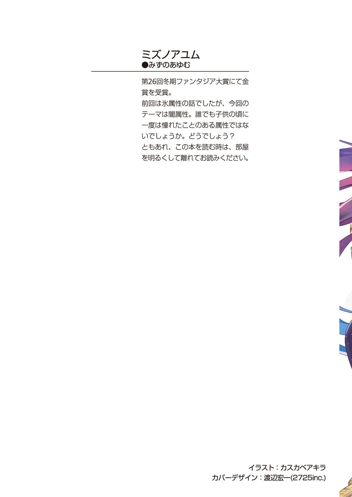
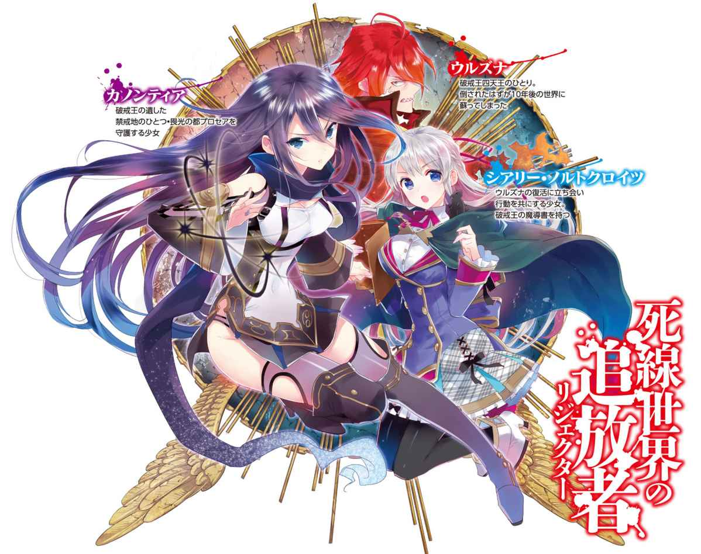
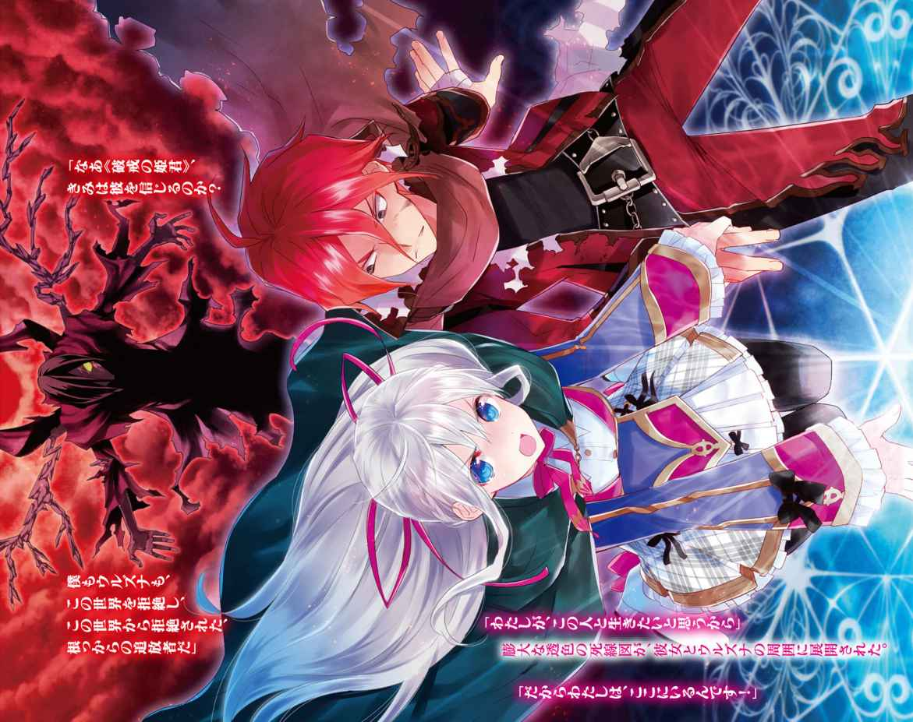
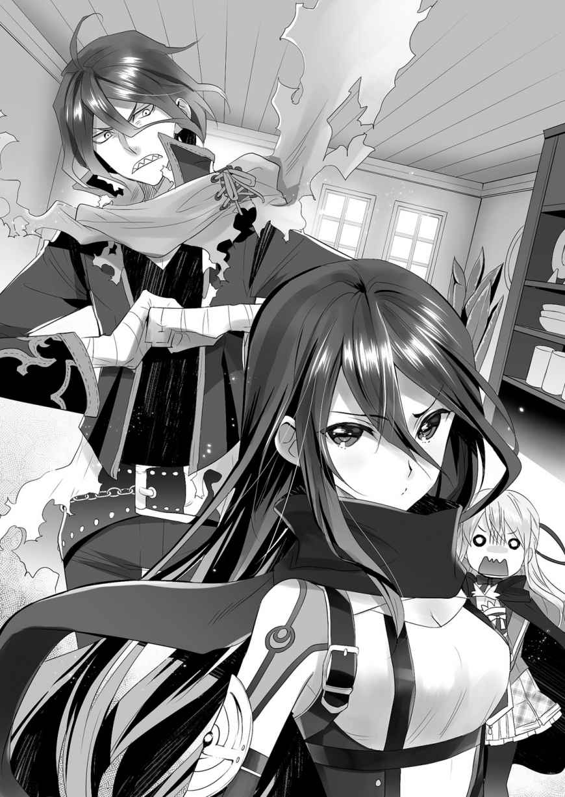
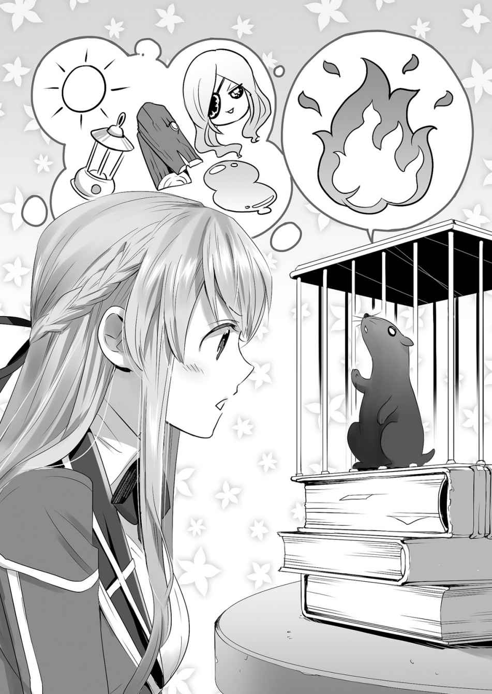
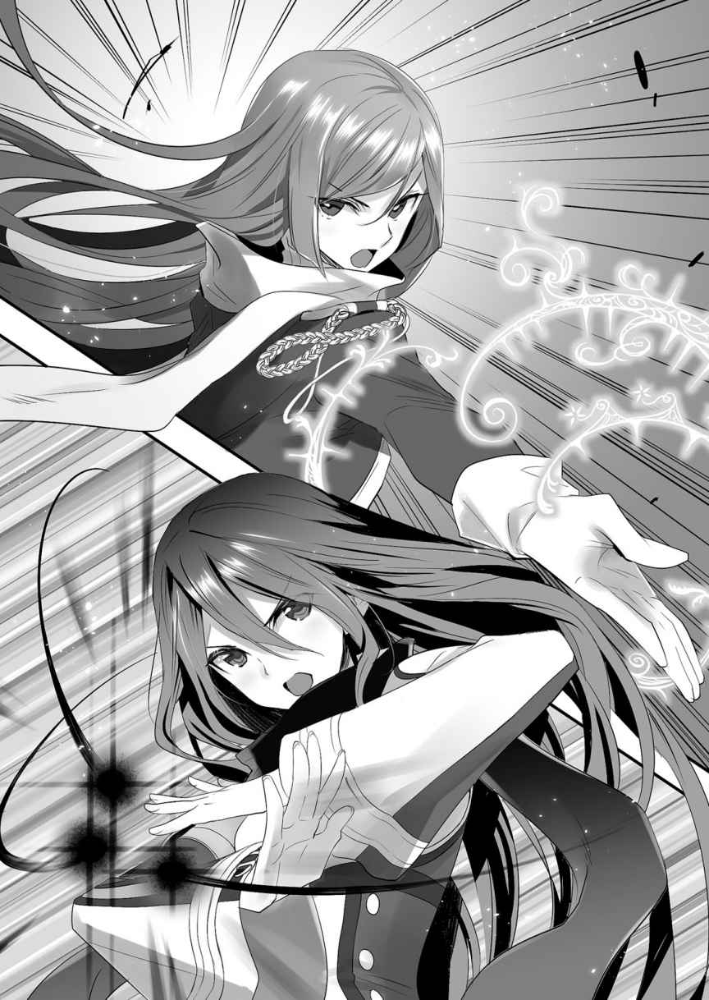
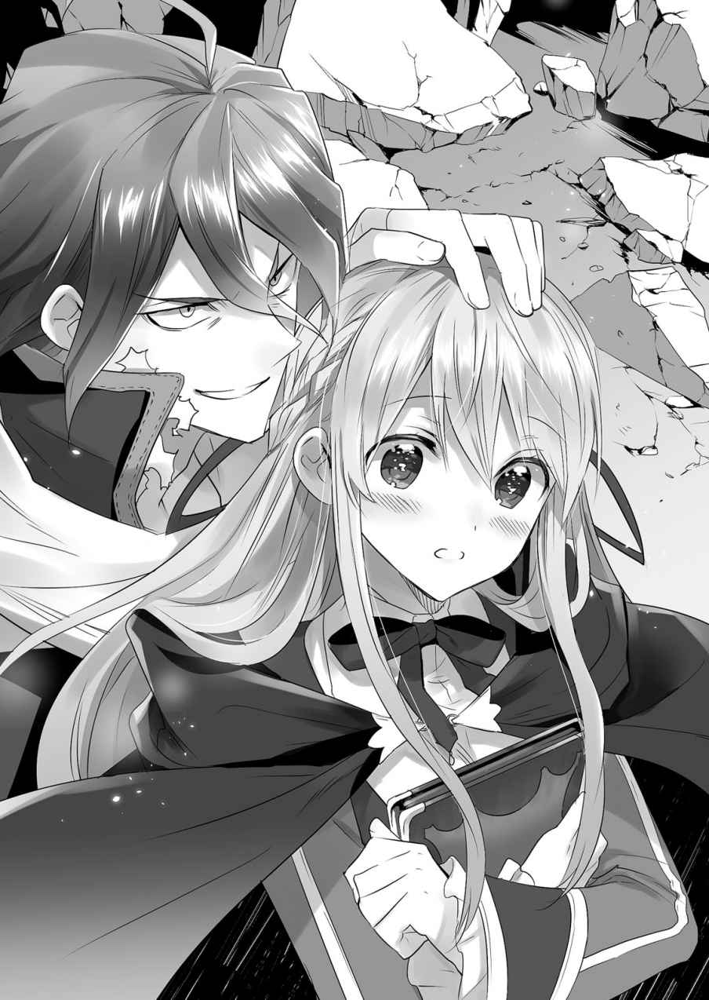

| 死線世界の追放者2 | |
| ミズノアユム | |
| (2015) | |



死線世界の追放者２
ミズノアユム

富士見ファンタジア文庫
本作品の全部または一部を無断で複製、転載、配信、送信したり、ホームページ上に転載することを禁止します。また、本作品の内容を無断で改変、改ざん等を行うことも禁止します。
本作品購入時にご承諾いただいた規約により、有償・無償にかかわらず本作品を第三者に譲渡することはできません。
本作品を示すサムネイルなどのイメージ画像は、再ダウンロード時に予告なく変更される場合があります。
本作品は縦書きでレイアウトされています。
また、ご覧になるリーディングシステムにより、表示の差が認められることがあります。
口絵・本文イラスト カスカベアキラ
序章 大根役者達の自殺劇
──エストラント王都アルゾール、とある牢獄。
半死半生の男が、鎖に繫がれていた。
「............」
牢獄といっても、傍目からは古びた空家にしか見えない。
『表に出すわけにはいかない者』にあてがわれる、この座敷牢は、外部からは牢獄であることすら分からない。
半死半生の男が囚われているのは、一見ありふれた小部屋だ。内側には、隅々まで薄い死線図が張り巡らされている。外からは虫一匹侵入出来ず、たとえ中で巨牛が暴れ回っても外部には物音一つ届かない。部屋のすぐ外に、私服姿の特務騎士が立っているのが、扉の僅かな隙間から見えた。
「......おい。交代に来たが、見張りはお前だけか？」
扉の向こうで、牢番がそう言うのが聞こえる。
「仕方ないだろう。ただでさえ、例の『断片』騒ぎと......『奴』への追手で、ＯＯＴの人員は割かれているんだ」
「......ついこの前まで、我らの敵といえばこいつだったんだがな」
コンコン、と嘲るように扉が叩かれる。
だが、その挑発に応える能力は、もはや鎖に繫がれる男にはないのだ。視界の端を鼠らしき影が駆け抜けた。それを眼で追うことすら出来なかった。
「破戒王残党軍首領......その肩書きも、今やとうに意味を失ったか」
「ああ......まさか、本物の四天王、──が現れてはな。当然だろう」
仇の名が聞こえると、かろうじて、ぴくりと男の肩が揺れた。
忌まわしき仇──十年に渡る彼の悲願を、寸前で断ち切った最悪の裏切り者だ。
目の奥に残って消えない。紅蓮の髪と、氷の刃。思うほどに恨みが募る。砕き、引き裂き、消し去りたい。落とし前を。罪には罰を。断罪を。
どれだけ言葉にならない呪いの言葉を吐こうとも、それが外に届くことはない。
「だが実際、ここは問題ないだろうさ。......あの傷で動けるわけもない。ここまで生かすことだって、相当にうちの識者が無理をしたんだ」
そう。今の彼は、瀕死の状態で留められた死に体だ。あの裏切り者に開けられた風穴には最低限の延命治療だけが施されている。ただ取り調べの為に生かされている身体。
どれだけ心が強く復讐を望んでも、牢を越えることも、騎士を倒すことも、今の彼には不可能なことだった。
「............」
己はどうでもいい。ただ、あのお方への忠誠を果たせなかったのがただ恨めしい。
また、視界の端に鼠が走る。小動物にすら嘲笑われている気がした。
「奴はどこに向かっていると思う？」
「まだ分からん。『断片』が落ちた場所はいくつか判明している。まず──」
牢番の騎士が、いくつかの地名を上げていく。それはただの音となって、瀕死の男の耳を通り抜けていく。意識は朦朧として、言葉を意味として理解することすら難しい。
「それに、プロセアか」
「！」
しかし、ただ一箇所の言葉が、瀕死の男の意識を僅かに呼び覚ました。
「プロセア......《畏光の都》か？ あそこの守護者は確か......カノンティアか」
「ああ。今度の『新月』のこともある。規模から言っても、要注意だろう」
（プロセア。畏......光）
彼の脳裏に反響する言葉。その反響は、彼の頭を少しだけ明瞭にしていた。
目の前に立つ黒い鼠が彼を眺めている。
──待て。
──この、虫一匹の侵入も許さぬ牢獄に、何故鼠が存在する？
「............」
鼠は男の視線に気付くと、踵を返す。ちょろちょろと床を走り、牢番の話す入口を見上げる。無感情な鼠の真ん丸の瞳が、男をちらりと振り返った。
「............！」
それが、死に際の男の見た幻覚だったのか、それとも別の何かだったのか。
どちらにせよ──瀕死の男は、身体を動かした。肉体は限界だった。だが、ただそれだけのことだった。彼は戦士ではない。剣士でもない。彼は物理限界などに囚われる必要のない、神秘の担い手なのだ。傷口から血が吹き出る。だが、その血飛沫が、床に図を描いてゆく。瀕死の男は、歓喜と狂気の入り混じった声を漏らした。
「我が、王、よ......」
黒き鼠は、入口の真下で、牢獄を脱出せんとする男を見据えていた。
部屋の中に、ゆっくりと霧が充満し始めた。
◆◆◆
「居たぞ！ 目標の馬車だ！」「囲め！ 決して逃がすな！」
十騎ほどの騎兵が、一台の馬車を追いかけていた。場所は街道。均された地面をゆく馬の脚は早く、鈍重な馬車との差をあっという間に詰めていく。
だが、先行する馬車の屋根の上に、一人の男が現れた。
「待て！ 誰か出て来た──奴だ！」「弓兵、構えろ！」
「ククッ......シィァハハ......」
両脚をたわめ、馬車の屋根を凹ませる。
「シィァァ───────ッヒャァ───────ッハハハハハ────────！」
射られた無数の弓矢をかわしながら、男が跳んだ。後ろから追い縋る騎馬のうち一騎の、目の前に着地。地面を滑るように、掌底を大きく引く。
「何っ！」
乗り手が咄嗟に手綱を引き、騎馬が嘶きながら前足を上げる。目の前の障害物を踏み殺さんとする馬の蹄に対し、赤髪の男はあろうことか、自らの掌底をぶつけた。
そして、──歴然とした体重差を覆し、騎馬が逆さにぶっ飛んだ。
「グワーッ！」
乗り手ごと横転する馬。赤髪の男はそれを尻目に踵で街道を抉り、勢いを殺す。
「おのれっ、化け物が！」
「だが、馬鹿め！ 馬車を降りたのは間違いだったな！ 半数は足止めせよ！ 我々は、馬車の方を追──」
追手の中でも指揮官らしき男が周りに指示を出す。だが、その直後、街道に轍を刻みながら停止した男が、反発するように、再び地面を蹴った。
地面を蹴って、開いていた十馬身以上の距離を一瞬で詰めて、指揮官の馬に飛び乗る。
「ひ、ひぃいい!?」
「なあにが間違いだと？」
赤髪の男は、片手で鞍の端に摑まり、もう片手で指揮官の頭を背後から鷲摑みにしていた。いきなり倍の体重を載せられた馬が歩調を乱す。
「き......っ」
恐怖に顔を引きつらせた追手の騎士はしかし、背後から頭を摑まれながらも叫ぶ。
「貴様！ どれほど逃げても無駄だ！ この国で、女王に与しない者に、存在すべき場所などない！ 貴様など、いずれ我らＯＯＴが必ず──ぶげっ！」
周囲の騎兵から放たれる術識。それを、摑んだ指揮官を鞍から引きずり落としながらかわす。ばたんばたんと転がり落ちる指揮官を尻目に、再び着地。
にやりと、周囲を行く騎兵を睨み笑う。指揮官を失った兵が、己の状況を理解してその顔を絶望に染めた。生身で馬に追いつく人間に、騎兵がどうすれば抗える？
男が高々と、獲物を見据えて哄笑した。
「シィァ───ッハハハハア！ どうしたァ！ 捕えてみせろ！ 狩ってみせろ！ 先行する馬車は貴様らよりは遅いぞ──もっとも、馬などという鈍い生物で、この俺から逃げられるとは思えんがなァ！」
「......フン、俺を追い詰めたければ飛竜にでも乗ってこい、雑魚どもめ」
「ヒィ！」
走行する馬車に追いつき、戻ってきた赤髪の男に、事情を知らずに彼らを乗せてしまった哀れな御者が悲鳴を上げる。
「本当にすみません御者さん......報酬は色をつけてお支払い致します」
行儀よく席についていた銀髪の少女が、丁寧に窓越しに頭を下げる。御者はこくこくと頷いた。一刻も早く逃げ出したい様子だったが、彼らを放り出す気もないようだった。もっとも放り出したところで追いつかれるのだから、当然といえば当然だったが。
王都の端から、いくつかの周り道を経て、牽車で十日と少し。
視界の先に街を見つけ、赤髪の男が鼻を鳴らす。
「ったく。めんどくせえ。......こんな田舎、二度と来ねえと思っていたがな」
「前にも来たことがあるんですか？」
銀髪の少女が問い掛ける。男はどっかと少女の対面に深く腰掛け、腕を組む。
「プロセア。今は《畏光の都》か。......いいや、俺とはあまり縁はねえ」
「............？」
首を傾げる少女。馬車が、少しずつ目的地へと近づいていく──
第一章 畏光の都プロセア
１．
カフェ『星見鳥』。
背中に掛けられようとする柔らかな布の感触で、カノンは目を覚ました。
「ああ、起こしちゃったかな、カノン。いいよ、寝ていてくれて」
「......いえ。結構よ」
差し出されたタオルケットを押し返し、カノンは身を起こす。腰まで伸びた漆黒の髪が流麗に流れる。二の腕や太股を晒した軽装に、長く伸びた上着の裾と、漆黒のマフラーがたなびいた。カノンは額を少しだけ押さえると、瞳を軽く瞬かせる。
「それよりも。コーヒーを貰えるかしら」
「......昨日も見回りしていたんだろう。無理はよくないよ」
壁時計を見ると、ちょうど真昼。寝ぼけるにしては遅すぎる時間だ。
カノンは机の上に積み上げていた資料の山を、てきぱきと本棚に戻していく。店主の趣味で作られた、この地下の資料部屋は、作業には向いているが少し狭い。
「無理？ ──私の名前は何だったかしら、セド」
店主である眼鏡の青年──セドは、カノンの硬い態度に軽く肩を竦める。
「もちろん、知っているよ。この街の、プロセアの守護者、カノン様だ」
「そう。それなら、休んでいるわけにはいかないのはわかるでしょう」
少女は階段を登り、扉を開ける。一階は、広く落ち着いた雰囲気のカフェだ。カウンターの椅子に浅く腰掛けると、セドがカウンターの内側に入りコーヒーを淹れ始める。
「結界の様子はどうだい？ 変わりないかな」
「出てくる『グラスルズ』は小者ばかりよ。次の『新月』の日には十分間に合う」
「上手くいけば、この街......いや、女王様のエストラント始まって以来の偉業だ。僕も尽力させてもらうけれど、いつもありがとう、カノン」
「それが私の役割よ。......お礼を言われるようなことじゃないわ」
すげなくカノンは応えた。カフェの客の何人か──刀や杖、鎧、理器を携えた人々が、カノンに気付き片手を上げる。気の早いことだ。
「何か食べるかい？」
「すぐに家に戻るわ。まだ『闇帯区』の分析が途中なの。......何か手紙は届いてる？」
「ああ......そうだね」
言われて、セドは棚から何通かの手紙の束を取り出す。
「大概は王都からの激励と、当日の国軍との連携の確認だね」
「必要なことは戦闘稼業にも周知させておいて」
この『星見鳥』は、プロセアの居住区の端にある。日中は普通のカフェである一方で、ある理由でこの街が活性化する夕方から夜にかけては、傭兵や冒険者といった『戦闘稼業』の詰所になるのだ。外にも警備の者がいる。
「そういえば一通、ＯＯＴからの手紙が来てるね」
「ああ......前の脱走者の一件の続きかしら」
コーヒーを飲み干し、手紙を受け取って席を立つ。セドの心配そうな瞳が目に入るが、構う気はなかった。彼女は、何年も協力関係にあるこの店に対し、そこまで気を許してはいなかった。その気もなかった。
「もう少しゆっくりしていけば......」
からん、ころん。
セドが引きとめようとしたそのとき、扉につけられたベルが鳴った。カノンが振り返り、新たな客を見る。
「あ、えっと。......し、失礼します」
入ってきたのは、綺麗な銀髪の、小柄な少女だ。いかにも育ちの良さそうな立ち姿。真新しいケープと、スカートの腰元には真四角のポーチのようなものを下げている。
少女は慣れない様子で、入口から入ってすぐのところから、店の中を見回している。
「いらっしゃいませ、お嬢さん。一人かな。席はカウンターで良いかな」
気付いたセドが緩やかに歩み寄る。カノンは少女を彼に任せ、出て行こうとする。
だが、続く少女の言葉がその脚を引き止めた。
「あ、いえ、違います......実はこちらに、カノンティア様が居ると伺ったんですが」
「......それなら、私だけど？」
扉を半分開けた所で足を止め、訝しげに少女を見る。
「え！ そうでしたか、失礼しました。同じくらいの歳の方だったなんて」
少女は目を丸くする。確かに年頃は同じくらいだ。カノンの方が少し細身で背が高い。銀髪の少女の方は、服装を見るにどこかの学生だろうか？
「......何か用？ インタビューは受け付けていないのだけれど」
邪険というほどではないが、素っ気ない態度で応じるカノン。彼女は自分がそれなりに有名であることは自覚しているが、見世物のように思われるのは本意ではない。たまにあるのだ、暢気な学生や暇人が、物珍しさだけで見に来ることが。
「あ、いえ、そうではなく。......ええっと」
しかし、結論から言えば、彼女のその心配は杞憂だった。いや、そんな程度ではなかった。
銀髪の少女は、小さく息を吸い、姿勢を正す。続いて放たれた言葉は、カノンのみならず、その場にいた全員の度肝を抜いた。
「初めまして。わたしは、シアリー・ノルトクロイツと言います。
禁戒地『畏光の都プロセア』の守護者、カノンティア・イルスさま。あなたの築いた結界、闇帯区内部への侵入を──禁戒地の攻略を許可して頂きたく、こうしてお願いに参りました」
「............!?」
◆◆◆
かつてこの国──エストラントには、一人の暴君が存在していた。
当時の王家を弑逆し、玉座についた《破戒王》、ローゼンダミス。
その人並み外れた術識の能力と、およそ常人には理解し難い思考回路。更に最強の腹心である『四天王』を従えた彼は、国内の反抗勢力を力ずくで制圧し、隣国にも甚大な被害を与え、およそ人の考えつく限りの悪逆を尽くした。ほんの十年前までのことだ。
その破戒王も、十年前に斃された。弑逆された王家の生き残りであり、現在の女王──灼熱の力を持つティーセリア・ティール・エストラントとその仲間達によって。だが破戒王の支配時期は今でもこの国の暗黒期であり、望んで語りたがるものは殆どいない。
「......何か、勘違いしているのかしら？」
カノンはいつも冷静な瞳を、より一層鋭く尖らせる。彼女の背後では、話を耳にした客や戦闘稼業たちが完全に絶句している。
破戒王ローゼンダミスは、十年前に確かに倒された。だが、かの王の恐ろしさは、その個人の力量もさることながら、彼が『創り上げ、遺したモノ』の数量にある。
その最たるものが、『禁戒地』と呼ばれる特殊死線災害指定区域だ。
ローゼンダミスの残した施設の防犯装置。生み出した幻獣の群生地。正体不明の理器や術識の暴走地域。その種類は様々だが、どれも第一級の危険区域だ。
「禁戒地は観光名所でもなければ、学生が野外学習で行く場所でもない......それとも、この『畏光の都』はその程度のものだとでも言いたいのかしら」
「そ、そんな！」
カノンの住むこの街の名は、『畏光の都プロセア』。
禁戒地指定を受けている中では数少ない、人の住める領域。だがそれも、その災害の発生源である『闇帯区』をカノンが結界で封じているからこそであって、それがなければこの街はすぐにでも廃墟になるだろう。
「中は『グラスルズ』の巣窟。私が守護者になる前はもちろん......なった後も、迂闊に入ろうとした人々は例外なく廃人になる」
カノンは──カノンティア・イルスは『守護者』である。
禁戒地において、内からの災厄を抑え、外からの干渉を防ぐ役割を帯びた者達。といっても、カノンのようにフリーの人材が個人で担っているのは珍しい。
禁戒地に自ら入ろうとする人間など、およそ三種類しかいない。自分の実力を過信した馬鹿か、破戒王の遺産に目が眩んだ馬鹿か、そしてまずあり得ないことではあるが、女王に反抗している馬鹿か、だ。
「──まさか......例の『流星』の噂に誘われた？ それにしたって......」
「？」
当人に聞こえないように呟く。
一月ほど前、『破戒王の落胤』なる存在が処刑された日（それ自体、今では情報封鎖が掛けられている案件だが）、いくつかの禁戒地に『流星』が落ちた。
それは破戒王が遺したもっとも重要な力だという噂が立ち、カノンらはそれに釣られた侵入者を防ぐべく、一時的に警戒レベルを引き上げる必要があったのだ。
「......危険なことは、分かっているつもりです。ご迷惑はおかけしません。結界を開けてもらうだけでも、お願い出来ないでしょうか」
だが、シアリーの瞳には、遠慮はあっても迷いはない。それでいて馬鹿にも見えない。カノンは訝しむ。店内の他の人々も、動向を見守っているようだった。
「......なおさら、論外だわ。子供一人でなんて、死にに行かせるようなもの。守護者として見過ごすことはできない」
「いえ、わたしだけではないです。もう一人、その......手伝って下さる方が」
「もう一人......禁戒地の攻略を？」
「はい。今は、外で待って......」
そんな人間が、二人も？ カノンが訝しみ、シアリーが入口側に振りむこうとして、
──どぉん、と。
入口の瀟洒な扉が外側から壊され、内側に警備兵が吹っ飛んできた。
「!?」
「ぐおあっ......！」
革鎧を半ば抉られた男が床を転がる。この店の、表の警備を行っている戦闘稼業だ。
「カノン様！ セドさん！ 申し訳ありません、......何者だ、コイツ......！」
「なんだい、どうしたんだい？」
店内の戦闘稼業の者達が一斉に殺気立ち、セドが警備に問い掛ける。
「いえ、不審な者が店を見張っていたので声を掛けたのですが、いきなり暴れ出し......」
「──ンだと？ 先に仕掛けてきたのは貴様らの方だろうが、アア？」
破壊された扉が蹴り飛ばされ、砕けた硝子を踏み締める音。
現れたのは、片手で別の警備兵の頭を鷲摑みにしている、赤髪の男だった。
「............！」
シアリーが背後で絶句し、顔を真っ青にした。怯えているのか。やはり、彼女のような人間を禁戒地に入れるわけにはいかない。こんな狼藉は滅多にないとはいえ、例外的な馬鹿というのは、どこにでも少なからずいるものだ。
「まあいい。おい」警備の片割れを打ち捨て、「畏光の守護者ってのはどいつだ」
「......私よ」
一歩を踏み出す。
「あン？ なんだ、ガキじゃねえか。こんな奴に護られるとは、禁戒地ってのはやはり、ままごと遊びの封印らしい」
「──......」
カノンは無言で眉をひそめる。前言撤回。例外的な馬鹿にしても、これはとびっきりだ。無暗に高圧的で、自らの優位を無条件で信じる傲慢さ。戦乱の時代ならばともかく、この平和を取り戻した時代に、この短絡さは、いっそ珍奇ですらあった。
「あのクソ生意気な封印も貴様のものか？ ならば──」
「今すぐ」
男の言葉を断ち切る。
「今すぐここで地に伏して。狼藉を誠心誠意謝って。すごすごと尻尾を丸めて帰りなさい。今回は、それで不問にしてあげるわ」
「──アア？」
カノンはこの店には馴染んでいない。慣れ合うつもりもない。だがそれとは別に、彼女はこの街の守護者でもあった。

......ここまで、第一印象で『倒すべき相手』だと感じたのは初めてだ。
「私は忙しいの。あなたみたいな三流のチンピラが、私の時間を奪わないでくれるかしら。──早くしなさい。あと五秒以内。四......三、......二、」
「いきがるなよ、小娘──！」
男は、怒りながら反射的にカノンに手を伸ばし──
カノンの開かれた掌に、ほんの一瞬、『黒い光』が瞬いた。
「ゼロ。──《アステリア》」
男の体が、ぐるりと宙を舞った。
「!?」
カノンの胸倉を摑み取ろうと伸ばされた手が逸れ、見えないレールに乗ったかのように、投げ飛ばされる。カノンを飛び越え、頭から床に叩きつけられる。床が軋む音。
「ガッ!?」
「態度が大きい。頭が高い。煩い。何様のつもり？ ......そこで一生、見上げてなさい」
背後を見遣りもせず、カノンは赤髪の男に放り捨てられた警備員の様子を確認。気を失っているだけのようだ。だが仮にも戦闘稼業の詰所を任されている警備員だ。本来そこらのチンピラ相手にやられるような者ではない。一体どうして──
「──カノン！」
セドの緊迫した声に、思わず振り返る。
「────なァにしやがるァあアァこの小娘ェ！」
赤髪を振り乱して、男が飛び起きた。ぶんぶんと頭を振り、凶悪にカノンを睨みつける。
「......無傷？」
体力だけはあるのか、それとも単純に鈍いのか。彼女自身、必要以上だと思うほどの勢いで叩きつけたはずなのに。動揺よりも、不快感の方が大きい。チンピラは、両手を鉤爪の形に強張らせた。その両足が板張りの床を踏み締め、前傾姿勢に移行する。
「この俺サマに不意打ちカマすとはいい度胸だ！ いいぞ！ ならば死──ぶっ！」
だが、咄嗟に身構えたカノンに、男の攻撃が届くことはなかった。
男が床を蹴った瞬間、銀髪の少女が飛び出して、男の突進軌道を、腰のポーチから抜き出した本──のようなもので、遮ったのだ。
男は、自らの突進の勢いのまま、本の表紙に顔をぶつけた。
ばっちいんと間抜けな音がした。
「......え？」
「すみませんでした！ 大変申し訳ありませんでした！ 失礼します！」
今度こそ、カノンには理解出来なかった。あっさりと男の動きを止めたシアリーは、何度もぺこぺこと頭を下げると、男の服の裾を摑んで引っ張る。
「何しやがるシアリー！ あのクソ生意気な小娘をぶちのめしてやる！」
「やめてください！ 『これ』の制御、解きますよ！」
少女が手に持った本を示す。よく見るとそれは本ではなく、楽譜のようなカバーがついた、一枚の金属板のようだった。それを見て、激昂していた男が露骨に顔を歪める。
「ぐっ......チィ！ 覚えてろよ、貴様！ 守護者だか何だか知らんが、俺は受けた屈辱は忘れんからなァ！」
「だから、やめて下さいそういうの！ ああもう、どうしてこんな......」
男は驚くほどあっさりと踵を返し、少女と口論しながら外へと出て行った。
やがて残ったのは、困惑に満ちた静寂だけ。
「............何なの、一体？」
茫然とカノンが呟く。答えられる人間は、その場にはいなかった。
......壊れた入口から入り込んだ風で、カウンターの上の書類がめくられる。
その中の一つ──王都の特務騎士団の印が押された手紙に、彼女の護る禁戒地に関する新たな『不確定要素』についての忠告が記されていた。
２．
「──ですから！ どうしてああなるんですか！」
「あー、うるせえうるせえ」
道端を歩きながら、カフェを荒らした二人組──銀髪の少女シアリーと、赤髪の男、ウルズナは、激しく口論を続けていた。
「話をつけるまでは外で大人しくしてくれるって言ったじゃないですか！」
「だから、つっかかってきたのはあっちだ。黙って見張ってたら、何を見ているだの怪しいだの何だの言ってきやがって」
「それが悪かったとしても、そこからどうして、一瞬で守護者さんに敵対して攻撃されて床にめり込む羽目になるんですか！」
「ンだと！ あんなもの攻撃を受けた内に入らん！ 不意をつかれただけだ！」
「問題はそこじゃありません！」
ぎゃーぎゃーと騒ぐ。やがて、周りから物珍しげな眼で見られているのを察して、シアリーが大きな溜息をつく。諦めたようだった。
「......どうするんですか。ここは今まで回ってきた場所とは違います。国内でも最大規模の禁戒地の一つ、畏光の都プロセア」
周りを見渡す。
エストラントの北東にある、慎ましやかな街だ。名物と言えば豊かな自然と死線加工した織物くらいで、ありていにいえば田舎だ。もともとはここまで小さな街ではなかったのだが、今では敷地が半分ほどになっていることもあり、どうしても喧騒よりは静けさが勝る。ただ、それでも大規模禁戒地を抱えているだけあって、道端を歩いているだけでも戦闘稼業らしき人々をちらほら見掛けるし、警備兵も多い。
シアリーは、遠くを見上げた。
「あの中に入れなければ、魔導書の『断片』を探す以前の問題です」
見上げた先には、『夜』があった。
太陽はほぼ天頂。真昼の街並みの向こうに、そこにだけ巨大な雲が掛かっているような、深く暗い、半球状の日陰に包まれた区画が存在する。
あれが、先程ウルズナを叩き付けた少女──《畏光の守護者》カノンティアの管理する地。畏光の都の中心、災厄の発生源たる『闇帯区』だ。
「守護者。禁戒地の封印に特化した名目死線を得ている彼らは、その守護領域において『英雄』と同等か、それ以上の力を持つ......以前、読んだ本にはそう書いてありましたけど、それにしても、こんな規模の結界を一人でなんて......」
「フン、所詮は地元でなければ十全に力を振るえん、つまらんご当地英雄だ。どちらにせよ、あそこに『流星』──断片が落ちたのは確かな情報だ。さっさと行くぞ」
「ですから、どうやって入るんですか。あそこはカノンさんの結界で、入るのも出るのも彼女の許可なしでは無理です。境界には国軍の警備隊も常駐していますし」
「......お前は馬鹿か？」
「え？」
ウルズナの、呆れを通り越して驚きに近い表情。
「てめえが腰に提げてるのはなんだ！ さっさと地図を出せ！」
「え？ ──あ、は、はいっ」
ウルズナの剣幕にシアリーは慌てて、腰から金属板を抜き出す。その表面に何度か指を走らせると、奇妙なことに、その金属板は表面に何かの絵柄を表示する。
「こっちじゃなくて......確かここの......ありました、これです」
「よし。──フン、こっちか」
ウルズナはそれを見ながら道を曲がり、人気のない細い路地に入った。既に闇帯区にかなり近づいている。周囲は廃棄された住宅街で、地面は雑草だらけだ。
ウルズナは路地の中心あたりで立ち止まると、周囲を乱暴に蹴り始めた。苛立っている──というわけではないのはすぐに分かった。
やがてその爪先が、硬い物を蹴っ飛ばした。
「やはりな。奴らはこちらの入口を把握していないらしい」
強く踏みしめると、土煙が円形に跳ね上がる。
そこにあったのは、金属製の丸い蓋だ。表面はとうに平らに擦り切れており、取っ手部分もぼろぼろだ。ウルズナは僅かな凹凸に爪を立てて、強引に持ち上げた。
「......ここは」
「地下水路だ。結界の中にまで続いている。......何が『守護者』だ。あの結界は、奴のものではない」
◆◆◆
──あの『落胤』の処刑の日から、およそ一月が経過していた。
シアリーとウルズナの二人は、女王の追手から逃れながら、既にいくつかの禁戒地への侵入に成功していた。ウルズナと魔導書の二つの情報アドバンテージを持つ彼らは、容易く守護者の裏をかけた。......それでも完全な隠密行動とはいかず、強引に突破する羽目になったのだが。シアリーがカノンに会いに行ったのはその反省もある。
......だが、そこに二人が求める『魔導書の断片』は見つからなかった。
当然と言えば当然。禁戒地はエストラント国内外に点在し、大小含めればその数は両手の指では到底足りない。あてずっぽうで行って見つかるものでもなかったのだ。
ただ幸いにも、その中途で『処刑の日に「流星」が落ちた場所』に関する情報を摑むことが出来た。情報があった何箇所かの中で、このプロセアを選んだのはウルズナだ。
「ふん！」
鈍い音を立てて、半ば石畳と同化していた蓋が、内側から空に吹っ飛ばされた。
がらんがらん、と音を立てて転がる。地面の穴から、まずウルズナが外に飛び出し、次にシアリーが這い出た。羽織ったケープは埃や泥で大きく汚れている。
「けほっ、けほっ！」
「到着だ。守護者の手を借りるよりよっぽど早い」
「うう......結局、こうやって、こそこそするしかないんですね......。それで、ウルズナさん。どうしてこちらを選んだのか、そろそろ教えて頂けませんか？」
「俺はこっちだ、馬鹿」
「え、あれ!? ......思った以上に暗いですね」
そこは既に『夜』だった。入ってみると、その暗さが改めてよく分かる。お互いに僅かに輪郭が分かる程度の薄暗がり。ウルズナが鼻を鳴らした。
「『闇』の結界か。だが、こう暗くては話にならん。ランタンを貸せ」
「え？」
そう言って、ウルズナはシアリーの持つ鞄から、ひったくるようにランタンを取り上げた。ウルズナは慣れない手でランタン上部のスイッチを押す。
薄暗闇の禁戒地に、その光は思った以上に明るく輝き──
「待って下さいウルズナさん！ ここがどういう場所か、忘れたんですか！」
シアリーが慌てて、ランタンに手を伸ばす。
だが、その指がスイッチを元に戻すよりも早く──『それ』は来た。
「あ？」
ランタンから『手』が出てきた。
『手』とは言っても、その表面は硝子片の集合めいてささくれだっており、明らかに人間のものではない。『それ』は──人型の光は、ひどく滑らかな挙動で、水面から跳ねる魚のようにランタンの光から抜け出した。
鏡面の、目鼻のない顔。長く伸びた両腕。砕けた硝子片と布で出来た幽鬼のような身体は、ローブの端を地面に擦りながら、宙に浮いている。その総身は、薄ら光り輝いていた。ランタンの炎とは違う、陽光にも似た温かな──しかし空々しい光だ。
「災厄、っ......ぁ......！」
異形の怪物は、伸ばした長い腕を、シアリーの顔にかざした。途端、シアリーの身体から、無数の、光の線が湧きいずる。それらは全て、宙に浮く異形の怪物へと吸収されてゆき──少女の瞳から焦点が失われていく。
「死」
その怪物の顔面に、
「ね！」
真横から、ウルズナの五指が、思い切り叩きつけられた。
甲高い破砕音を立てて吹っ飛び地面を転がる怪物。だが、すぐにふわりと浮かび上がる。砕けた頭部の破片が、白く輝く死線に変わって本体に戻ってゆく。再生。
「チッ、やはり生身では効かんか！ ......シアリー、問題はないな！」
「大丈夫です！ ......ただ、っ、眼、が......」
へたり込んだシアリーが目元を擦る。伸ばした手はウルズナを探して彷徨う。あの怪物に『光』の死線を喰われ、一時的に視力が失われているのだ。
ウルズナはランタンを消す。完全に失念していた。この街の名の由来を。
「『硝亡』──今は、そう呼ばれているのだったか。光から現れ、人の光を奪う死線獣。まさか、まだ残っていたとはな」
そして、道の端々から、同じような怪物が無数に姿を現した。その全てが薄らと光り輝き、ウルズナとシアリーを確認すると、緩慢な仕草で近づいてくる。
「............」
ウルズナは未だ視界が戻らぬシアリーと、グラスルズの大群を順に見据えると、
「だああああくそッ！ 気に喰わん！」
「きゃっ！」
シアリーを抱え上げ、彼はその場から離脱した。
畏光の都プロセア・闇帯区を覆う暗闇は、禁戒地の災厄そのものではない。生まれ出てくる災厄を封じる為にあるのだ。
──謎の怪物、光性の死線獣、グラスルズ。
彼らに喰われた人間は、まず光を失い、続いて熱を、活力を喰われ、人の形を保ったまま、ただ生命のみを失った標本となる。
「畜生が！ この俺が、こんな雑魚相手に逃げ隠れしなきゃならんとは......誰が逃げ隠れだ！ 面倒だから後回しにしてやっているだけだ！」
「誰もそんなこと言ってません......！」
ウルズナは傍らの民家の壁に爪を立てた。すぐそこで、空から降りる半球状の闇のベールが居住区と闇帯区を仕切っている。グラスルズは中心にいくほど数が多くなっているらしく、彼らはここまで後退させられた形だった。
民家の陰から通りを覗く。離れた位置にある大通りを、幽鬼めいてうすぼんやりと輝きながら浮遊する無数のグラスルズ。光無きこの街の、あれが唯一の光源というわけだ。
「ですが、これでは......魔導書も使えません」
シアリーが言う。彼女の魔導書は、表面に光の紋様を描くことで情報を表示する。この場所を探索するには不向きだ。
「一体あれは......」
「『死線獣』。術識と同じ死線体の獣......実体を持たんがゆえに、析力抜きの物理攻撃は効果が薄い。チッ、凍蜘蛛さえあれば......！」
「ウルズナさんは、あの怪物を知っているんですか？」
「知っているも何も、ここにこいつらを封印したのは、俺とヴィーヴィ......くそッ！」
ウルズナが背後に飛びのく。グラスルズが民家の壁をすり抜けて姿を現した。
「言ったそばから！」
「きゃっ！」
シアリーを押し飛ばし、両手を強張らせる。だが、その指先に彼の求めるもの──氷爪は生まれない。舌打ちしながら、仕方なくウルズナはグラスルズに直接飛びかかり、
「『私の星は灯を鎖す』」
苛立たしげな声とともに。
グラスルズが、それに肉薄したウルズナもろとも──地面に叩きつけられた。
「がぁッ!?」
「え！」
突如の攻撃に、同じように叩きつけられたグラスルズがもがき、暴れる。ただ一人無事なシアリーが、何が起きたか分からず茫然と周りを見る。
「怪我はない？」
困惑する少女に、横合いからそんな声がかけられた。
振り返った瞬間、背後の空から一人の少女が降り立った。細身の体に長く伸びた黒髪、マフラー、コートの裾。鋭く冷たい光を帯びた瞳が、シアリーをじっと見つめる。
「......大丈夫のようね。もう少ししたら視力も戻るから、じっとしていなさい」
「あ、は、はい」
「貴様ァ......守護者か！」
叩きつけられたウルズナが、地面を引っ搔きながら呻く。その隣では、グラスルズが圧力に耐えきれず押し潰されていく。まるで過剰な重力が掛かっているかのように。
「煩い。......ただそこで、黙って見上げていなさい」
現れた少女──カノンの右手が、ぎゅっと握り込まれる。
「私の《夜会星図》を」
その下の地面に、黒い紋様が現れる。浮かび上がるのは、同心円状の黒色の死線図だ。──再び、クレーターを生み出してウルズナが地面にめり込む。グラスルズの身体が完全に押しつぶされ、砕け散った。白光の死線に照らされる、少女の黒髪。
「《畏光の守護者》、カノンティア、さま......」
「さま付けはやめて頂戴。......報告では確か、赤髪の柄の悪い男に、銀髪の女子学生。だけど、もう一人は？」
少し考えるも、やがてカノンはウルズナの方を見据える。
「──以前から、禁戒地の侵入者の話は聞いていたわ。六方迷宮を一日で踏破してきただとかね。あなたたちの仕業？」
「ぐっ......はん！ あんなものに十年も手こずる貴様らには、ほとほと呆れ果てる！ 守護者どもも、番犬にもならなかったぞ......！」
顔だけを上げ、ウルズナが唇を吊り上げる。カノンが一層深く眉根を寄せる。
「どうやって入ったのかは、あとでゆっくりと聞かせてもらうとして」
カノンはちらりと、シアリーの方を威圧的に見た。シアリーは慌てて口を開こうとするも──カノンは、彼女を護る様にその前に立った。
「......それで、この子はどこから攫ってきたの」
「............」「............」
どこからどうみてもチンピラそのものの男と、いかにも育ちの良さそうな、かっちりとしたお嬢様風の少女。そう思われても仕方のないことだったかもしれない。
「あ、あの......カノンさん！ そうじゃないんです、わたしとウルズナさんは──」
「──それが、何か貴様に関係あるのか？」
沈むような声が、ウルズナから放たれた。石畳に指先をめり込ませ、震えながらも、ぎりぎりと、上体を起こしていく。カノンが驚きに目を見開いた。
「まさか。私の《アステリア》を受けて、起きるなんて......！」
「シィィ......！ アァ、アァァ......───ッハハハ、ハハア！」
哄笑と共に、ウルズナが跳ねた。高重力領域を逃れ、まっすぐにカノンに突進する。
「ウルズナさん、待っ......！」
だが、シアリーが恐れた蹂躙は起きなかった。
ウルズナは突進の軌道を逸らされ、カノンの左にあった民家の壁に叩きつけられる。
「ぐっ......またか！ こざかしい！」
半ば予測していたのか、ウルズナは受け身を取りすぐに方向転換する。まただ。カノンに、ある一定地点まで近づくと、突進の勢いがあらぬ方向へと逸らされてしまう。
「......『私の星は灯を鎖す』」
ヴン、と。カノンの周囲に『円』が出現する。
「『惑う星は巡り回る 狂う星は摑み喰らう 揺らぐ星は解れ繫がる』」
カノンを囲うように現れた三重の円は、その軌道上に黒い球──『星』を宿していた。
それは星の軌道を象った模型──天球図。ただ一つ違うのは、その星は光を放つものではなく、暗がりの中でなお深淵な、純粋なる闇色であるということ。
「──闇性現象識、《夜会星図》」
ふわりと、カノンの小柄な体が宙に浮かぶ。少女を中心に、彼女を護る籠のような闇色の天球図が、ゆっくりと回転を始めた。
「闇性現象......まさか、引力操作か？」
ウルズナが露骨に顔を歪める。あの立体死線図を中心とした力場が、ウルズナの突貫を逸らした。先程の高重力も、地面に張られた死線図によるものだろう。
カノンは驚き半分、警戒半分の面持ちで、それに応える。
「......そうよ。『闇』とは光を吸収する現象──『引力』である。......何も知らないってわけじゃないのね──チンピラの癖に」
高位の術識、特に『光』と『闇』の二大上級属性は、未だ完全に解き明かされていない。特に闇識は習得することすら難しく、出来たとしても、ただ物を黒く染めたり、人間に暗視の加護を与えたりするくらいだ。単体で戦闘技能にまで昇華させた識者など、ウルズナの知る限り一人しかいない。
「ハッ......お行儀の良い解釈だ！」
だが、そう──あの男の凶悪極まりない術識に比べれば、カノンのそれはお遊びも良い所だ。問題などない。ウルズナは再び身を沈ませ、突進の予備動作を取る。

「まあいい。立ちはだかるというなら、普段通り、薙ぎ払って進むだけだ」
「いちいち不快な男ね」カノンが言った「浅薄。軽薄。──出来ると思うの？ 守護者である私に、この禁戒地の中で」
「はっ、封印？ 守護者？ よく言う。地下水路も知らん、ヴィーヴィルの封印の、上澄みを掬っているだけの勘違いした小娘が」
にわかにカノンの雰囲気が変わった。今までの、道端の取るに足らないチンピラを見るようなものではない、強い困惑と、警戒。星図が回転を早める。
「──気に喰わないわね。三下の癖に、あなたは何を知ってるの」
「フン。貴様らの知らんことを、全てだ！」
「......国軍かＯＯＴに突き出すつもりだったけれど──気が変わったわ。全て教えてもらう。私の《夜会星図》が、ただの防御術識だと思ったら大間違いよ」
黒髪が大きく広がる。そのシルエットが星図と合わさり、まるで彼女自身が、活きた闇識の死線図のようになる。
「ま、待って下さい！」
だが、二人の間に、咄嗟にシアリーが飛び込んだ。カノンが片目を細める。
「......危ないから下がっていなさい。事情ならちゃんと、その男を倒した後に──」
「ですから、違うって言ってるじゃないですか！ 話を聞いて！」
シアリーが叫び、カノンは思わず目を丸くする。
「貴様、またそれか。守護者の説得なんざ土台無理だと、何度言えば分かる？」
そう言いながらも、ウルズナは立ち上がり腕を組んだ。カノンはいよいよ困惑したようだった。王都からの手紙に書かれていたのは、彼ら......禁戒地を狙っているかもしれない者の限定的な情報だけで、特にこの二人の情報は少なかった。
「あなたたち、一体──」
「邪魔だ、退け」
唐突に、そんな言葉が、横合いから飛び込んできた。
「!?」
同時。宙に浮いていたカノンを、奇怪な『霧』が覆い隠す。
霧は、巨大な腕の形をしていた。カノンの総身は横合いから伸びてきた巨腕に鷲摑みにされる。グラスルズ？ 否。それは白いが、光ではない。
「しまっ......！」
闇すら白く濁らせる、霧の巨腕。カノンはウルズナを悔しげに睨み（無論、ウルズナには睨まれる心当たりはなかった）咄嗟に星図を展開しようとする。
「堕とせ」
だがそれより早く、巨人の腕が、カノンを、近隣の民家に叩き付けた。
民家は霧の腕によって、縦に断ち割られて倒壊する。屋根が、柱が崩れ、比してあまりに小さな少女が、崩れ落ちる家屋の内部へと消え去った。
「な......に？」
「カノンさん......っ!?」
ウルズナが眉をひそめ、シアリーが息を吞む。
「......一月」
聞こえてきたのは、そんな言葉だった。すぐ傍の曲がり角の、その奥からだ。
ぽた、ぽたと、石畳に滴が落ちる音。
「一月、以来、か」
曲がり角から、一人の人影が姿を現す。
「分かっていた。お前は......。近いうちに、必ずここに。来ると......」
歩みが止まる。濁った咳を繰り返す。
「何故、なら......《槍》は誰にも干渉できない。《散在無限》は何を遺したかすら判然としない。──確実に『四天王の関与』が分かるのは、この場所、だけだ......」
「！」
シアリーがウルズナを見る。ウルズナは眉間に皺を寄せ、声の方を見つめている。
畏光の都。光の怪物を抑え込む夜の封印。それを護る星の少女。それら全てが指し示す、一つのキーワード。──闇。
「......そうだ。ここにあるのは、《死にたがり》のヴィーヴィルが遺した封印術識。......そういえば、お前もあの討伐に、同行していたか？」
角を曲がり、その影が現れた。
その姿を──霧と闇の向こうから響くその名を、少なくともシアリーは覚えていた。
「我が名は、ディエン。《波喰い》ディエン・フィザトール。最後の逝騎士である」
──十年に渡る残党狩りを生き延びた、破戒王陣営、最後の忠臣。風と水を操る識者。シアリーは、幾度となくその名と顔を目にしてきていた。
「っ............」
だが、男の姿はあまりにも、そのときのものとはかけ離れていた。
ディエンの足元には、ぽたぽたと滴る血が池を作っている。だがそれ以上に、その全身から死線が溢れ出している。純死線の光では、グラスルズは飛んでこない──闇の中でなお輝く、緑と青の死線。
何より異常なのは、その腹部には巨大な穴が開いたままだということだ。
そこから霧が湧き出しているため見え辛いが、確かに貫通傷がある。生きていることが不思議なほどの重い傷だ。......他ならぬウルズナが、彼らを始末した時につけた傷。
「四天王、《紅蓮》のウルズナ。貴様が行った最悪の裏切りを、......断罪する」
見るからに満身創痍。明らかな死に体──瀕死のまま留められた戦士。
「......『我が風と水は、波紋を食らい、闇を献ずる』」
莫大量の水と風が、渦を巻く。その死に際の身体から、片手に持った二振りの杖から、輝く緑と青の死線が間欠泉のごとく吹き上がる。
「『その介在を却下する。その媒体を否定する。水を腐らせ、大気を澱ませ、果てに光を貪り漁る。我は常闇の影。狂言回しに仕えし道化』」
二本の杖を振る。水色と緑色の死線が、宙を搔くように死線図を生む。
「風性水性複合術識・捧命」
半死半生のディエンを棺のように内部に取り込み、霧の巨人が姿を現した。
３．
十年間。
彼は、全てが終わった世界で戦い続けてきた。
──ティーセリア・ティール・エストラントによる破戒戦役。彼女は四天王を討ち、破戒王を倒した。だがそれは、破戒王勢力という巨大な怪物の、頭だけをもぎ取ったようなものだ。ティーセリアを殺し、破戒王の後を継がんとする者はいくらでもいた。
四天王に次ぐ地位と実力を持つ、中間幹部。破戒王側についた貴族の長。破戒王に直に術識の教えを受けた者。いくらでも、だ。
だがティーセリアの、彼女の治める『平和な世界』の強 さは予想以上だった。
さは予想以上だった。
再革命の、復活のチャンスは何度もあった。その度に、特務騎士に、国軍に、あるいは女王本人に邪魔をされ、そのたびに残党軍の長は入れ替わった。
彼は──逝騎士団の末席たるディエン・フィザトールは、自分が何人目の長だったか覚えていない。前任者は、自ら破戒王復活のための烙印を宿したものの、発動の寸前で《救国の苦労人》の閃光に消えたことを覚えている。
それでもなおディエンが残党軍に残り続けたのは、まず《泥沼の男》という術識の完全性を信じていたからでもあり、そして。
彼は、忠誠を誓っていたからだ。かつての主に。視界の端を駆け抜ける、彼にのみ見える黒く小さな獣に。逝騎士団に本来ありえざる、深く堅い狂信を。
◆◆◆
「クッ......クハハハ」
その有様を見て。
まずウルズナが漏らしたのは、つっかえたような笑い声だった。
「ククク......シィァハハハ......ハァーッハハハハ！ 誰だか知らんが、俺を断罪する？ その薄く野暮ったい術識でか？ 操り人形の騎士団の名を誇らしげに名乗ることといい、見掛け通り、頭に血が回ってないようだなァ」
「......十分、だ。ゲホッ、......貴様こそ、理解しているのか」
霧の巨人の奥で、陰鬱な、しかし激情に燃える瞳が、ウルズナを見据えた。
「今の......貴様は......弱い。英雄とは、程遠い。......生き恥も、良い所だ」
「......生意気な小娘一人を払いのけた程度で、調子に乗るなよ！」
ウルズナが、地面を殴りつけるように四肢で地面を跳ねた。
霧の巨人を見下ろす高さにまで飛び上がり、片腕を大きく振り被る。
「シィィァ─────ッハハハハハ────ハハァ────ッ!!」
それに対し、ディエンを覆う霧の巨人は、何気なく片手を上げる。
──ウルズナの渾身の一撃が、それだけで防がれた。
「何ィ......!?」
音はしなかった。ウルズナの爪撃は、霧で出来た手のひらに、半ばほどまで沈み込み止まった。搔き毟られた死線が僅かに霧散するが、減少量を上回る霧の生産量の前にあっと言う間に元に戻る。カノンの術識のように、技量と特性によって受け流されたわけではない。ただの、純然たる出力の差。
「......《紅蓮の凍蜘蛛》はどうした？ 四天王」
ディエンが、失笑と嘲笑が合わさったような声を漏らした。
「お前の......戦闘作法は全て、それを起点に、始まったもの......それを失った貴様に、何が出来るものか......」
ごぽ、と。
霧が密度を増した。巨大な藍色の水塊が、瞬く間にウルズナを包み込む。
「ぐ!? がぼっ......！」
巨人は更にもう片方の手を重ねた。ウルズナを捉えた水塊が、その圧力を増していく。ウルズナの暴れる腕が、強張らせた指先が、みしりと軋み始める。
ディエンの攻性術識の十八番『重き水』。高い比重を持つ濃紺の水が、包み込んだ相手をそのまま押し潰す。
「......ウルズナさんっ！ ──やめて！ やめて下さい！」
シアリーが近づこうとするが、ディエンは彼女を見もせずに杖を振るう。霧の巨人から放たれた水塊の雨が、少女を片手間のように吹っ飛ばした。
「かはっ、──ぐぅ！」
胸と脇腹に水弾が命中。シアリーはひとたまりもなく吹っ飛ばされると、そのままうつ伏せに倒れて動かなくなった。
「《烙印》か......寄せる波に抗うことも出来ん、哀れで愚かな小娘......」
ディエンは彼女を一瞥するも、すぐにウルズナに視線を戻した。
「だが、真に哀れなのは、お前だ......《紅蓮》。かつてのお前ならば、我が風は散らされ、水は凍らされ、抗える見込みなど、一片も、なかった......」
水塊の表面が波打つ。時に毬のように凹み、あるいは無数の針状に尖り、内側へと猛烈な圧力を与え続ける。常人ならとっくに潰され、水中に赤い花を咲かせている。ウルズナの強な肉体があればこそ、未だ抵抗を続けられている。だが、限界は近い。
『............ギ、ザマ......！』
ウルズナが、がぼりと泡を吐き出す。そもそも水中なのだ。圧力に耐えたところで窒息に至るのは必然だった。
「呆気ない......こんなものか。たかだか命を賭けた程度で届く相手に、私は......」
更にディエンが力を込める。ウルズナは屈辱と怒りに震える表情のまま、また空気を吐き出した。その指先が、抵抗を止めて痙攣し始め──
突如。
その周囲に、『黒い影』が渦を巻いた。
「......何？」
旋風に巻き上げられる無数の木の葉のような、あるいは魚影のような、漆黒の切片。深みのある闇とは違う純粋な黒。それはウルズナの周囲に無数に発生し、
そして、その無軌道な勢いのままに、藍色の水塊を微塵に引き裂いた。
「────！」
手首から先を失い、霧の巨人が距離を取る。水塊は引き裂かれた後、死線に溶けて消滅する。ウルズナが地面へと着地する。
「グ......！」
だが、その顔には、むしろ水塊に囚われていた時より激しい苦悶の表情があった。
突如として発生した、触れた物体を消滅させる黒き風。それは、最初から、発生源のウルズナを狙っていた。髪が、服の端が、折れた指先がそれに吞まれ消滅、あるいはその表面がヒビ割れ風化しはじめる。
「シア、リー！」
着地したウルズナは、苦しげに四肢をつきながら、背後を振り返った。
「う......大丈夫で......げほっ！ かはっ......」
黒い風は、シアリーと、彼女の魔導書の周囲にまで生じていた。うずくまっていた少女が、苦しげに咳き込みながら、必死に手を伸ばす。開かれた魔導書の表面に流動する、複雑怪奇な黒い死線図。シアリーの指先が、死の風に削られながらも、それに触れる。
......僅かに、風が緩む。死線図が脈動をやめ、ウルズナたちの周囲に巡っていた黒い風は勢いを失い、収まっていく。それを確認すると、シアリーは再びぐったりと脱力した。その口からひとすじの血が零れた。少女の顔色はひどく悪い。
「クソっ、この程度で緩むか、制御が......！」
「......それが『原典の呪い』か」
やや距離を置いて警戒しながら、霧の巨人の中からディエンが言った。
「破戒王、ローゼンダミスの、絶対の蘇生術識を......不滅を滅した代償。《失意の日々》との仮契約が、かろうじて貴様の命を留めている......真実だったか」
そう。一か月前、破戒王の蘇生術識を壊す為に、《紅蓮の凍蜘蛛・原典形態》に至った代償。死線レベルの死の運命を、シアリーの持つ破戒王の魔導書《失意の日々》が、なんとか干渉し、引き延ばしている。
だが、それは一時的なものだ。それが解けたら最後、ウルズナだけではなく魔導書とシアリーも消滅するだろう。だからこそ彼らには魔導書の断片が必要なのだ。ウルズナが、今更のようにディエンを睨みつける。
「思い出したぞ。あの残党軍の長か。半殺しにしてＯＯＴに渡してやったはずだが......一体どこから、それを聞いた？」
「間抜けな牢番の『頭』に、な。ＯＯＴの、人材の甘さに......感謝しよう。奴らのお陰で私は生き延び......お前の現状も、知れたのだからな......」
言いながら、杖を振るう。周囲の霧が水弾に変化し、無数に降り注ぐ。ウルズナはそれをかわして突進しようとするも──背後に少女が倒れていることに気付く。
「チッ！」
その場に立ったまま、爪撃と蹴りで弾丸を弾く。ウルズナの瞳は圧力のせいで充血し、抵抗の果てに左手の指はへし折れている。......だがそれでも、背後で倒れるシアリーの方が、遥かに重傷だ。
ディエンが杖を振るう。死線が渦を巻き、水弾が繰り返し射出される。ウルズナは弾き続ける。一発が側頭部に当たり、視界が揺れる。だが揺れた勢いそのままに、続く水弾を蹴り飛ばす。弾かれた水塊が、傍らの街灯を根元から圧し折った。
ウルズナにしてみれば、なんてこともない牽制攻撃。流体ゆえか衝撃が浸透するような感覚があるが、それだけだ。ディエンにとっても、手数を優先した攻撃手段だろう。だがシアリーは英雄どころか戦士ですらない。致命傷になる。
「......何故、だ」
ディエンが呟く。咳き込み、死にかけた掠れ声で、だが、不快そうに。
「何故だ。何故だ。何故だ。何故だ。何故だ。何故だ。何故だ何故だ何故だ──」
徐々に動きが鈍っていくウルズナの姿に、ディエンが呟く。より強く、より激しく。瀕死の消耗の奥から、激情が顔を覗かせる。
「見るに、堪えない！ 紅蓮が、他者を庇うなどと！ そのような死線があるのならば──何故、《泥沼の男》を破壊した！」
「！」
水塊の雨が止む。ディエンが、まさに血を吐くが如き勢いで叫ぶ。
「間抜けに寝こけていた貴様とは違う！ 私たちは十年の間、女王の追撃を逃れ！ 雌伏の恥に甘んじ！ 同胞どもが次々と平和な時代に狩られ、あるいは堕落し迎合し逃げ出す中で、我々はただ──破戒王を復活させる為に戦い続けた！」
ウルズナは無言。水に濡れた前髪で、その表情は窺えない。
「その全てを！ 貴様の血迷った行動が、無に帰した！」
何度も繰り返し、ディエンは濁った血咳を吐く。──霧が渦を巻く。
ディエンが死に近づく。巨人の体軀が更に肥大化する。民家を越える背丈の巨体が、ウルズナを見下ろした。
「もはや泥は消えた。ローゼンダミスの復活はない。我が王の願いは果たされない。
──なのに何故、貴様は生きている？ ローゼンダミスを裏切りながら何故、のうのうと生きていられる？ この温い世界に絆されたか！ 紅蓮！」
激昂とともに、ディエンはウルズナ目がけて霧の巨腕を振り上げて、呪いの言葉とともに叩き付ける。
「お前は間違っている！ この世界に存在するべきではない！ だからこそ私はここまで来た！ お前の裏切りを、存在を、この手で断罪するために！ 弁明するならしてみろ、紅蓮！ お前の行動に、一片でも正当性があるのならば──」
「──ごちゃごちゃと、うるさい奴だ！」
そして、それに倍する勢いの咆哮が、ディエンの糾弾を搔き消した。
ウルズナに襲いかかった巨人の右腕は、ウルズナの放った衝撃波に弾き飛ばされる。緑と青の死線が輝き大気に溶けていく。ディエンが戦慄する。
「馬鹿な。ただの咆哮で、術識を......！」
「人のことを、勝手な解釈でごちゃごちゃと鬱陶しい。第一、なんだ、正当性？ せいとうせいと言ったのか、──温いのはどちらだ、阿呆がァ！」
ウルズナは、両腕を垂らした姿勢でディエンを見上げる。その四肢の先から血が零れた。水塊に押し潰され、水弾に打ち抜かれた衝撃は骨まで響いている。
それでも、爛々と輝く瞳には眼前の男に対する、曇りなき殺意と、そして侮蔑があった。
「正しさを主張すれば勝てる戦いがしたいなら、研究院で論戦でもやっていろ」
「何......っ！」
「間違っている？ 死ぬべき？ だから何だ？ 言っておくが、そんな正当性程度で埋まるほど、四天王と逝騎士団との力の差は小さくはない」
引き裂かれた霧の塊が目に前に来る。それを、片手で薙ぐ。霧は死線に分解され、糸玉のようにウルズナの指先に絡んだ後、消えた。
「──貴様は死ぬ。今だ。今ここで死ぬ。俺が殺す」
「......力も地位も失いながら、傲慢さだけは変わらんか！ 愚物が！」
ディエンが激昂する。巨大な拳の表面に、何重にも死線図が補強される。死線の光で白く輝く拳がウルズナを襲う。ウルズナは迎撃の構えを取った。
だが、そのとき。
両者の激突よりも先に、彼らの足元に、突如として別の死線図が現れた。霧の充満した薄暗闇の中でなお黒く輝く──星の運行を模した死線図。
「ぬ！」「ぐぅあ......!?」
霧の巨人が膝をつく。内部のディエンが重力に耐えながら背後を振り向く。
「畏光の守護者か！ ──死に損いが！」
道路を挟んで反対側。崩れ落ちた家屋の奥に、ぐっと身を起こした黒い影があった。展開されていた立体星図が瓦礫を吹き飛ばし、少女の身体を護っていた。
距離はまだ遠い。彼女も、半ば力任せに高重力領域を張るのがやっとのようだ。ディエンは、同じように高重力に押しつぶされているはずのウルズナを見──
「シィァ─────ッハハハッハア─────ッ！」
哄笑と共に、無数の弾丸が霧の壁に突き刺さった。
「なっ......！」
霧の巨体に刺さったのは、砕かれた石畳の破片だ。
ウルズナが、地面から半身を起こし、旋転しながら続く瓦礫を投げつける。渾身の投擲は、ただの瓦礫に強弓の如き威力を持たせている──そしてついには、水弾で折れた街灯の上半分を、極めて低い姿勢で、投げ槍のように構えた。
「ぐっ......させるものかァ！」
ディエンの落ち窪んだ目が、眼球が零れ落ちんばかりに見開かれる。
霧の巨人が振り上げた腕が、投げ放たれた街灯を空高く弾き飛ばした。鉄柱がひしゃげ、水が逆巻く。暴れ回る流水に巻き込まれ、ディエンの周囲で地面がめくれ上がる。
舞い散る岩盤、木の葉、土煙、家の柱、硝子の破片、ランタン。
「──なに？」
ウルズナが投げつけたものは、瓦礫の破片だけではなかった。衝撃を殺す霧の壁に受け止められることを見越して、明りをつけたランタンを。......光源を。
「ここがどこだか忘れたか？ 間抜けめ」
ずるり、と。
霧の鎧を通り抜け、硝子片とローブで出来た幽鬼が姿を現した。
「な......づっ!?」
ただでさえ半ば垂れ流しになっている死線が、一息にその輝きを強め、グラスルズの全身に吸収されていく。ディエンの瞳から光が、傍目でも分かるほどに生気が失われていく。
「ぐ、お、──うぉあああああああああ！」
猛烈な脱力感と、視界の消失に晒されながらも、彼は杖を振るった。
「『我が霧は波を喰らう』！ 地性、水性、氷識、相消──闇性創造識・下級！」
彼の名は《波喰い》──風を、水を、そして光を喰らう二つ名を持つ識者だ。
小規模な闇を生成して振り払う。振り払ったグラスルズは、すぐにカノンの死線図に囚われ、押し潰されて消えていく。
「ハハッハハハァ！ 所詮はヴィーヴィルの部下──術識頼りの屑が！」
だが、それはウルズナに対して、あまりにも大きな隙だった。
ウルズナは既に重力の効果範囲を離れ、近くの街路樹の側面に飛び付いていた。
しなる幹を蹴って、高く飛び上がる。放物線の終端にディエンを捕える形で。渾身の爪撃を振りかぶって。
「黙れ、黙れ黙れ黙れーッ！ 我が王への愚弄は許さんっ！」
ディエンは崩れかけた巨人を分解、再構築。『重き水』で自らを護る。全身から断末魔のように溢れ出る死線が、水塊をより分厚く強固に形作る。その比重は今や水銀をも越えるだろう。弱体化したウルズナの、ただの爪撃では突破することなど不可能──
「シィィアアアア──────ッッヒャァッハハハハハ─────ハハハ─────！」
雷鳴の如き衝撃がディエンの耳に響いた。
「ガッ......!?」
ディエンの身体を、ウルズナの腕が貫いていた。雷鳴のような衝撃は、彼の折れ砕けた骨が、貫かれた心臓が立てたものだった。水塊が弾け飛び、石畳が放射状に砕かれる。
馬鹿な。ディエンは目を見開く。今の己の全力の防御がこうも容易く突破されるなど。
「......全く、屈辱だ！」
ほぼ真上から、苛立ちの声が聞こえた。
「──ああそうだ。俺の爪撃は、紅蓮の凍蜘蛛を載せる為の業。死線図を描き、敵の術識を搔き毟る為の物。ゆえに、一つ、良い事を教えてやる」
ずぼりと、ウルズナが腕を引き抜いた。
「拳は握った方が強い」
ディエンに見せつけるように引き抜かれた血塗れの『拳』が、ゆっくりと開かれた。だくだくと、石畳の上に、血の池が広がっていく。
「............くっ」
ディエンは、小さな笑い声を漏らした。もともと瀕死だったからだろうか。明らかに致命傷の傷を二つ抱えていながら、その声はむしろ明瞭になっている。
「はは、くはは......化け物が......」
「......何だ。気でも違ったか？ まだ抵抗する気か」
ウルズナが血塗れの手を、今度こそ爪撃の形にする。だが、ディエンはそれ以上何かをする気配を見せなかった。
「はっ......ゲボッ！ ......二度も、同じように殺されては、抵抗する気も失せる......」
ふと、彼の目的を理解し、ウルズナが顔を歪める。
「チッ。減らず口を。──死にたがりが」
「死にたがり。ああ......最高の栄誉だ。偉大なる、我が王の名」
奇妙に穏やかな口調とともに、ディエンは唇を吊り上げた。今更ながらにウルズナも気付く。ディエンの言う『我が王』とは、破戒王ローゼンダミスのことではない。
「......何故そこまで、ヴィーヴィルに傾倒する？ 逝騎士団は、奴に操られた騎士の集団だったはずだ」
「我が王は......私を......救って下さった。無能な家に虐げられていた私を......」
ずるり、と身を起こす。血の池を引き延ばしながら、うわ言のようにディエンは言った。
「あの方はフィザトールの家を殺し合わせた。抵抗する相手にいつもしていたように......兄弟で......家族で......そして、私が生き残った。素晴らしい体験だった。王の術識を解除されてようやく、私に殺されていることに気付いた兄の顔......」
「......狂ってる」
横合いから差し込まれた声に、ウルズナとディエンの視線が一点に向けられる。
そこにカノンがいた。思わずと言った様子だった。
「《波喰い》のディエン。どうして、あなたがこいつらと......？」
「畏光の守護者、か......温い世界の寵児。お前には、分からんだろう......あの方が居たからこそ、生き延びたものもある......」
「............っ」
カノンが黙り込む。ディエンから溢れ出る死線は、少しずつその量を減じてきていた。
「これでいい......私は、我が王への忠誠に生き、死ぬ......最後の令は、十分に果たせた」
「......何だと？ どういうことだ」
「闇は心を担う。──あの方は、ここに、残っている......」
ディエンは、ウルズナの問いには答えず、安らかな、しかし狂気の笑みを浮かべた。
その身体が、ゆっくりと分解されていく。瀕死の状態から、更に限界まで死線を消費した識者は、その肉体の結合力すら失い塵になる。
「おお、我が王、《死にたがり》よ。『問い』は放ちました。逝騎士団の末席、ディエン・フィザトールは......貴君より預かりました闇を、これにて、お返し致しま」
声が途切れた。ばさりとその総身が崩れた。
《波喰い》のディエンは塵となり、その死線だけが、周囲の闇に溶けていく。
「............？」
ウルズナは忌々しげに首を傾げた。最後の最後まで、訳の分からない男だった。ただの復讐の為に襲ってきたのではないというのか。
しかし、その僅かな沈黙も、カノンの困惑の声によって断ち切られた。
「......あなたたち、一体何なの？」
彼女は、ＯＯＴからの手紙によって、闇帯区へと向かった『三人』の脱走者の存在を把握していた。銀髪の少女と赤髪の男の二人組。そして、《波喰い》ディエン。
当然彼女は、彼ら三人が協力関係にあるものと思っていたのだ。
「チッ」
ウルズナは爪を構える、カノンもウルズナも、既に満身創痍だ。かといって、ここまで敵意をぶつけ合った手前、退く選択肢はウルズナには無い。
カノンが目を細め、諦めたように星図を展開しようとしたとき、
「ふむ！ 珍しく新たな死線の供給があったと思えば、何だ何だ端役ども！ 端役の癖に我が舞台に断りもなく上がろうとするとは、不敬も甚だしい！」
「!?」「!?」
唐突に響いた甲高い声に、二人の視線が一点に集まる。再びの乱入者に即座に警戒するも──だが、その声は彼らの足元から響いてきていた。
今しがたディエンが死んだ、その塵と残骸の上に、何かが立っている。
「な......んだ？」
ウルズナが、彼には珍しく啞然とした声を出した。
流暢な言葉を発したのは、漆黒の体表を持つ小さな影だ。ふんふんと尖った鼻を鳴らす。
「おはよう。こんにちは。こんばんは。はじめまして。久しぶり。さようなら」
──ネズミだ。
さらりとした体毛。小さな耳。短い尻尾。首を伸ばすと、みょんと伸びる胴体。
「挨拶も一通り済ませたところで──ふむ何だとは随分な言い様じゃあないか。この僕をつかまえて、何だとはね。君たちこそ何だ！ 僕は割と夜目が効かないんだ、困るね？」
それが、まるで舞台に立った語り部のような口調ですらすらと喋る。
「あ......あなた、何？」
大仰ながらもどこか滑稽な仕草に、カノンがいよいよ困惑しきった様子で首を傾げた。
ネズミはディエンの残骸の上で、優雅に一礼した。そして名乗る。
「僕はヴィーヴィル」
ウルズナが、カノンが、目を見開いた。
「エストラント四方貴族の一、ヴィーヴィル家を滅ぼした鬼子、クラニオーレ・ヴィ・ヴィーヴィル。あるいは、こう名乗った方が通りが良いか。
この世界唯一の崇高なる真実者、破戒王ローゼンダミスに仕えし英転兵が一。
四天王、《死にたがり》のヴィーヴィルだ」
第二章 畏光の守護者
１．
十年前。
紅蓮地獄を担う王が、灼熱地獄を担う姫君に破れた、その直後の『彼ら』の様子。
「──《紅蓮》がやられた？」
静かな、驚きの声が響いた。
「確かな情報だ。現在、クリメイとの連絡は途絶。反乱の主犯は三名。うち一人は、破戒王に滅ぼされた元エストラント王家の生き残りを名乗っている」
──そこは、暗き円卓だった。
席は四つ。出席者は、それぞれの背後に全く別の場所を映している。彼らは遠く離れた場所からこの円卓術識に接続し、互いのシルエット映像と音声以外の干渉はない。
だが、この日──円卓の一角は、欠けていた。それが、今回の召集の理由であった。
槍を携えたシルエット。
常闇を纏ったシルエット。
混沌にたゆたうシルエット。
出席している三名が、思い思いに言葉を交わす。
「信じ難いのは私もそうだ。仮に、クリメイに駐屯する彼以外の全軍が裏切ったとしても《紅蓮》ならば一薙ぎに出来たはずなのだからな」
報告者である、混沌のシルエットが眉をしかめれば、
「ウフフフ。久々に芯のある役者が現れたと言ったところかなァ？」
続いて、常闇のシルエットが茶化すような声で揶揄する。
「驚くほどの、こと？」
かちん、槍のシルエットが、つまらなそうに石突を鳴らした。
「紅蓮色は、弱い。この中で最初に脱落するなら、アイツだと思ってた」
「ウフフ！ 辛辣！ しかし君の言う通りだ、ガラン。何せ奴は、我々の中でも──」
「──確かに彼は、我々とは違い、特別な能力は無い。ただ強いだけの兵だ。替えならばいくらでも効く。『イクラデモ！ イクラデモ！』......おっと、失敬」
ふむ、と腕を組む混沌のシルエット。一瞬、その声が奇妙な反響を見せる。妙に甲高い、まるで複数の幼子が輪唱しているかのような反響。
「だが、クリメイに穴が開いたのは厄介だな。クリメイは国境沿いにある。反逆者が隣国と手を結んだら面倒だ」
「そういうのは、お前の担当。混色」
「──ウフ、今回のことに関して、我らが真実者は何か言っているのかい？」
「いや、特にはない。破戒王の今の御心は『オココロハー』、この私でも読み難い」
「フゥーム、......だったらこの件、しばし僕に預けてくれるかな？」
がたり、と常闇の男が、席を立つ。
途端、彼の背後にあった風景が、まるでベールを取り払うように大きく広がった。この空間を構築する円卓術識に干渉したのだ。
「ちょうど、こちらの方のカタもついたところだしねェ」
常闇のシルエットの向こうに現れたのは──『戦争』。
静寂そのものだった空間に、無数の破壊音が響き渡った。槍が突き込まれ、鎧を着た影が鈍い音とともに倒れ、術識が織られ、兵士が火に包まれ、雷撃に貫かれる。矢が飛び、刃が走り、首が飛ぶ。血飛沫。圧倒的密度で、人が死んでいく。
常闇の男はその中心で、ひどく場違いな豪奢な椅子に座り、まるで自らの寝室にいるかのようにくつろいでいた。そして、異常なのはそれだけではなく。
「僕の『レミングス』は無敵だ」
戦争をしている兵士たちは、全員が同じ鎧に身を包み、同じ旗を掲げていた。
「一片の隙もない」
つい数分前まで肩を並べ、目の前の敵と──戦場の中心に座る、常闇の四天王と──戦っていたはずの彼らは、今や無感情に見開かれた鼠の如き眼で、雄たけび一つあげることなく、かつての上官と、部下と、戦友と殺し合っている。
ざあ、と。常闇の男から、無数の『帯』がたなびく。まるで夜を押し固めたかのような、深淵を抜き出したかのような、深い黒のショール。
「お前が出るか、《死にたがり》。反逆者には同情するな」
「──気色悪い。闇色。駄作狂いめ」
混沌が溜息をつき、槍がつまらなそうに石突を鳴らす。
話がまとまったことで、円卓術識が消えて行く。その中で、常闇の男は笑い続ける。
「亡国の王女？ 紅蓮を滅ぼした？ 結構結構！ されどそれでは未だ『真実者』とは程遠い！ 存分に躍ってもらおうじゃないか、次は、この僕の脚本で！」
──そして。何百の哀れな傀儡を従えて、常闇の男は笑う。
全身に、強迫的なまでに薄墨色の帯を何重にも何重にも巻いた、長身の男だ。
「ああ反逆者よ、僕は、君達が酷く羨ましい！ 偉大なる我らが王、この世唯一の真実者たるローゼンダミス様の！ その偉大なる栄光の──糧になれるのだから！」
常闇の男は──破戒王直下、四天王が一人《死にたがり》は叫ぶ。
「さあ来やれ。僕はただ力で抑えつけていただけの《紅蓮》の甘ちゃんとは違う──自らの闇に食われ、自分が誰かも分からぬままに死んで逝け」
──十年前。
《紅蓮》を倒し、破戒王討伐に向けて進撃を開始したティーセリア・ティール・エストラントが、二人目の四天王《死にたがり》に挑む、その数日前の出来事である。
２．
その日、畏光の都プロセアに、二人の特務騎士が訪れていた。
藍色の制服。薄墨色のショール。特務騎士機関『女王の名の下に』──国軍とは別に存在する、エストラント女王直下の騎士団である。
片方は、鋭い美貌に、腰に優美な細剣を挿した女騎士。
もう片方は、左腕に見習いを示す赤布をつけた小柄な少年だ。前髪を上げ、腰には剣を、肩には鞄を提げている。牽車から降りると、きょろきょろと周りを見渡す。
「ブランカさん、ここが？」
「ああ。──禁戒地《畏光の都》、その守護者カノンティアの屋敷だ」
巨大な、しかしいささか錆びついた門の前に立つ。かつては広々とした美しい屋敷だったようだが、今は最低限の居住領域を残して、すっかり寂れている。
「トシギ。ここに来るまで、街中で街灯を見たか？」
「......そういえば。一つもなかったですね。それなりに大きな街なのに」
「ここを禁戒地たらしめる災厄の名は、『硝亡』。光の性質を持つ死線獣だ。封印されている『闇帯区』を中心に、一定範囲にある『光源』を媒介にして現れる。太陽のように遠くから光が差し込む分には問題ないが......だからこの街には灯りがない」
きぃ、と扉を開けた。
「ゆえに、あの夜の領域......『闇帯区』の探索行は、彼女の協力が必要不可欠だ」
「そこにも、破戒王の施設があるんですか？」
トシギが聞き返す。
「ある......とされている。グラスルズの出現で、早々に封印されてしまったからな。お前がいれば気付けるものもあるだろう。だが、今回は先に別の用がある」
玄関をノック。硬い音が、何度か連なって響く。
「──修騎士《連理の茨》、ブランカ・エルンストだ。《畏光の守護者》カノンティア。女王の名の下、特務として君に協力して貰いたいことがある」
トシギは僅かに背筋を伸ばす。彼は守護者と会うのは初めてだ。
「............」
「............」
「......出ませんね。留守ですか？」
「いや......」
すると、中から何か、慌ただしい音が聞こえてきた。何かが閉まる音、倒れる音。ばきん、ばたんばたん、だだだだ、ばっ、──ずどん！ がちゃり。
「............何か用？」
「......中で何かやってるのか？」
「全く別に。あなたたちの気にすることじゃないわ」
扉から顔を出したのは黒髪の少女だ。すらりとして余裕のある立ち姿──だが、前髪が一筋だけ乱れており、それに気付いた彼女はそれを軽く手櫛で整えた。
「......そうだな」
ブランカは何か言いたげな顔をしたが、ひとまずそれ以上は追及せず、話を進める。
「まず、今度の『新月』の日だが、私たちも協力させてもらう。その確認に来た」
「ふうん。まさか《連理の茨》が直々にとはね。......その子も特務騎士？」
カノンの、あからさまに不審そうな眼にトシギは緊張する。それが素なのだろうが、とてもではないが、思い描いていたイメージからはかけ離れた剣吞な様子だった。
「新人......というよりも、臨時の入隊者だ。禁戒地に詳しい」
「と、トシギです。よろしくお願いします」
「......足を引っ張りさえしなければ、何でもいいわ」
差し出した手に返された鋭い視線に、トシギが若干気圧される。
「話はそれだけ？ 新月の日の打ち合わせなら、しかるべき時に、国軍の詰所の方で行うわ。私は今、忙しいのだけれど」
「いや、もう一つある。手紙でも伝えたろう。ＯＯＴの牢から脱走した者が何人か、こちらの方に逃げ込んだとの調査があった。探索の手伝いをしてもらいたい」
一瞬、カノンが無言になった。何か言いたげな、しかし、その反応自体を堪えるような顔だ。彼女はその憮然とした表情で、こちらを見る。
「聞かせてもらうけれど。どういう経緯で、その三人を逃がしたの？ 《波喰い》なんて、考える限り、一番逃がしてはいけない相手だわ」
「......詳細は省かせてもらう。だが少なくともディエンは、捕縛時に瀕死の重傷を負っている。そっちこそ、何も異変はなかったのか？ 闇帯区を見回っているはずだろう」
「ふん。相変わらず、秘密主義というわけね」
あまり好意的でない目がブランカたちを見据えた。
「そんなことはどうでもいい。それより手を貸せ。あの禁戒地の中を自由に動けるのは、お前だけだ」
「お断りするわ」
きっぱりと即座に返答が返ってきた。
「......何故だ？」
「新月の日以外に、私があなたたちに協力する義務はない。そのはずよ」
「この任務が、女王直下のものだとしてもか？」
「ＯＯＴは女王の配下じゃない。実質は、あの心配性の英雄筆頭様の手足」
ブランカが顔をしかめる。
「国軍の方にも暗視付与術識持ちはいる。探したければそちらを頼ればいい」
「野放しにしておけば、必ず新月の障害になるぞ。......それでもか？」
「もう一度言うけれど──私は忙しいの。それこそ、いるかも分からない相手の探索に時間なんて使えない」
「待て、カノンティア──」
「あなたたちのミスの尻拭いに、付き合っている余裕はない」
ぱたりと、無慈悲に扉が閉められた。
しばしの沈黙。恐る恐るトシギがブランカを見上げるが、彼女は軽く溜息をついた。
「......一度戻るぞ、トシギ」
「え......良いんですか？ あれで？」
「いつものことだ。守護者は基本的に扱い辛いが......カノンティアは特に我々に、ＯＯＴに良い印象を持っていない。なまじ実力がある分、それを隠そうともしない」
「おれたちに？ それはまた、どうしてですか」
「機会があればあとで話す。ひとまず、国軍の方と合流する」
すたすたと門まで戻り始める。新月の任務においてメインなのはカノンティアだ。彼女との関係を悪くするわけにはいかない。だが、どうにも、嫌な感覚があった。
「......女王から《千里眼》を賜ったのは、正解だったかもしれんな」
◆◆◆
「......全く。なんてタイミングなのかしら。あなたたち、私を嵌めようとしてるんじゃないでしょうね」
「あァ!? クソ！ 小娘が！」
去っていった二人を見送ると、カノンは黒髪を搔き上げながら振り向いた。そこに、激しい罵声が浴びせられ、少女はなんてこともなさそうに肩を竦めた。
「テメエこそ、何を企んでいやがる！ 相手はＯＯＴだぞ！」
「私は畏光の守護者よ」
廊下に潰れたカエルのようにめり込んだままのウルズナが、カノンの脚を見上げながら文句を言う。床には何重にも重ねた《夜会星図》。ブランカ達の名を聞いた瞬間に飛び出そうとしたウルズナを拘束したものだ。
「まるで猛獣ね。そこの鼠より、よほど檻に入っているのがお似合いよ？」
「貴様！ 覚えてろ！ ──シアリー！ この生意気な小娘をぶちのめせ！」
「申し訳ありません、カノンさん。......ウルズナさんがご迷惑をお掛けします」
「気にしないでいいわ。......あなたも大変だったわね。こんな、存在自体が迷惑みたいな奴と二人きりで」
「いえ、そんな......はい、本当に」
「謙遜するなら最後までしやがれ！」
ぽんぽんとシアリーの肩を叩くカノン。まったくウルズナにとって気に喰わないことに、彼女ら二人は早くも仲良くなりかけていた。
一方で、潰れているウルズナの目の前には、床から少し上をふわふわと浮く星図で出来た鳥籠がある。その中に居る小動物が、ウルズナを見て腹を抱えて笑っている。
「ウフ！ ウフーフー！ 全く端役は笑わせてくれるね！ いいや、素晴らしい才能だ！ ここまで潰れた蛙みたいな姿勢が似合う人間も、実際なかなかいないよ端役！」
「うるせえぞ籠の鳥！ それと、俺サマはウルズナだっつってんだろうが！ ──いい加減に何か思い出したらどうだ、レミングス！」
床に叩きつけられたまま、ウルズナは、この状況に至った過程を思い出す。
◆◆◆
「ヴィーヴィル、だと......？」
およそ一日ほど前。
時間感覚がおかしくなる《闇帯区》の中で、突如として現れたネズミが告げた言葉に対し、ウルズナはあからさまに顔をしかめた。
「ふざけるな！ いきなり出てきて何かと思えば、たかがネズミが戯けたことを！」
「ネズミじゃあない。レミングスだ。全く、これだから端役は」
ちっちっと指を振る。一挙動一挙動が、いちいち演技掛かっていて鬱陶しい。
「レミングス......まさか『闇色の鼠』？」
「あァ？ 何だそれは」
カノンが呟いた言葉に首を傾げる。確かに、この術識媒体を奴はレミングスと呼んでいたが。カノンがこちらに対する警戒を解かないままに、視線をこちらに向けた。
「......知らないの。四天王の異能の象徴よ──《紅蓮》の紅い雪、《槍》の唯一無二の槍、《散在無限》の混沌領域と並ぶ一つ。《死にたがり》の闇色の鼠」
「ああ......そういうことか」
そういえば、四天王に関する情報は、その能力の象徴以外全て失われているのだったか......全く気に喰わない、馬鹿げた話だ。
続けて追及しようとした時──すぐ傍から、苦しげな呻きが聞こえた。
「う......」
「......しまった！ シアリー！」
少女が気を失ったまま、激しく咳き込む。華奢な身体はぐったりと脱力したまま動かない。その瞳は虚ろなままで、ウルズナと、眼前のレミングスを見る。
「う......ウルズナさん、と......だ、れ......？」
「だれではない。レミングスだ」
「んなことを言ってる場合か！ 今すぐ──チッ、くそっ......！」
抱え上げようとして、ウルズナは思い留まった。悔しげに歯嚙みする。
《波喰い》ディエンの十八番たる『重き水』は、高比重の液体による浸透打撃。恐らく彼女の損傷は身体の内部。下手に動かせば命取りになる──いや、それ以前の話だ。
彼らには、こうなった場合に頼れる相手が存在しない。街の診療所へ連れていく？ そこまで保つか？ 少女は朦朧とした意識の中で、金属板だけは手放していない。しかし、その表面には再び黒き死が渦巻き始めているように見える。ウルズナには治療など出来ない。応急処置すら覚えていない。そうする必要がなかったのだ。
そのとき。固まってしまったウルズナを押し退ける存在があった。
「どきなさい」
「なっ」
耳元の髪を搔き上げて、カノンがシアリーの傍に跪いた。
「闇性、回復識」
その手のひらから、青、橙、透明、それが合わさった闇色の死線図が現れ、シアリーの周りに展開された。途端。苦しげに呻いていた少女の表情が、僅かに和らぐ。
「闇性の回復識！ 地と水の回復は特に効果が高い、肉体の傷を治すには十分だ！」
「あなた、ちょっと黙ってなさい。本当に」
カノンが空いた手をヴィーヴィルに向ける。小さな星図が籠状に生み出され、レミングスが宙に浮かぶように拘束される。
「ほう......驚いた。闇の現象。引力か！ レミングスたるこの僕を籠の鳥扱いとは！ 何たる不遜！ 何たる傲慢！ ウフフ！ 端役の分際で興味深い！」
「おい小娘、貴様何の......」
「......駄目ね。ここじゃ応急処置にも限界があるわ。私の家に連れて行く」
「何......」
「黙って言うことを聞きなさい。──この子を死なせたいの」
カノンの有無を言わさぬ口調に、ウルズナが押し黙る。彼女はすぐに星図を広く展開し、シアリーと、レミングスを捉えた籠とを揃って宙に浮かせた。
「そう心配しなくても、そのまま国軍に突き出したりしないわよ」
「......何が目的だ？」
ウルズナが問う。するとカノンは不快げに眉を歪めた後、視線を逸らして肩を竦める。
「そうやって......まあいいわ。だったら、教えなさい。あなたたちの状況を」
「............」
「どうしてディエンと戦っていたのか。どうして私たちを出し抜いてまで、禁戒地にこだわるのか。......大切な子の命を助けてあげるんだから、それくらいはしてもらうわ」
ウルズナは応えない。だが今の彼に、他に取れる選択がないのは明らかだった。
「......覚えておけよ。この借り、必ず返すぞ」
「どういう育ち方をすれば、その台詞をそこまで剣吞に言えるのかしらね」
◆◆◆
「......ですから、わたし達は各地の禁戒地に落ちた『魔導書の断片』を探しています」
そして現在。
シアリーが、机の上に金属板を置いて、そう説明し終えた。
場所は、カノンの屋敷の一室。理器や、分厚い書物の山、彼女自身が書いた資料。そういったものが、恐らくは当人にだけ分かりやすい形で積み上げられ、あるいは敷かれた星図によって、宙に浮かされて保持されている。装飾過多な博物館を思わせる。
かろうじて机の上、三人と一匹分の隙間だけはシアリーの掃除で確保されていたが。
「闇帯区での敵対行為に関しては、改めて謝罪させて下さい。破戒王の部下で、......その、それなりに地位が高かったウルズナさんも、その魔導書を得てしまったわたしも、どうしても、警戒が過剰になってしまって。
......ですが本来、わたし達にはあなたと敵対するような目的はありません。断片以外は必要ありませんし、禁戒地の攻略に関しては、利害は一致すると思います」
シアリーが言う。流石にウルズナについては、破戒王の元部下であるということ以外は明かしていない。だが、それでも、カノンの気を惹くには十分だったようだ。
「どうか、してるわ」
流石のカノンも、その氷の表情を崩している。
「あなたが一か月前に処刑されたって言う破戒王の落胤で。それで、落胤は実は烙印で、そこにあるそれが、破戒王の魔導書......あの伝説の《失意の日々》ですって？」
──シアリーが話したのは、主に、彼女らの現在置かれている境遇についてである。彼女と『烙印』、すなわち《泥沼の男》についての話。そしてウルズナが、偶然、個人的事情（そこを執拗に強調した）から彼女を助け、その際の後遺症で彼らは《失意の日々》を介した一蓮托生の関係になった、ということ。
「信じるも信じないも、貴様の勝手だ。──シアリーを先に癒したのが運の尽きだったな。これ以上、義理を果たす必要はない」
「ウルズナさん！ お世話になった方にそういう態度は」
「所詮は守護者。女王の配下だ。......どうする？ 今すぐ国軍に掛け込むか？」
ウルズナの放つ殺気にも、カノンは動じない。彼女は椅子に深く腰掛け、膝の上で掌を組み合わせた。
「少し、落ち着いたらどう？ 性急な男は器が小さく見られるわよ。──ああ、御免なさい、最初から器は小さかったわね」
「喧嘩売ってんのかテメエ！」
「信じるわよ」
軽く言い放たれた言葉に、ウルズナの振り上げかけた手が止まった。
「............何だと？」
「正確には、信じるに足る心当たりはある、ってところかしらね」
つい、とカノンが指を振る。宙に浮いていた資料のうちの一つ......色あせた壁新聞の切り抜きが広がる。ゲリラ的な噂新聞だ。
「《泥沼の男》......破戒王の蘇生術識については、幾度となくこの国の裏の情報に流れてはいる。魔導書も、確かに見つかっていなかったものだわ」
「それが信じる理由だと？ 妄想癖もいいところだ」
「もっと言えばね、どちらでも構わないのよ。──あなたたちの存在には価値があるわ。ＯＯＴに渡すには、もったいないほどに」
カノンは席を立つ。周囲の資料の中から何枚かを抜き出して行く。
「......私たちは月に一度、闇帯区の中でグラスルズが増え過ぎないように、大規模討伐を行う。それは知っているわね」
初耳だった。
「はい。『闇』の結界がもっとも力を増す日──『新月の日』ですよね」
シアリーが神妙に頷いた。
「............無論、知っているに決まっているだろう。それがどうした」
「その間は何？ ......月に一度の討伐。私や駐屯する国軍、それにあなたたちが最初に来た店の戦闘稼業も参加する。もっとも、戦闘稼業とはいえ、ここの場合は事前に国軍の詰所に登録を行う必要があるから、あなた達には不可能なことでしょうけどね」
当てつけめいて言ってくる。実際その通りだ。だからシアリーも、直にカノンに接触を取ろうとした。
「グラスルズが発生しはじめてから五年。だんだんと発生速度は遅くなっている。そして、──次の新月には、闇帯区の中心にまで食い込めると予測されている」
「......何だと？」
それはつまり、禁戒地の攻略を行おうとしているということ。
「次の新月まで、あと十日。本当に、良いタイミングで来たものね？ ......禁戒地の地下水路のこと。グラスルズのこと。対価は『情報』。協力してくれるなら、あなた達を特別に、攻略部隊に入れてあげてもいい」
カノンの言葉に、シアリーは目を丸くする。
「それは、是非ともよろしくお願いします！ いいですよね、ウルズナさん？」
「......闇帯区に入ってからは、こちらは勝手に動いても良いと？」
「邪魔さえしなければ。ただそれで、ＯＯＴや国軍に追われても庇わないけど」
「んなことは当然だ。──だが都合が良すぎるな。第一、お互いの情報を信用することが出来ん以上、その要求は前提条件を満たさん」
ウルズナのすげない却下に、カノンが眉間に皺を寄せる。
「別に断ってくれてもいいのよ。もっともその場合、二度と地下水路からのルートは使えないだろうけどね」
「そんなもの、好きにし──」
言い掛けて、シアリーを一瞬見る。舌打ちする。その仕草に、少女が僅かにショックを受けたような表情をしたが、見ないことにした。
「............何が狙いだ？ ＯＯＴを欺くのに、攻略の役に立つでは理由が薄い」
「少しは聞き分けがよくなったわね。あなたはそれくらいで丁度良いと思うけれど」
カノンが淡々と告げる。勝ち誇ったような響きがないのが、また余裕を感じて腹が立つ。
「そうね。まず一つは、その子の言う通り、禁戒地の攻略はプロセアの悲願だから。......だけどそれとは別に、私は『知りたい』のよ」
「知る？ 何をだ」
「全てを」
カノンは即答した。視線を二人に流しながら告げる。
「禁戒地も、グラスルズも、ここに残る封印も......それを為した人間のことも」
ＯＯＴに追われ、残党軍首領に憎まれる。ウルズナたちの境遇は、この国においては常軌を逸している。よりにもよって守護者が彼らを匿う理由として、それは、とてもではないが信じ難い。信じ難いが......今はそう言っている余裕もない。
「ウルズナさん」
「............チッ」
シアリーに見つめられ、ウルズナは不快げに顔を歪めた。
「良いだろう。好きにしろ。......言っておくがな、既に貴様は一度俺たちを庇っている。突き出そうとすれば共倒れだぞ」
「お互いさま。もし私を出し抜こうとすれば、次こそ潰れた蛙になるのは貴方の方よ」
「............クソ生意気なガキめ」
「いまどき珍しいくらいの短絡雑魚が、よく言うわ」
ウルズナとカノンが剣吞に睨みあうが、すぐにお互いに同じタイミングで目を逸らした。
「交渉成立ね。......それで」
カノンが席に戻る。そして彼女は、澄ました表情を、ほんの少し崩した。今の今まで堪えていたらしい、困惑と不満の入り混じった嫌そうな顔で、すぐ隣を見る。
「......さっそく一つ聞かせてもらうわ──このネズミは何？」
最初から聞きたかったことなのだろう。シアリーの説明に、『それ』に関するものはなかったからだ。だが、ウルズナ達も、『そいつ』が何なのか知らなかった。
「知るか！ ヴィーヴィルだと？ ふざけやがる......！」
「ふむ！ 何をふざけているものか。僕のこの美しい毛並みを見たまえ」
ウルズナが忌々しげに籠の中を睨みつけると、ネズミは器用に肩を竦め、やれやれとばかりに尻尾を振った。
「あの、カノンさん。どうしてこのことを、修騎士さん達に言わないで下さったんですか？」
「四天王を自称するネズミがいるって？ 鼻で笑われるだけよ。四天王は、十年前に全員女王達に討伐されてる。それを名乗るなんて、疑わしいを通り越して滑稽だわ」
「............あっはい。ほんとうにそのとおりだとおもいます」
「何でそこで棒読みになるのよ」
あからさまに震えだしたシアリーを不審がるカノン。
ウルズナは鼻を鳴らすと、レミングスの籠の前に歩み寄り、恫喝するように机を叩いた。
「おい貴様、ヴィーヴィルだというならば、何かそれを証明してみせたらどうだ。何故お前はここにいる。生前の知識は、術識を示したらどうだ。──俺を見て何故、」
「知ったことじゃあないな、そんなものは」
「あ？」
「まず第一に、僕が分かるのは、僕がクラニオーレ・ヴィ・ヴィーヴィルであるということと、ここ一月ほどの記憶だけだ。それ以外の、それ以前のことなど知るものか」
「............何ィ？」
「記憶喪失......ですか？」
「そうとも言えるだろう！ 僕の記憶は、黄昏めいてひどく曖昧だ。何を覚えているか何を覚えていないかも、判然とはしない！」
レミングスは自信たっぷりに胸を反らし、そんな言葉を続ける。
「だが、僕の僕たることを証明しようと、伝える人間が変わらず端役でしかない以上、なんの意味もない。──この世界で、僕が何かする価値がある人間はただ一人、世界唯一の真実者、破戒王ローゼンダミスのみなのだから」
「端役......？ 真実者？ 何を言ってるの？」
「......まさか」
カノンの疑問をよそに、ウルズナはじっと押し黙る。レミングスの言葉は、まるで童話のように現実離れして滑稽ではあったが、それでも有無を言わせぬ響きがある。
何より、この言い分。
「それでは」
思案するウルズナに先んじて口を開いたのは、シアリーだった。
「わたしたちは、どうすれば、あなたの記憶を取り戻せますか？」
「──ふむ？」
レミングスは首を傾げる。
「シアリー。貴様、何を言ってやがる？」
「ですけど。記憶喪失なら、それを取り戻せばきっと分かることもあると思います。それに、それで困っているのなら、助けるべきです」
衒いもなくそう言う。ウルズナが辟易とした表情をした。
「ふむ、良い心がけだね、端役！ 役名を聞いてあげよう」
「シアリー・ノルトクロイツと申します。レミングスさん」
「よし忘れた！ またいずれ聞こう、端役！」
ぱん、と短い両手を合わせた。三人を、順々に見据える。
「そうだ。確かに僕には記憶がない。だが、このままで良いとも言っていない。──僕には、思い出さなければならないことがある」
「思い出さなければならないこと？」
レミングスは静かに、大仰に頷く。
「──そうだ。僕は忘れている。やらなければならないことをだ。一月より前、僕がここにいるそれより前のどこかの時点で、胸に抱いていたはずの『目的』が思い出せない」
それだけを言うと彼は、机の上に小さな身体を横たえて、くるくると丸まってしまう。
「とにもかくにも、しばらくはキミたちの世話になってあげよう。そこの端役。光を落としてくれたまえ。ここは少し明るすぎる」
「おい待て、レミングス！ 話は終わってねえぞ！」
ウルズナの糾弾をまるで気にせず、レミングスはくるりと丸まり、小さな毛玉のようになった。やがて小さな、空気漏れのような寝息が聞こえてくる。その様子を見て、シアリーが微笑んだ。
「あ、かわいい」
「どういう生物なんだ、こいつは......まあいい。しばらくはカノン、貴様が抑えていろ」
ウルズナはがたりと席を立って部屋を出る。カノンが見咎める。
「ちょっと、どこに行く気？」
「俺には俺のやる事がある。馴れ合う気はない......紙の臭いで鼻が曲がりそうだ」
「また勝手にそうやって......」
「ウルズナさん」
出て行こうとするウルズナに、シアリーが声を掛ける。ウルズナは肩越しに少女を睨む。
「......なんだ」
「いってらっしゃい。気をつけてくださいね」
「......貴様に心配される謂れは無い！ さっさと傷を癒せ！ 貴様の魔導書がなければ、断片を探すもクソもないのだからな！」
ずばん、と扉を閉めて、ウルズナは部屋を出た。
３．
ウルズナが去ってすぐ、改めてシアリーは、カノンに頭を下げる。
「今回は、助けて頂いて、本当にありがとうございました」
「構わないわ。身体の方は、もう大丈夫？」
「はい。お陰さまで。......流石ですね。封印や、戦うだけじゃなくて、治療まで」
シアリーは言いながら、手元を見る。しばし目線をあちこちにやって、逡巡する。
「......カノンさん。散々お世話になっておいて、不躾だとは分かっていますが、一つ、お願いがあります」
「お願い？」
「はい」
それは、シアリーがここ一月の間、漠然と思っていたことだ。今回のディエンとの戦いで、はっきりと明らかになったこと。
「私に、術識を──戦い方を、教えて頂けませんか」
「え？」
「このままでは駄目なんです。望むと望まざるとに拘わらず、ウルズナさんの周りには、常に戦いがあります。──振り回されるだけでは、駄目なんです」
「............」
カノンは、品定めするような眼でシアリーと、魔導書を順に見据えた。
「確認するけれど、ウルズナ......彼、少なくとも一度は英転してるわよね」
「......はい。今はかなり力が落ちていると言っていましたが」
「だったら、私がこれから言う言葉も分かるでしょう。──不可能よ」
カノンは厳しい顔でそう告げた。地域限定の英雄である『守護者』は、いわば英雄の下位概念だ。彼女もウルズナの力を認めてはいるのだろう。
「『徒人が英雄に挑むのは、蜥蜴が竜に挑むようなものだ』っていう言葉があるわ。英雄と凡人は、カタチは似ているだけの別の生物として考えた方が分かりやすい。英雄同士の戦いには決して近づいてはならない──学院生なら習ってない？」
英雄にとっての牽制が、一般人にとっての致命傷となる。事実、ウルズナが石礫のごとく容易く弾いていたディエンの水弾で、シアリーはひとたまりもなく死にかけた。
「たとえば私の《夜会星図》の重力場。ウルズナに向けただけの力をもしあなたにぶつければ、きっと原型を留めない」
「............っ」
「仮に、英雄にも届く針を持っていたとしても──」ちらりと《失意の日々》を見る。「それでも、並んで戦おうとするのは無謀としか言えないわ。......英雄と徒人は、釣り合わないのよ。あらゆる意味で」
「それでも......分かっています。それでもわたしは、戦えなければいけないんです」
ぎゅっと、膝の上でスカートを握りしめる。
あのときから──あの処刑の頃からそうだった。彼女は、元は何の変哲もない一学生だ。現在は様々な事情を抱えてはいるものの、そこは何も変わっていない。
「......どうして。あの男に、そこまであなたがする理由は、何？」
カノンは不審げに問う。
「あっちの方は、せいぜい『死んだら困る』程度でしょう。良い扱いを受けてるようには見えない。それとも、口は悪いけど根は良い奴だったりするの？」
「いえ、それはないと思います。普通に悪い人です」
「普通に悪い人なの......？」
カノンは、心底理解出来ないという様子だった。シアリー自身、ウルズナへの感情を整理し切れてはいないのだ。彼と出会ってからは、何もかもが劇的で、ゆっくりと考える時間なんてなかったから。
「......自分は今の時代にそぐわないと、そう思っている人です。実際、そうなんだと思います。あの人は......とにかく過激ですから」
「それは見れば分かるわ」
「はい。ですが......ウルズナさんがいなければ、わたしは今こうして生きていません」
それだけは確かだった。
「そぐわないかもしれないけれど......ウルズナさんが持つ死線は、今の時代には欠けているものだから。ウルズナさんでなければ出来ないことがある。......間違ってるだなんて、言わせたままにしたくない」
倒れている時に聞こえてきたディエンの言葉を思い出す。ウルズナはそれを一蹴したものの、否定はしなかった。それが、何より嫌だった。
「......恩返しってこと？」
カノンの端的な解釈に、苦笑して首を振る。
「きっとあの人は、そう言ったら怒ると思います。余計な御世話だ！ って」
今、シアリーとウルズナは『一緒にいなければならない状況』にある。ウルズナがカノンとの取引を受けたのはその為もあるだろう。カノンの場所に置いておいた方が、シアリーは安全だろうと、そう判断したのだ。
だけれど、それが嫌だった。それでは駄目なのだ。
「だから、そう、逆なんです。──わたしはきっと、ウルズナさんにとってのなにかになりたいんだと思います。あの人にとっての意味あるものに」
それが結論だった。シアリーは柔らかく笑う。カノンはきょとんと目を丸くした後に、何かとても、なにか言いたそうな表情をした。
「物好き............っていうか、間違いなく、道を間違える直前のような気がするわ。引きもどして上げるのが、役目かしら......」
「？ 何がですか？」
「別に。......それはともかくとしても、どちらにしても難しいわ。そもそも私は、人に術識を教えたことなんてないし」
「ふむ、では僕がやろうか」
唐突に、そんな言葉が二人の間に割り込んできた。
「......ネズミ！ 起きてたの？」
「君たちが煩いからだろう、端役ども！ ネズミではない、レミングスだ。しかし、丁度良い。そこな端役は識者になりたいのだってね？ ならば僕が教授しよう。喜ぶと良い、王の験体に選ばれるに匹敵するほどの幸運だよ！」
「いいんですか？」
「むろん、端役の為ではない！ 世界唯一の真実者にして、偉大なる破戒王ローゼンダミス様はこう仰った──人に教えることが己にとって最大の学習であると！」
「思ったより普通のことを言ってらっしゃるんですね」
「一体、ネズミ一匹が何を教えられるっていうのよ。餌の見分け方かしら？」
「先程から少し無礼が過ぎるな、端役？ 僕が万全ならば即刻自害させているところだ」
カノンの言葉に対し、レミングスは不快そうに短い尻尾を回す。
「──我が術識の師は、破戒王ローゼンダミス。四天王が一人《死にたがり》のヴィーヴィルは、エストラント最高の識者だ。......講義室を用意したまえ。すぐにその舐めた発言を撤回させてあげよう」
くい、と可愛らしく首を傾げ、レミングスは真ん丸の瞳を歪める。
シアリーとカノンは、揃って目を見合わせた。
◆◆◆
「くそッ！ 忌々しい！」
ウルズナは闇帯区の方向を見上げ、忌々しげに舌打ちした。
片手では、どこで手に入れたものか、胡桃を二、三個弄んでいる。彼が力を込める度に、堅い木の実がぎゃりぎゃりと異様な音を立てて砕けていく。零れ落ちた中身を狙って寄ってきた小鳥を振り払って、ウルズナは舌打ちした。
......ディエンにやられた傷がまだ身体に残っている。彼はカノンの回復識は受けていない。全盛期ならば、欠損以外の傷など勝手に治ったものだ。並の識者が、たかだか命を賭けた程度で追いつけるほど彼は脆弱な存在ではなかったはずだった。
他者の情けを受けなければならない。自らが弱体化している。思う通りにならない。
いや、そもそも彼が苛立つ理由というなら──
「............チッ。ようやく見つかったか。これだから田舎街は」
見つけた小さな雑貨屋の中に入る。主に民間向けの死線の理器を扱っている店だ。武器や防具はないものの、日用品や薬などが所狭しと並んでいる。
そのうちの一つ、『凍詰草』と書かれた瓶を手に取る。表面には霜が張っている。微弱な氷識を放つ植物で、閉所に詰めて冷蔵手段にすることが多い。『紅蓮の凍蜘蛛』は使えなくなったとはいえ、氷性死線を直に喰らい血肉とするウルズナの体質は健在である。薄暗い店内の更に奥の方に居た店主の前に、瓶と貨幣を乱暴に落とす。
「いらっしゃい。......はい、まいど」
老店主は、ウルズナの礼を失した態度に僅かに眉をしかめるも、何か言うことはなく、眼鏡を上げて貨幣を受け取った。ウルズナにとってもそういう態度の方がやりやすい。
「すみません、おじいさん、こちらとこちらを下さい」
そのとき、聞き覚えのある声が、すぐ隣から放たれた。
背後からひょこ、とウルズナの隣に顔を出し、メモを片手にいくつかの薬品、粉末の入った瓶、使い捨ての死線図の束などを置いていく。
「いらっしゃい、はい、どうも」
「ありがとうございます！ ......こんにちわ。暑いですね」
「ああ、そうだねえ」
品物の入った紙袋を受け取ると、店主にフレンドリーな笑みと共に話しかける。ウルズナとは比べ物にならない態度だ。店主も、少年の無邪気な様子にやや面喰らいながらも、二言三言、他愛もない会話をする。
やがて彼は、隣に立つウルズナに気付く。持つ瓶に目を向け、
「あ、凍詰草ですか。この時期だとやっぱり有り難いですよね、おれも......」
顔を見上げ──固まる。
見習いの騎士服を着た、トシギ・キセラヅだった。
「............」
「............」
「ごめんなさい、ちょっと今すぐ風の噂石しないといけないので失礼します！」
「待ちやがれ」
即座に身を翻した少年の首根っこを捕まえる。
「やっぱり居た！ ウルズナさん居ましたよ！ ブランカさんヘルプー！」
「......ちょうど良い。貴様らには聞きたいことがあった」
呆然とする店主を尻目に、ウルズナはトシギをずるずると引きずっていった。
「なんだその格好は。騎士の真似事か？ 魔剣はどうした」
人通りの多い道端の民家に背を預け、三人分の間を開けながら二人は話す。
彼ら二人の関係を表すような微妙な距離だった。
「あのですね。皆さん誤解しているようですけど、あの魔剣は、武器として作られた物じゃないんです。『thread&drives06』は、誰かを傷つけるものではありません」
「戯けたことを。魔人が魔剣を失くして何が出来る？」
「最近だと、ウルズナさんが蹂躙していった禁戒地の後始末とかをしていますけど？」
「......お前が？」
ウルズナが片眉を上げる。
「そうです。......破戒王は、めちゃくちゃですね。ダンジョンの最奥に回転自動ドアとエレベーターがあったときは何かと思いましたよ」
「えれ......何だと？」
「『六方迷宮』に、縦に動く小部屋があったでしょう？ あれ、向こうではよくあるものなんですよ。あそこ自体も、迷宮じゃなくてああいうフロア構造ってだけです」
六方迷宮。ウルズナの突破した禁戒地の一つだ。破戒王の建てた研究塔で、直方体の中に同じような部屋が並び、入った人間を、その難解な構造とセキュリティで拒絶する。
ウルズナとシアリーは、《失意の日々》が内部の見取り図を表示してくれたことであっさりと突破したが──トシギは魔人。破戒王と同じ異世界の出身だ。
「破戒王の建てた施設は、ほとんどが魔人世界の構造物が元になっています。あなたたちには馴染みのない構造でも、おれは感覚的に理解出来ますから」
「ふん......ここに来たのも、俺と小娘を追ってか？」
「確かにそれもありますけど......」
「？」
ふと、彼は真顔になって問い掛けてきた。
「シアリーさんは元気ですか？」
「......でなければ、どうする」
ウルズナは意地の悪い笑みを返した。こういう時に意味もなく挑発に走るのがウルズナの悪癖の一つだ。だがトシギはその揺さぶりには反応せず、ウルズナを真摯に見続ける。やがて、ウルズナの方が飽きた。舌打ち一つ。吐き捨てるように答える。
「俺が生きているのだ。問題などあるはずもねえだろうが」
「......そう、ですか」
トシギが安堵したように、ふうと息をつく。
「ウルズナさん。改めて聞きます」
「何だ」
「女王様の指揮のもとで、正式に『禁戒地』の攻略任務につく気はありませんか？ 魔人であることなんて、破戒王の死線のほんの一端に過ぎない。おれだけじゃ、禁戒地全ての攻略にはとても足りない。また、一緒に──」
「断る」
即座に否定した。これは悪癖ではなく本心だった。
「また、だと？ 俺はてめえらの仲間だったことなど一度もねえ」
「シアリーさんのことも、考えて下さい！」
トシギが言い募る。
「ウルズナさんは良いです。そうやって抗い続ける力と覚悟がある。でもシアリーさんは違う。あの人は、能力的にはおれと同じかそれ以下だ。ウルズナさんの隣で、あなたと同じことをし続けて、無事でいられるはずがない」
「......それが奴の意志なら、俺やお前がどうこう言うことじゃねえ。どちらにせよ、奴が死ねば俺も死ぬ。最低限は護ってやる」
「そういうことじゃな......っ！」
身を乗り出してきたトシギに掌を向けて黙らせる。やはり、こいつとは相性が悪い。破戒王と同じ魔人だからというよりは、ただの人格的な問題だろう。
「何が違う。──話は終わりだ。どうせ貴様らには何も出来ん。平和な時代のひよっこどもでは、我々の災禍には抗えんと《ルートレス》に伝えておけ」
立ち上がる。向こうが把握している情報を得、あわよくば捕えても良いかと思ったが、結局は無駄足だったようだ。《泥沼の男》の事件の時からそうだが、こいつらの対応はいつも後手に回る。
踵を返そうとしたとき、トシギが一冊の手帳を投げた。振り向きざまに受け取る。中をみれば、全ページに渡って、何かの説明らしき絵や文章が丁寧に記されている。
「......なんだこれは？」
「俺の覚えている限りの、《失意の日々》の性質を書いた説明書です。細かいことまでは把握してませんけど、あれがどういうものか、感覚的な理解はできるはずです」
「敵に塩を送る気か？」
「シアリーさんは友達です。おれは、あなたがたと敵対する必要はないと思ってる。
ウルズナさん。──あなたは今、何の為に生きているんですか。原典術識の代償死を解いて、本来の力を取り戻して、それで、どうする気ですか？」
そしてトシギはこう続けた。両者の視線が交錯する。
「あなたは、シアリーさんのことをどう思っているんですか？」
......この時代は全く忌々しいと思った。
実力差も立場も関係無く、真正面から彼に挑んでくるものがあまりに多い。殺されると思っていない。あるいは、それでも良いと思っているのか。
「ぬるま湯どもめ」
ウルズナは忌々しげに息を吐いて、その場を後にした。
４．
「......それで。何だ、これは？」
「あ、ウルズナさん、おかえりなさい」
「何だとは何かね端役！ この僕が直々に術識学の講義をしてやろうと言っているのだよ？ この程度の準備は必須と言っても良いのではないかね？」
「講義ィ？ ハッ、ネズミの学校とはな。童話じゃねえんだぞ」
「ネズミではない、レミングスだ」
そう言う黒毛の鼠は、壁に吊り下げられた籠の中で、忙しなげに鼻をひくつかせていた。
朝に食事をしたダイニング。山とあった資料は脇に避けられ、白い壁が一面だけ露わになっている。古臭い紙と墨の臭いにシアリーはどこか楽しげだった。
「四天王ともあろう男が、他人に教授か？ ......確かに、王の講義をまともに受けていたのはヴィーヴィルだけだったが」
「その通り！ 君はなかなか知っているようだな、端役！ 他の四天王は、破戒王の完璧なる講義をまるで聞こうとしなかったのだ！ 破戒王の講義を受ければミジンコですら術識を織るようになると、もっぱらの評判だったというのに！」
「わたしはミジンコなんですか......？」
「チッ、まあいい。レミングスが記憶を思い出すならば、何でもいい」
「......ちょっと、ウルズナ。あなた、本当にあれが《死にたがり》だって信じてるの？」
机の端に腰掛けて状況を見守っていたカノンが、声のトーンを落として聞く。
「他に何がある。誇大妄想狂の突然変異ネズミだとでも思ってたのか？」
「......どうしてそこまで言い切れるのよ」
「あの言い分は、他人の産物じゃあねえ」
「......あなた、本当に何者なのよ」
「ウルズナ様だ。おいシアリー」
ぽい、と手帳を投げる。トシギから貰ったものだ。
「え、これは......トシギくんの字？」
「街中でばったり出くわした。相も変わらず甘っちょろい様子だった」
「そうですか。......元気なんですね。良かった」
「安心している暇はねえ。奴らも禁戒地を狙っている。魔導書をもっと使えるようにしておけ。奴らよりも先に断片を探し出すぞ」
「──はい。ありがとうございます！」
ウルズナは壁際に積まれた椅子に腰掛け、足を組む。その片手に持った凍詰草の瓶を開け、ばらばらと飲み込む。心配そうな眼をしたシアリーの視線を鬱陶しげに払う。
「ふむ、では始めようか！ 手始めに、端役その１その２その３！ 戦闘運用を度外視した上で、識者にとってもっとも重要なものは何だと思う？」
レミングスが籠の中からシアリーたちを指差す。戦闘での運用を前提としない。つまり術識の発動速度や、威力は必要ないということか。
「術識を戦闘以外に何に使うんだ、阿呆め」
「論外。では次！」
「......えっと、使える術識の数、ですか？」
「いいえ。それも重要だけれど......術識ひとつひとつの応用力、錬度じゃないの。簡単な作用しか起こせないなら、識者である意味がないわ」
「ウフフフフフ！ ウフフフ！ まぁ────────ったくなってない！ なぁっていない！ そんなレベルの話をしているわけではないのだよ。これだから端役は！」
ちゅうちゅうちゅうと、鼠らしい鳴き声を上げて笑うレミングス。シアリーはきょとんと首を傾げ、カノンはあからさまにむっとした。
「だったらネズミ。あなたは何が必要だって言うわけ」
「レミングスだ！ いいかね。識者に必要不可欠なもの、それは」
彼はそして、高々と言い放った。
「筋トレだ」
「......は？」「え？」
啞然と首を傾げる二人を尻目にレミングスは言葉を続ける。
「いくら端役共とはいえ、『析力』という言葉を聞いたことはあるだろう？」
短い指を一本立てる。
「あらゆる知的生命体が持つ『死線を操る力』の名だ。死線を析き、織り上げる力。注意して欲しいのは、これは消費する力でなく、発揮する力だということだ」
「発揮？」
「......体力や生命力みたいに、消費・回復するものじゃないってこと。要は腕力や脚力と同じね。析力っていうのはつまり、死線に干渉する力のことよ」
カノンが補足した内容を、シアリーがノートに書き留めていく。
「フフ！ 何百何千の死線図を知っていようが、英雄クラスの莫大な死線量を持っていようが、結局それを織るのは識者であり、識者の析力だ」
「......そうは言っても、析力は個々人が生まれ持つものよ。慣れや訓練である程度上がりはするけど......腕立て伏せすれば強くなるようなものじゃないわ」
「そうですよね。わたしも、析力に関しては学校で習いましたけど......あまり重要という感じではなかったように思います。それよりも死線図や術識の属性などの方が」
「だからキミたちは端役なのだ！ ああ、全く嘆かわしい！ あれだけ頻繁に行われていた破戒王の薫陶がまるで行き届いていないミジンコども！」
大仰に、籠の中で嘆く。
「──話を戻そう。では『析力』とは何か？ これは死線という存在から考える必要がある。死線とは意味の最小単位。この世のあらゆる概念を形作る、八種の原典。そして人間は、現存する他のどの生物よりも析力に恵まれている──意味を操る力に」
一瞬、レミングスの瞳が怪しく光った。何もかもを超越しながらも、どこか卑近さが覗き見える奇妙な瞳だ。部屋の端に座るウルズナが舌打ちする。
「結論から言おう。析力とは、『意味を見出す力』だ」
「意味を......見出す力？」
カノンが目を細める。
「やっぱりネズミはネズミね......それこそ抽象的で、鍛えようがないじゃない」
「それは、破戒王が実際に使った比喩で説明しよう。見ることと見出すことの違いを」
ネズミは尻尾で、
「ふむ。たとえばカノン。ここは君の家だな？ ずっと住んでいるのかね？」
「......？ そうだけど？」
「では、たとえばそこの窓は、いつも見ているね？」
レミングスは鼻で、側面にある窓を示す。
「それは、ここはよく使う部屋だから、いつもかどうかはともかく──」
「ならば」
言葉に合わせてカノンが視線を動かす──よりも一瞬早く、レミングスが指を振った。
ネズミの指先から、細く黒い線が放たれ、部屋を翔けた。黒い線は瞬く間に死線図を描き、まるでカーテンのように窓を覆い隠した。
「！」
闇識──ただ物体を黒く染めるだけの、単純かつ脅威度の薄い術識ではあるものの、突如として使われたそれにカノンとウルズナが反応する。
だが、レミングスはそれ以上何をするわけでもなかった。ただ講義に必要だからそうしたのだという冷めた様子で、淡々と二人に問いを投げかけた。
「この部屋の窓から何が見えていたか、述べてみたまえ」
「............？」
質問の意図が分からず、カノンは首を傾げた。
だが、改めて言われてみると──思い出せない。つい今の一瞬まで見ていて、毎日のようにこの部屋から外は見ていたはずなのに。
「『見る』と『見出す』のは違う。それがどのような物体かを観測し、それがどのような状態かを観察し、それが自分にとってどんな『意味』を持つかを考察する。──術識とは、織る力であり、識る力だ」
「識る力......」
「しかるべき識者は、《読線術識》と呼ばれる、物体の死線情報を読み取る力を持つ。これなどまさに析力の恩恵だ。──もっとも、例外もあるがね。我が同輩などは、生命活動自体が析力になる、特異な術識を施されていた」
「同輩？」
「四天王《紅蓮》」
言い放たれた言葉に、びくりとシアリーが震え、ウルズナが視線を向けた。
「奴は生態が氷識になるという特異な実験体でね。内在する物理的なエネルギーが、そのまま術識の出力となるのだ。──昔、奴を飛竜の上から叩き落としたことがあったが、墜落と同時に地面に極大の氷河が咲いたのはなかなかの見物だった。紅蓮の名前通りになった身体が、瞬く間に氷性死線を吸って起き上がる様もな！ ウフフ！」
「......想像のつき辛い話だわ」
「あれワザとだったのか貴様ァ！」
「ウルズナさん！ 抑えて！ 抑えて下さい──っ」
カノンが曖昧な相槌とともに首を傾げる。何故かウルズナがギリギリギリギリと拳と奥歯から凄まじい音を響かせ、慌ててシアリーが止めに行った。
「本人は全く無粋物の失敗作ではあったが、破戒王の実験の一つとしては興味深い代物だった。ああ、そうだ、いいぞ。思い出せてきた──」
「そ、それは良いんじゃないでしょうか！」
慌ててシアリーが身を乗り出した。
「それよりも、その析力を鍛える為には、何をすれば良いんでしょうか？」
「ふむ！ ──なに、なんてことはない。やることは二つだ。まず作り出すもの、使いたいものに対する知識を身につけること。これは基本だな。炎を見たことのない者に炎識は織れない。いかに端役の学校といえど、それくらいは教えているだろう？」
「はい。そして、もう一つは？」
「ふむ。『見出す力』を鍛える方法はいくつかあるが、ここはミジンコ向けの、もっともシンプルな連想ゲームから始めるとしよう」
レミングスは己のひげを擦りながら、端的に告げた。
一匹のネズミによる奇怪な講義は、当初の予想に反し、この日の夜まで、澱みなく進んでいった。
第三章 レミングス
１．
──十年前。
プロセアからは遥か離れた某都市『内戦の街』における、ある攻防戦の記録。
「おい、どうしたんだよ、レジスタンスのおっさん達！ 気でも狂ったのか！」
「これは......一体、何が起きているの......？」
「エルド、姫君、下がりたまえ！ ──何かがおかしい！」
それは、果てしなく続く内乱の街だった。
街を統治する、黒いショールが目印の『逝騎士団』と、それに対する、出自も服装もバラバラな『反抗勢力』との戦い。
逝騎士団、およびその長を務める四天王《死にたがり》の力は強く、反抗勢力は乏しい勝機の中、それでも諦めずにゲリラ的な戦いを続けていた。
無論、そのままならば反抗勢力には万に一つの勝利もなかっただろう。彼らの数は、この時点で既に、逝騎士団の三分の一にも満たなかった。ゲリラ戦術も、死をも恐れぬ逝騎士団には、疑心暗鬼や精神的疲弊が期待できない以上あまり効果はない。
だが、そこに、救世主が来た。
「どういうこと！ 一緒に戦ってくれるって、そう言ったのは噓だったの!?」
少女の悲鳴にも似た問い掛け。
......彼女たちはつい先日に四天王の一人《紅蓮》を討ち果たした新進気鋭の反逆者だ。この絶望の時代に、破戒王の支配に正面切って抗おうとする人々の希望。
──王族の生き残りティーセリア、その忠実なる老騎士カーティス、何でも屋の少年エルドの三人は、反抗勢力と合流し、瞬く間に逝騎士団を制圧していった。
「なにって」
......反抗勢力の長、屈強な体軀をした禿頭の男は、不思議そうな声で、その三人の疑問に答える。
彼らはつい数瞬前まで、ティーセリアたち三人を四天王の元に送るべく逝騎士団の本拠に激しい攻撃を仕掛けていた。彼自身、逝騎士団の長を正面切って引き付けていた。
「『時間』が終わったからな。『交代』するんだよ」
その目の前には、逝騎士団の団長。そして彼は──驚くべきことに自らの防具もマフラーも脱ぎ捨て、反抗勢力の長と、互いの服装を交換していた。
彼らだけではない。矢を射り、術識を織り、罠を仕掛け、剣を振るって激しい戦闘を続けていた『逝騎士団』と『反抗勢力』の全員が、今や思い思いに互いの服装を交換し、立ち位置を変える。
その瞳は暗く、黒く。真ん丸に見開かれている。まるで鼠めいた、意志なき瞳。
「まさか、いや、そういうことか......！」
「カーティスさん、これは一体！」
「おかしいとは思った......！ 四天王を相手に『戦い続ける』など、並の戦力で出来るはずがない。舐められているのかと思ったが......遊んでいたのか、《死にたがり》！」
「──ウフ。ウフフフフフフフ！ ウフ───ッフフフフフフフ！」
その憶測に応えるように、一人の男が姿を現した。
「楽しんで頂けたかな？ 端役の皆々様方！」
いや──いつの間にか、彼は戦場の中心にいた。場違いな玉座に座り、何重にも巻いた漆黒のマフラーを靡かせて。
「『逝騎士団』と『反抗勢力』が戦う内乱の街。それ自体が既に、奴が描いた脚本だった。奴はただ、己の手駒を殺し合わせて楽しんでいただけだ！」
カーティスの分析に、エルドが悲鳴じみた声を上げる。
「噓だろ......！ あの人達は確かに、命がけで戦ってた！ 今までの戦いだって、もう何人も死んで、斃れて......それが全部、あいつの差し金だったっていうのか！」
「それが出来るのが四天王だ。『心の闇』を操る、精神操作術識の極地......私の目からしても、彼らは本気で戦っていた。操られていることなど当人ですら気付かない。術識そのものが解除されない限り、疑問にすら思わない......！」
「そんな......」
「ウフ─────フフフ！ 良い反応だ！ その悲痛な顔！ 端役にしてはまずまずの演技と言ってあげようねェ！ 流石は《紅蓮》を消滅させただけはある！ ──もっとも彼程度、我々にとってはただの尖兵に過ぎないがねェ」
ぱちりと男が指先を鳴らす。互いに服装を交換した逝騎士団と反抗勢力が、元通りの配置について停止する。彼の合図一つで、彼らは再び殺し合い始めるだろう。
逝騎士団の長だった男は、ティーセリアたちの力を信じてヴィーヴィルに立ち向かい、ティーセリアに希望を託していたはずの反抗勢力の長は、無機質な瞳で、ヴィーヴィルを護る為にそれを命に替えてでも止めようとする。
「喜びたまえ、戦力比は逆転した。逝騎士団の数は今や、君達反抗勢力の三分の一ほどだ。おや？ おやや？ これはまさか、僕を討伐する絶好のチャンスではないか？」
その悪夢を手引きする茶番の王は、絶望の表情を浮かべる三人に向けて、座ったままに礼をした。その周囲には、無数の黒い影が──膨大な数の鼠の群れが集まり始めている。
「おはよう、こんにちわ、こんばんわ、はじめまして、ひさしぶり、そしてさようなら！
僕は四天王が一人《死にたがり》のヴィーヴィル！
我らが偉大なる主にして世界唯一の真実者、破戒王に仕えししがなき道化だ──さて、如何だったかな端役たち？ 僕の用意した最高の喜劇は！」
それは、《紅蓮》との戦いが馬鹿馬鹿しくなるほどの圧倒的絶望と恐怖。
しかしそれでも彼女らは、諦めることは出来なかった。投げだすことは許されなかった。そうした瞬間に自分たちの敗北を認めることになるからだ。
ティーセリアが、震える手を強引に握り込んで、一歩を踏み出す。
「......良いわ。踊ってあげようじゃない。あなたの、そのくだらないご都合主義の喜劇に。言っておくけれど、私たちの出演料は高いわよ。あなたに払い切れるかしら」
「ほぉう？ 足りないならどうするんだい？」
「──あなたの命で、支払わせてあげる」
希望を背負う三人の戦士が、絶望を担う四天王めがけて、動き始めた──
............そして。
「《死にたがり》と、反乱軍が、戦闘に入ったか......」
その地から、遠く離れた街。戦の欠片もない、穏やかな空気。
豊かな自然に囲まれた屋敷の一室で、風の噂石の入ったペンダントを閉じ、一人の男が厳かに溜息をついた。ひどく疲れた様子の、黒髪の男だった。
「果たしてどうなる......灼熱の姫君だと？ 救われるのか？ 我々は......」
「......お父さん」
そこに、不安げな声が掛かった。まだ年端もいかぬ少女が、部屋の入口に立っている。質素な、しかし質の良いワンピースドレスを着た少女だ。
「聞いていたのか」
「ねえ、お父さん？ 大丈夫だよね？ お兄ちゃん達は、きっと勝つよね？」
──少女は人形を抱え、身の丈には不釣り合いな黒いショールを纏っている。
心配そうに、何度も問いを繰り返す。彼女はここ数日、ひどく心が不安定になっていた。先日起こった、城砦都市クリメイでのこの国を揺るがす事件を聞いてからだ。
少女は窓から外を見る。戦いが起きている『内戦の街』は、この都から遥かに遠い。
「......ああ、そうだな。あの方に勝てる存在など、居る筈がない」
「──そうだよね！ お兄ちゃん達は、わたしたちを助けてくれたんだもん！」
ぱあ、と少女は顔を輝かせる。少女にとって『お兄ちゃん達』は、紛うことなき英雄だった。男は、少女の父として、苦悶と後悔を押し殺した。
男と、その娘である少女。彼らには、命の恩人がいた。
かつてこの街を襲った、形容しがたい光の怪物を鎮めた、二人の存在が。
「グレンさまがやられたなんて、絶対にうそだもの！ シニタガリさまも、負けたりなんか、しないんだから！」
「...............」
無邪気な憧れに、父親は何も言わない。少女とは違い、父親の方は既に知っていた。
ただの気紛れと、個人的都合で彼らを助けた恩人が──その裏で、何百倍もの人間を不幸の只中に叩き落としていることを。
十年前。内戦の街で行われた一戦。
不信と嘲弄を司る常闇の四天王が、その因果応報を受ける戦い。
「頑張れ！ 頑張れ、シニタガリさま！」
決定的に間違った方を、少女は心の底から応援していた。
２．
「林檎と言えば」
「赤いです！ 丸いです！ パイもいいですけど私はワッフルが好きです！」
「ふむ、赤いと言えば」
「炎の色、夕焼の色、温かく鮮やか。苺、ラズベリー、紅葉！」
「連想が単調になっているぞ！ 炎と言えば！」
「燃える、熱い、光、女王様、えっとえと、薪、油、木屑、ランタン、太陽、空気！」
「ふむ、多く出せるようになってきたな。──では、その心は？ 最初から順番に」
「こ、心？ は、はい、えーっと......！」
「......何やってんだ、あいつらは」
「楽しそうだし良いんじゃない。......あれで本当に術識が身に付くのかは知らないけど」
レミングスの講義のもと、連想ゲームに興じているシアリーを尻目に、カノンとウルズナは、魔導書を机に置いて向かい合っていた。開かれているページは、プロセアの地図らしき細かな紋様と、それに重なる様に描かれた六芒星の図。
「それで......本当なの？ その話」
「信じるかどうかは貴様の勝手だ。......この街の地下水路は、インフラでも何でもない。ただ低温下で水を流し泥を集める、闇性結界の死線図だ」
「......それが、この地図に記されてる六芒星？ グラスルズ相手に、そこまでのものが必要だったの？」
「当たり前だろうが。水と氷と地......街一つ分の面積を使ってようやく封印出来る。純粋な死線獣とはそういうものだ」
「知らないわよ。死線獣なんて、ここ以外では滅多に出てこないんだから」
「......チッ。これだから平和ボケどもは」
ウルズナが忌々しげに吐き捨てる。
「破戒王は『世界によって織られた術識』と呼んでいたが──死線獣は、基本的にはただの災害だ。大量の死線と、それが何がしかのきっかけで変化を起こすと生まれる。俺は戦場跡などでよく見たが......一度確かな形を持てば最後、手に負えない怪物となる」

昔からそれなりの数がおり、精霊、神などとされた時代もあったという。
「あらゆる神秘の制圧を為そうとしていた破戒王は、死線獣にも目を付けていた。そして王に崇拝にも似た感情を持っていたヴィーヴィルもそうだ」
ウルズナも、ここの封印には力を貸していた。彼が死線獣を弱らせている隙に、ヴィーヴィルが逝騎士団を操り封印の準備を整えた。
「奴はここに現れた光性の死線獣を捕えると、その場で逝騎士団によって巨大な地下水路......死線図を掘らせ、封印した。今から......何年前だったか」
「十二年前」
ウルズナが言い掛けた言葉を、カノンが補足する。
「覚えてるわ。私も、それは見ていたから。......で、グラスルズがその死線獣ってわけ？ にしては随分と数が多いし、一体一体が弱いけど」
「違う。......ヴィーヴィルは、その封印を完全なものにしなかった。あえて隙間を作って、必要に応じて適当な『サンプル』を王に献上出来るようにしたのだ」
「サンプル......ってまさか」
カノンが目を見開く。ヴィーヴィルは、そういう王へのご機嫌取りを行っていた。
「貴様らが言うところの『グラスルズ』は、封印されている『本体』から殺ぎ落とされた漏出物に過ぎん。まさかまだ出続けているとは、思わなかったがな」
「............」
かりかりと自前の手帳に情報をまとめながら、カノンは顔を上げる。ウルズナを訝しげな、しかしどこか驚きが入った瞳で見つめた。
「何だ。その眼は」
「いえ。別に。そんなに片っ端から喋って良いのって思っただけよ」
「............。それすら知らずに守護者などとほざく貴様らに、呆れているだけだ」
言われてみれば、確かに喋りすぎだ。
しかし、それをおいても苛立ちがある。そもそも、禁戒地というシステムそのものが、彼にとっては気に入らない物なのだ。ウルズナの本質は制圧と支配。破戒王の本質は探究と追求。手に追えない災厄を、封印して触れられないようにして、それでよしとするやり方は、まるで嚙み合わない。破戒王やウルズナ達を下したティーセリア達がそんな日和見主義を行っていることが腹立たしい。
「今の時勢、破戒王関連の事柄は基本的に禁忌なのよ。......まるでついさっき見てきたみたいにそれを語る貴方が何者なのかには、興味があるけれど」
「フン、知りたいか？」
「もちろん」
挑発的なウルズナの言動に、カノンは飄々と応えた。
「でも、今はやめておくわ。それを聞いたら、あなたたちはここから出て行くでしょう。......聞くとしたら、きちんと完璧に拘束して、逃げられない状況にしてから聞くわ」
「シアリーの怪我とレミングスさえいなければ、こちらこそ、すぐにでも貴様を薙ぎ払って攻略しているところだ！ 全くどいつもこいつも勝手しやがって、忌々しい」
「負け惜しみとして受け取っておいてあげる。......全く、当人はこんな態度なのに、ああ言って貰えるんだから世界って不公平よね。あなたいつかバチが当たるわよ？」
「あン？ 何か知らんが、そんなもの当てる奴を殺すだけだ」
カノンの溜息の理由を理解出来ず、ウルズナは彼女を睨みつける。
「......だいたい、貴様も人のことは言えんだろうが」
「何が？」
「白々しい」
ウルズナは、彼にしては慎重にカノンの表情を観察する。
「守護者ともあろう者が、仮にも破戒王の力を受け継ぐ者と、ＯＯＴに追われる者を庇っている。ティーセリアへの裏切り行為だとは思わんのか」
「へえ、心配してくれるのかしら」
「誰がするか。......勘違いするなよ。シアリーはどうか知らんが、俺が用があるのは『断片』だけだ。貴様らが討伐の中でグラスルズの本体と出くわして、なすすべなく殺されようが、俺には一切関係無い。この取引は俺たちに一方的に得がある」
「それはあなたの判断だわ。私はそうは思わない。最初に言ったでしょう？」
カノンは淡々と応える。だがウルズナは、彼女の言い分がどこか言い訳じみていることを感じていた。彼女には、多少の無理を押してでも、やりたい何かがあるらしい。その一点が摑めないままに、彼女との取引を続けるのは気分が悪い。
「知りたいだけだと？ 馬鹿馬鹿しい。そんな方便で誤魔化されるほど俺は──」
「方便なんかじゃない」
ウルズナの言葉を遮る様に、カノンが言った。身を乗り出し、意志の強さがにじみ出るような、しかし、どこか余裕のない、真っ直ぐな瞳で。
「私は知らなければならないの。この封印のこと。結界のこと──あの人達のことを。でなければ、私はここから先に進めない」
細めた視線を流す先には、いっぱいいっぱいのシアリーに無理難題をつきつけるレミングスがいた。
◆◆◆
それからしばらくの間、ウルズナはカノンとの情報交換を、シアリーはレミングスの講義と、そしてトシギのくれたメモを元に《失意の日々》の操作練習を続けた。
「ウルズナさん、連想ゲームをしましょう。わたしの出す単語に関連する言葉を言って下さい。では、はい、では桜！」
「柔い花だ。叫べば丸ごと散る。幹を蹴り折れば倒せるし鈍器にもなる」
「......え、えっと、馬！」
「弱点は足だ。背後から追い立てるのが楽でいい。乗るのは無駄だ、走った方が早ぇ」
「あ、赤色！」
「雪の色。鮮血。蓮。それに炎識か。全て咆哮で吹き飛ばせる」
「......青空！ これなら流石に」
「全盛期ならば曇らせられたものを！ クソが！ 忌々しい！ 女王がァ！」
「レミングスさんー......」
「フフフフフフ！ 諦めたまえ端役。それも析力の一つの形。歪んではいるがねェ」
エプロン姿のシアリーが、使われていなかった台所に立つ。
「あの、食材は好きに使っちゃっていいんでしょうか」
「構わないわよ。あなたの料理、美味しいし」
すっかり綺麗になった台所を見て、カノンは眼を丸くしていた。外見に違わずというべきか、シアリーの家事能力は非常に高かった。
ちなみにウルズナもカノンよりは高かった。ゴミ捨て場と化していた台所を、瞬く間に薙ぎ払って掘り起こしたのは彼の偉業である。
「しかし......とても人一人が暮らす貯蓄量ではないな。無駄飯喰らいか」
「勝手に集まってくるんだから仕方ないでしょう。守護者にはいろいろと、報酬があるのよ。利権と捉えている人もいるくらい......そういえばあなた達、今までどうやって暮らしてきたの？ お金とか。......まさか善良な一般人から強奪してたんじゃないでしょうね」
「んなことすれば、シアリーが煩くなるだろうが。......そうだな、基本はこうだ。まずシアリーを、その辺の治安の悪そうな区画に投げる」
「分かったからもういいわ」
「すると大概、間抜けなチンピラどもが身柄を狙ってくる。それを逆襲する」
「分かったからもう良いって言ってるでしょ！」
「あれわざとだったんですかウルズナさん!? たまたま逸れたって言ってたのに！」
そして、講義。
「──さて端役！ 今日は特別に君をミジンコから成長させ、術識属性の関係性、識相環について教えてあげよう！」
「は、はい！」
「炎、氷、風、地、雷、水。基礎の六属性は強弱関係で繫がっているが、上級属性たる『光』と『闇』は、互いに対して特攻を発揮する」
「はい。光と闇は『互いに打ち消し合う』関係。出力が高い方が、一方的に相手を蹂躙出来るんですよね」
......レミングスの記憶は、少しずつ戻ってはきているようだった。彼が話す知識、講義の内容はどんどんと複雑かつ多岐に専門化してきている。ヴィーヴィル──旧エストラント最悪の識者の名の通りに。
だが肝心の部分、彼が真実にヴィーヴィルなのか、ヴィーヴィルとしての記憶をどこまで持っているのか、何故今はレミングスの姿になっているのか、どういう過程を経てあの場に現れたのか。そういった部分に関して、彼は全く言及しない。
通常の記憶喪失の相手ならば、根掘り葉掘り現状を聞いて進行を確かめるのだが、あの性格ではそれも上手くいかない。レミングス自身、そこまで協力的ではないのだ。『やりたいことがある』とは一体なんだったのか？
「学院で習いました。六芒星の『上向きの三角』と『下向きの三角』ですよね。炎、風、雷が『光の下位属性』。地、水、氷が『闇の下位属性』」
「............不敬！」
「きゃっ」
ヴィーヴィルが指を振った。その指先から黒い線が ると、シアリーの顔に命中し、その視界を暗闇で包んだ。
ると、シアリーの顔に命中し、その視界を暗闇で包んだ。
「フフフ！ 役者が演出家に先んじるのは御法度だ！ 罰としてしばらくそのまま講義を受けたまえ！」
「ご、ごめんなさい......でも、それじゃノートが取れませんレミングスさん！」
「レミングスさんではない！ レミングスだ！」
暢気なやり取りをする二人と一匹に呆れ返る。
だが一方で、既にウルズナの中で、このレミングスがどういう存在なのかは摑めていた。
闇識を織る時、僅かにその身体の暗みが薄れる。当初の予測通りこいつは死線獣に近い、自立した闇識の塊、意志ある術識だ。当然、天然で発生したものではないだろう。
現在のこの国に伝えられている通り、《死にたがり》のヴィーヴィルの術識の形はレミングスである。そこに間違いはない。......それがどのような作用をもたらすかという、肝心な所が全く伝わっていないことは全く暢気としか言いようがないが。
だが、その能力媒体がヴィーヴィル本人を名乗るのを見たのは初めてだ。死者が遺した術識が、使用者の自我を持つなどということがあるのか？
見ると、シアリーが焼いたクッキーをかりかりかりと食べているところだった。
「どうですか？ 焼いてみたんですけれど」
「うむ！ それにしてもまずいな！ ......む、何を見ている！ いいぞ応えてあげよう端役、代わりに僕を楽しませてくれ、まずは首吊り自殺などはどうかな？」
「うるっせえんだよてめえは！」
「あ、ウルズナさんもどうぞ。......お嫌いですか？」
「......寄こせ！」
ばりばりかりかりとクッキーを頰張るウルズナとレミングス。
「──相変わらず元気にやってるみたいね」
部屋の入り口から、カノンが顔を出した。
「カノンさん。おかえりなさい」
「ええ、ただいま」柔らかく笑む。「あ、シアリー？ 魔導書の件だけど、良い？ それに記されてる魔人語が解読できなくて悩んでたわよね」
「え？ はい、そうですけど。......魔人語に詳しい方がおられるんですか？」
「詳しいって言うか、あなたが最初に来たお店のマスターがね。
もう新月の日も近いし、あなたは顔見せしておいても良いかと思って。ＯＯＴや国軍に見つかりさえしなければ......ああ、ウルズナはやめた方が良いと思うけれど」
「当然だ。戦闘稼業の連中なんざと慣れ合えるか」
ウルズナが鼻を鳴らして答えると、カノンは意外そうに片眉を上げた。
「戦闘稼業が嫌い？ 意外ね、あなたはどちらかと言うとそちら寄りだと思ったけど」
「俺は軍人だ。......金で動く奴はまだいい。奴らが最悪なのは、金ではなく情で動く輩が混じっていることだ。おかげで何度寝返られたことか」
「......あまり想像できないけど、たぶんそれ、あなたが悪いわよ」
「何だと!?」
「では、行ってきます。......あの、問題を起こさないでくださいね。本当に」
「ガタガタうるせえ！ 行ってこい！」
だんと机を叩く。慌ただしく出て行く少女を二人を見送ると、籠の中のレミングスがくつくつと笑った。
「フフ！ 置いていかれたな端役！ 男二人、親交を深めようじゃあないか！ 手始めにそうだね、何か芸でもしてみせたまえ！ まずは飛び降りなんかはどうかな？」
「貴様がしろ、クソネズミ！」
◆◆◆
「............っ」
カフェ『星見鳥』二度目の来訪に、シアリーは緊張していた。何しろ一度目の時の顚末が最悪なものだったのだ。ウルズナが暴れた場所。まずは何から謝るべきか、いや事情を話すべきか。しかしそれは──と、入口で挙動不審になっている彼女の隣で、カノンが平然と扉を開けた。
「あ！」
「いらっしゃい、カノン......おや、キミは、ごろつきと一緒にいた子かい？」
「ええ。あんまり、細かい事情は聞かないで。話はついてる」
「ふむ。......うん、君が言うならそうしておこう。改めてよろしく。セドだ。昼はカフェ、夕方以降は戦闘稼業の斡旋をやっている。この間はすまなかったね」
「いっいえ！ そんな、悪いのはこちらでしたから......」
穏やかな様子の青年が手を差し出し、シアリーはやや硬い様子でそれに応えた。客が何人か、気さくに声を掛けてくる。
「あれー？ あの時の子じゃない、カノン、その子どうしたの？」
「おう、無事だったのか！ 実は気になってたんだよ。あの乱暴な奴はどうした？」
「保護されたのか。良かった良かった」
「あ、えと、あの......皆さん、ありがとうございます。お世話になります」
ウルズナの印象があまりに悪かったせいだろうか、あるいはカノンが事前に手を回してくれたのか、「乱暴な連れに振り回されていた少女をカノンが保護した」という扱いになっているようだった。......あながち間違っていないのが悲しいところだったが。
「それと、この子には新月の日にも参加してもらう予定だから」
「今度の新月の日に？ 大丈夫かい」
セドが目を丸くする。
「そのために必要なのよ。セド、あなた魔人語に詳しかったわよね」
「魔人語？ ああ、専門書は持ってるけど、趣味の範囲だよ？」
「構わないわ。ちょっと手を貸して」
「ああ......いいよ。二人とも、こっちにおいで」
微笑を浮かべるセドを伴って、奥に入る。
そこには、整然と並べられた棚と、多種多様な専門書が置いてある書斎があった。
「わああ......」
シアリーが目を輝かせる。カノンの部屋は術識関連の研究書が大半で、かつ、あくまで本人用のものなので煩雑だったが、こちらは他人が利用することを考えているのだろう、整然と、かつ幅広いジャンルの本が集まっている。
「素敵ですね......学院の図書室を思い出します」
「そう言ってもらえると嬉しいな。研究院なんかとは程遠い、道楽だけどね」
セドは丸机の一つの席の椅子を引き、シアリーとカノンを座らせる。そして近くの本棚からいくつか分厚い本を持ってくる。
「魔人語の解読書はこのくらいかな。もっとも、魔人語の本を手に入れた識者が、片っ端から読線術識で意味を読みとってまとめただけのものだが」
《失意の日々》。破戒王の魔導書。トシギのメモを元にその操作訓練をしていたシアリーだったが、もともとあちらの世界の物品だからだろう、魔導書に表示される文字情報は、そのほとんどが魔人語だ。おかげで画像──地図や死線図しか読みとれない。
「魔人語。術識の詠唱や、英雄や理器の名にも使われる特殊言語。一説にはそれは、『魔人』と呼ばれる、こことは異なる世界の人間が使っている言語だとも言われているね。
魔人に関しては眉唾だとしても、事実としてこの言語が使われた本が存在し、少なくともエストラントの共通語とはかけ離れた体系を持っていることは確かだ。......それで、どうしてこれが必要なんだい？」
「えっと、それは......」
シアリーが、どこまで事情を話して良いものかを考え、やや躊躇う。カノンがそこに助け船を出した。
「魔人語で書かれた本を持っているのよ。破戒王時代の遺物らしくて、ここの禁戒地に関する情報も載ってるみたいだから、それを調べたいの」
「グラスルズに関する情報が？ それは確かに貴重だな......だが、魔人語の全貌は未だ明らかにはなっていない。載っていないだろう情報も多いから、そこは分かってくれ」
「は、はい、ありがとうございます」
言われてシアリーは、腰のポーチから《失意の日々》を取り出す。カバーを置き、絵柄を映し出す面を上にして机に置いた。セドが興味深げに眼鏡を上げた。
「それは」
「魔人語の本......わたしの『契約武器』です。では開きますから、出来れば魔人語が出てくる度に、それを探して頂けると助かります」
「分かった。協力しよう」
だが。
「何これ......わけがわからないわ」
「ううん......視力に独特の負荷が掛かる......」
カノンが目を瞬かせて、席を離れる。
セドは目元を揉みながら、使い終わった魔人語の解読書を仕舞っている。
「う............」
シアリーは目をしょぼしょぼさせながら、宙に浮いた光のページを動かしていた。
宙に浮かぶ『光のページ』。トシギのメモによれば、それはこの魔導書が持つ能力ではなく、『契約武器』としての力らしい。探してみれば、魔導書自身にそれは記されていた。
「『画面拡張』......この魔導書の、契約能力......」
使用者と武器の死線をつなぐことで生まれる契約武器は、基本的に『使用者にとって使い勝手がよくなるように』成長していく。堅実かつ効果的な機能の追加だ。
魔導書の場合は、これは破戒王が望んだ成長の形だろう。通常は金属板の表面にしか浮かび上がらない内在情報が、光のページとして板外に飛び出し、ある程度の拡大・縮小・そして射出が可能となっている。
「............」
取り出したページを睨んで、指で触れずに引き降ろす。契約武器である以上、思考での操作も出来る。実際にプロセアの結界の地図などは、そうやって検索して取り出したものだ。だがそれでは制御が甘くなりがちで、余計な情報、関係無い機能を呼び出してしまうことも多いので練習が必須だった。
「それにしても......本当にそれは魔人語なのかい？」
セドが疲れた様子で聞く。結局のところ、彼の提示した解読書で読み解けたのは、山ほど出てくる魔人語の、ほんの一割にも満たなかった。
......当然と言えば当然で、『魔人語』とは単一の言語ではなく、異世界にある無数の言語の集合体だ。それを全て一つの言葉だと解釈している人間が、まともな翻訳など望めるはずもない。トシギ当人がこの場に居ればそれも分かったのだろうが、トシギのメモはそこまではフォローしていなかった。
「はあ......」
何とか読み解けた『はい』と『いいえ』の二択を選ぶと、右下に小さな箱の図が生まれた。その下に、やはり魔人語で、恐らくは保存した情報の名前が刻まれている。
「......ごめんなさい。協力して頂いたのに」
シアリーは申し訳なさそうに頭を下げる。カノンやセド、それにトシギやレミングスの力を借りておきながら、成果が残せない自分が不甲斐ない。
「あともう少し......」
「やめておきなさい、シアリー。あなたもひどい目をしてるわよ」
「そうだね。休憩にしようか。紅茶を入れよう」
そのとき。店へと繫がる扉が、いきなりばんと開かれた。
「オイ、大変だ！」
そこには戦闘稼業の一人が、焦った様子で立っていた。カノンが瞬時に緩んだ姿勢を引き締め、厳しい視線を向ける。
「何？ まだ見回りの時間には早いと思ったけれど」
「急いでくれ！ このままだとまずい！ 国軍や戦闘稼業だけじゃ抑えられねえ！」
見れば男の向こうでは、戦闘稼業の人々が慌ただしく店の外へと駆けだしている。
「だから、何があったんだい？」
セドが冷静に聞く。男は叫んだ。この上なく分かりやすい言葉で、危機の内容を。
「──『火事』だ！」
３．
「地性顕現識、《拘束者》！」
地表より立ち上った岩の茨が、巨大なヒトガタを覆い尽くす。
その表面に橙色の線を走らせる不壊の茨は、しかし怪物を抑えきれない。そもそも光で出来た半実体の死線獣は、物理的拘束を透かしてしまう。一撃必殺の彼女の安定術識も、媒体となる『刃を突き刺す』ことが出来なければ発動出来ない。
だがそれでも、グラスルズが動かないのは、あまりにもそれが巨体すぎて、光源から出現しきれていないからだ。
『火事』──巨大な光源を生み出すこのありふれた災害は、畏光の都においてもっとも警戒すべきものなのだが、起きてしまったのならば対応するしかない。
「近隣住民の避難は！」
「させています！ しかし小型の発生も多く、手が足りません！」
国軍の兵士が応える。国軍の詰所が近くにあったのは、せめてもの僥倖か。
時刻は夕暮れ。場所は、闇帯区近くの廃棄区域。目の前には炎に包まれる民家。
火元はまだ分からないが、どうも商業用の倉庫だったらしく、ランプの不始末あたりだろう。どちらにせよ火の勢いは相当に強く、消そうにも胴体の上半分を出した巨大グラスルズが容易にそれをさせてはくれない。
闇帯区に近いこの区域は建物の多くが旧式の木造で、家と家の間の距離が狭い。延焼してしまえば、手がつけられなくなる。
「地性創造識！」
襲ってきた小型のグラスルズを一刀両断する。再生しようとするところを、生み出した岩盤で叩き潰した。小さい奴なら、そのくらいの力ずくでもまだ何とかなる。
「くっ」
ぐわん、と振るわれた崩れた巨大グラスルズの腕を、飛びのいてかわす。その間にも、飛び散る火の粉や、火のついた壁板を『光源』に、無数のグラスルズが発生する。
「私の茨は地に芽吹く──地性創造識、上級！」
走る橙色の光。民家を覆う様に、岩と土のドームが構築されようとする。密封すれば酸素が足りず炎は消える。それがうまくいかなくても、せめて、これ以上の延焼は止めなければならない──だが。
「────」
ぴぃん、とドームに亀裂が入る。一文字に刻まれた亀裂は瞬く間に赤熱し、莫大な重量と高度を持つ岩の壁を溶かし割った。
「光識！ チッ、面倒な！ ここまでの出力が......！」
グラスルズの開かれた口の奥に、純白に輝く死線図が見えた。それは光線を放ち終えると一度消え、再びゆっくりと描かれ始める。チャージには時間が掛かるようだ。
「ブランカさんっ！」
焼き斬られた岩の残骸が降り注ぐ中で、彼女の傍に駆け付ける少年が一人。その手にはどう見ても持ち慣れていない様子の剣。
「トシギ！」
「さっき、斡旋所の方に伝えてきました！ 直ぐに駆け付けてくれると──」
グラスルズが再び腕を払う。無数の火の粉と瓦礫が、周辺に展開している部隊と、彼ら二人に向けて叩きつけられる。
「うわっ！」
ブランカは大きな動きでその場から逃れ、トシギは紙一重で足元に突き刺さったものをかわす。彼の身のこなしは、軽装なのも合わせて下手な兵士よりは数段優れている。
「トシギ、距離を取れ！ 火種からだ！」
だが、少年の足元に落ちた燃える壁板から、ローブと硝子片の集合体で出来た怪物が姿を現す。それは跳びのこうとしていたトシギの腕を、その枯れ木のような腕で摑んだ。
「うわっ！ つ、うっ!?」
少年から出た白い死線が吸収されていく。グラスルズ。人体死線を直接喰らう、破戒王の遺した怪物の一匹──ブランカはすぐにグラスルズの腕を斬り落とそうとした。
「──見上げなさい」
グラスルズが、見えないハンマーに潰されたかのように地面に叩き潰される。
トシギが腕を引き剝がし、目を擦りながら距離を取る。
「《夜会星図》を」
すい、と重量を感じさせない浮遊軌道で、星の少女が前に出た。
「闇性創造識、付与。──さっさと働きなさい、あなたたち」
「了解！」「任せて！」「すげえ量だな、おい」「臨時手当は出るのかね？」
思い思いの武器を持った戦闘稼業の人々が飛び出す。カノンが手を振るうと、彼らの武器が漆黒に包まれた。ただ武器を黒色に染めるだけの闇識だが、光性の怪物であるグラスルズ相手に攻撃を通じさせるだけなら、十分に効果を発揮する。
「うわ、っと！ あ、ありがとうございます、カノンティアさん」
「有効打がないなら下がってなさい。邪魔」
「気を付けろ、カノンティア。大型だ。口から光線を吐く」
「ご心配なく。この程度、十分にいつも通りよ」
棘のある返答が返ってくる。ブランカはその位置で、抜け出してくるグラスルズを警戒しつつ、やや遠巻きにカノンたちの戦いを眺める。
「手伝わなくて良いんですか？」
「新月の要となるのはカノンだ。このくらい、倒してもらわなければ困る。......いざとなれば《千里眼》もあるが、流石にここで使うわけにはいかないな」
「『私の星は灯を鎖す』」
カノンは一通り戦闘人員へ闇の付与を送り終えると、巨大グラスルズへと向き直った。
戦闘稼業も、ほとんどが見慣れた人員だ。彼女は国軍よりも、むしろこちらと連携を取ることが多かった。カノンの、夜の見回り──迂闊な人間が明りをつけたり、結界から運良く抜け出てきたグラスルズを退治する時に、幾度となく共闘している。
「セドたちは周りを固めて。こいつは私が倒すわ」
「待った、カノン」
星図を片手に集めて展開しようとすると、セドが少し焦った様子で止める。
「火を消すのが先だ。あの巨大グラスルズが栓になって今は出てきていないが、あれが倒れればその瞬間に大発生が起きてしまうんじゃないか」
「それを消すのに、あのデカブツの身体が邪魔なんでしょう。同時にやればいい」
「だが──」
「あなたたちは、周囲に散った火種と小型を消していなさい。あれは私がやる」
セドの言い分を半ば無視してカノンが突出する。巨大グラスルズが今まさに振り上げようとした右腕に、同心円状の星図が絡む。
「頭が高いのよ。──倒れなさい！」
巨大な片腕が、目に見えて軋み始める。グラズルズは抵抗するように大口を開く。その内に白光の死線図が構築され、猛烈な密度で光が収束し──
「『私の星は灯を鎖す』」
光識の死線図を、グラスルズの口ごと、漆黒の星が貫いた。
「────!?」
「飲み込みなさい、暗転砲」
更に次の瞬間。グラスルズを撃ち抜いた漆黒の球体が拡大し、硝子とローブ作りの頭部を喰らい尽くした。
カノンは右腕を真っ直ぐ突き出していた。その細腕には、今しがた、彼女を護っていた『星』を射出した、同心円を連ねたレールが展開されている。
傍らでセドが、安堵半分、呆れ半分の笑み。
「夜会星図、暗転砲。超高重力空間の塊を、星図円から加速して放つ......流石だな。心配は無用だったか」
グラスルズは首から上を完全に失い、その動きを停止していた。ほぼ同時に、圧力を掛け続けていたグラスルズの右腕が千切れて崩れ落ちる。
「やった！」
「ふん。こんなもの──？」
戦闘稼業の誰かが快哉を叫ぶ。カノンは踵を返そうとするも、片眉を上げる。
グラスルズを召喚している火元が、まるごと白く輝いた。単なる炎以上の灯り──それと同時に、瞬く間に、光源から溢れだしてきた白光の死線が、失われた頭部と右腕に収束し、もとの姿を取り戻させていく。
「な、馬鹿な、再生が速すぎる！ 闇識で攻撃されて、ここまで劇的に治るはずがない」
「まさか......」
カノンは眉をひそめる。ウルズナから情報を得た今、その原理が理解出来る。
あの巨大グラスルズは、まだ光源から出てくる途中──つまり『本体』と繫がったままだ。だから、いくら破壊してもその端から死線が供給され、復活してしまう。
封印されている本体からの漏出物──何年もの間、破壊し続けてもなお無限にグラスルズを生み出し続けるほどの圧倒的死線量が、本体には残されている。
「くっ！ 火元を......！」
状況が想像以上に悪いことを察し、見守っていた国軍やブランカたちも動き出す。
だが無意味だ。元を断たなければ。火元は、怪物に守られている。あれの妨害を越え、外から消火できるほどの水識使いがいれば。そしてカノンの知る限り、そんな都合の良い人物は、現プロセアにはいない。
あれが完全に出てくるまで待つか？ いや、それこそ被害が広がるだけだ。何より待ちの戦術は彼女のプライドが許さない。しかし、ならばどうすれば──
「『彼の水は』」
──音もなく。彼女の隣を、光が駆け抜けた。
「え」
その光は、炎のものでも、グラスルズのものでも無かった。
手のひら大の、真四角の厚みのない光。光と線で描かれた紙切れが、カノンの横を通って一直線にグラスルズの元へと宙を進む。
グラスルズが薙ぎ払う。だが半実体の腕に薙ぎ払われ、燃え盛る炎に焼かれてもなお、その光のページは僅かに揺らいだだけで、何の痛痒ももたらさない。
「いいえ──『あなたの水は 失意に満ちる』」
カノンは思わず背後を振りむいた。
浮かされたような瞳で、シアリーがそこに立っていた。
「──知ること」
片手には破戒王の魔導書。そこから放たれた光のページは、今しがた瓦礫を擦り抜け、巨大なグラスルズと、燃え盛る光源の奥へと消えた。
「見出すこと。それが術識......」
シアリーが呟く。彼女の能力は、魔導書を手にした直後から何も変わってはいない。画面拡張。過去の死線図や地図の絵柄の表示。だが──それ自体が既に、戦う力になりうる。その認識こそが肝要なのだと、シアリーはレミングスとの講義の中で見出していた。
「広がって。──《失意の日々》」
グラスルズの奥から、拡大された光のページが──シアリー自身の死線で構築された、ごくごくありふれた六芒星の、青色の死線図が露わになる。
「《失意の日々》の無限機能を展開。
その一。『画面拡張』に載せることによる死線図の自在展開と射出。
その二。かつて破戒王が観測した全ての術識の、死線図の記録とその再現。
......解凍。失意の水流・下級」
ごぼり、と。
グラスルズのいる座標が、まるごと巨大な水塊に飲み込まれた。
燃え盛る炎も、暴れる死線獣の巨体もまるで関係無く発生した大水は、その発生と同時に、炎を一瞬で搔き消し、周りに溢れだした。
「な」
カノンが目を見開く。ただでさえ、別の要素を押し退けての術識の展開は難易度は高い。それでこの、英雄並みの出力。徒人の少女としてはまず規格外と言っていい。
発生途中で光源を消された結果、半身のみとなったグラスルズが苦しんでいた。
「っと......《夜会星図》！」
慌てて展開される重力結界。それに抗うだけのパワーは残っておらず、あっと言う間に潰され、吸収され、跡形もなくなる。再生もする様子はなかった。
「......何やってるの、あなたたち！ 他の小者を片しなさい！」
思いもよらぬ展開に呆気に取られていた人々をカノンが叱咤。すぐに動きだす。残った小型グラスルズは、じきに国軍や戦闘稼業たちの手で退治されるだろう。
「シアリー。今のは......！」
カノンが駆け寄る。あの無意味にも思えた講義が役に立ったのかどうかは知らないが、現実にこうして、素人のものではない術識が使えるようになったのだ。
「カノンさ......ん」
シアリーは魔導書を閉じ、僅かに表情を綻ばせるも、──その場に崩れ落ちた。
「ちょっと？」
カノンが咄嗟にそれを支える。目を閉じ、呼吸すら浅い。体温すら下がりかけている。
「虚脱状態......たった一回の術識で？」
「ぅ......」
死線の過剰消費による、存在レベルの消耗。普通ならそこまで消費する前に術識が唱えられなくなる。まして、ただ一撃の術識にそこまで死線を込めることなど出来るはずがない。他人から搾取でもされない限り......
「......魔導書。破戒王の死線図だから......？」
英雄の使った死線図を徒人が作動させた。破戒王にとっては『下級』の術識でも、シアリー一人分の死線を消費しつくして余りあるということか。
とんでもない。今までシアリーたちの言のみで、確信が持てなかった金属板が、確かに破戒王の魔導書なのだと実感する。そしてそれを使ったシアリーにも。
しかし、これは迂闊に使ってはいけないものだ。身の丈に合わない術識は、決して彼女の為にはならない。
「大丈夫......です......カノンさん。でも、良かった......」
だが、シアリーが疲れた様子で、それでも心底嬉しそうに笑む。ここまで無邪気に喜ばれると、カノンも、あまり水を差す気分ではなくなってしまう。
「そうね。シアリー。......助かったわ。ありがとう」
「あ、はは......」
そのときだった。
「──拘束者」
周囲に、岩茨の群れが舞い上がった。
「！」
カノンは咄嗟に星図を展開。シアリーを抱えたまま飛びのいた。ふわりと着地すると、その術識を織った識者を睨みつける。
「......何の真似？ 《連理の茨》」
「それはこちらの台詞だ、《畏光の守護者》......この街に来ていることは聞いていたが、まさかお前の所に居たとはな」
ブランカが、カノンに──シアリーに、レイピアの切っ先を向けていた。『安定』を司る修騎士《連理の茨》の顕現術識。不壊、不倒、不動の茨は、上位属性を操るカノンでも、一度捕まったらどうしようもない。
ブランカの隣では、例の新人──トシギと言ったか──がこちらを見据えつつ、周囲に気を配っていた。誰かを警戒している？
「......さてね。あなたたちに、それを追及する権利があるのかしら？ 私はただ、助けただけよ。闇帯区の中で《波喰い》に襲われていた彼女たちをね」
波喰いの名前に、ブランカは眉をひそめた。
「既に《波喰い》と遭遇していたのか。奴はどうなった？」
「......死んだわよ。ほとんど、この子たちと、相討ちみたいな形だったけれど」
「成程......だから先日のあの返答か。そして、やはり連れもいるということだな。......もう一度言う。その少女ともう一人を、こちらに引き渡せ」
「......悪いようにはしません。それは誓います、カノンさん、シアリーさん。ウルズナさんにも伝えましたが、女王さまは、あなた達が来るのを待っている」
傍らのトシギがそう補足した。ブランカの高圧的な態度にやや難色を示しながらも、結論自体に異存はないようだった。
「......この子の力は、今度の『新月』の日の、禁戒地攻略の役に立つ」
カノンは緩やかに首を振った。周囲の兵たちは、まだグラスルズ討伐に忙しく、《畏光の守護者》カノンティア・イルスと、《連理の茨》ブランカ・エルンストの、本来ありえない対立には気付いていないようだった。
「『守護者』は、禁戒地を護る為なら、女王の判断を無視出来る権利があるわ」
名目上ではなく、事実としてそうだ。あの女王は、自分に絶対的な自信を持ちながらも、それに逆らう者を認めたがる酔狂な面がある。
だが、ブランカはその抵抗を、無慈悲に却下する。
「禁戒地を護る為？ 違うな──お前は、同族を見つけたと思っているんじゃないのか」
「！」
カノンの顔色が変わる。
「私たちＯＯＴとお前が、同族嫌悪の関係にあるように。同情したんじゃないのか。その少女の境遇に。......それを利用するにしろ何にしろ、それは私たちの厳重な管理下でなければならない。お前と同じようにだ。分かるな、カノンティア。いや──」
ブランカは決して、冷徹なわけでも、傲慢なわけでもない。
ただ、カノンの与り知らぬところではあるが、以前そうしてシアリーたちへの対処が遅れた結果、彼女は一歩間違えば国を滅ぼしかねないほどの手痛い失態を犯している。
ゆえに彼女は、容赦なくカノンにその事実を思い出させる。
「《畏光の守護者》、カノンティア・イルス・ヴィーヴィル」
「............え？」
告げられた名に、シアリーが思わずカノンを見上げた。カノンは奥歯を嚙んだ。何も答えない。何も言えない。ブランカが一歩近づく。その剣先から橙色の死線が伸びる。
「──潮時だな」
そんな呟きが聞こえた。
周囲の、延焼していた民家のうち一軒が、いきなりどぉんと内側から跳ね上がる。
「うわ、何だ!?」「グラスルズがまだ残っていたか！」「いや──」
「！」「ブランカさんっ！」
木と土砂の雨が一帯に降り注ぐ。見守っていた人々が慌てて逃げ惑い、ブランカが茨を、トシギが剣を振り回してそれを防ぐ。
「なっ......」
カノンも咄嗟に星図を展開し、土砂を弾いた。だが、
「退け」
──星図の隙間から、異様に長い腕が伸びてきた。
それは引力場に軋まされながらもカノンの襟口を摑むと、そのまま引きずり出す。土煙の向こうから苛立たしげな瞳が見えた。揺れる赤髪。──カノンは投げ飛ばされる。
「っ!? こ、のっ！」
カノンは咄嗟に、星図を操作して宙空で受け身を取る。同時に、乱入者に気付いたブランカが声を上げる。
「やはり来ていたか......陰から様子を窺うとは、随分と殊勝になったものだな！」
「うるせえ！ ったく、人の忠告も聞かずに勝手なことばかりしやがる！」
「ウ、ウルズナさ......きゃっ」
赤髪の乱入者──ウルズナは憔悴したシアリーを乱暴に片腕で抱き上げると、そのまま跳び上がった。方向は、カノンの家のある方向だ。咄嗟に気付く。騒動に気付いて身一つで来たのだろう、ウルズナは手ぶらだ──恐らく目的は、レミングスの籠か。
「......待ちなさいっ！」
慌ててカノンは、それを追い掛けた。
４．
ヴィーヴィル家は、かつてエストラントに存在した最大の貴族のうちの一つである。
膨大な領地、広がった血筋、それに基づく豊富な財力、政治力──それだけでなく、術識の才能に恵まれた彼らは、必然的に名声と知名度からくる豊富な名目死線も合わせ、優れた識者の集団にもなった。
だがその一方で──ヴィーヴィル家の歴史とは、すなわち暗闘の歴史だった。その巨大な勢力ゆえか、はたまた何らかの気質によるものか......継承権や地位を巡っての、一族同士での水面下での血みどろの争いは絶えなかった。
『私も、母さんも......普通なら、今日まで生き残ることは出来なかっただろう』
カノンの父親──エギルマール・イルス・ヴィーヴィルは、平和を取り戻した後の世界で、カノンに何度かそう語った。
『私たちは傍流も傍流。あの方の世話係を任されていたのも、むしろ使い捨ての駒としてだ。古びた家具が捨てられるように。ちょっとした弾みやきっかけで、いつ殺されてもおかしくはなかった。......あの方が、力に目覚めなければ』
......だが、そんな彼らの最後は、意外なものだった。
破戒戦役は、既存のあらゆる貴族に大打撃を与えた。何故なら破戒王に敵対した貴族は破戒王に滅ぼされたし、破戒王に味方した貴族はティーセリアに屈服させられたからだ。
ヴィーヴィル家は、前者であると同時に、後者でもあった。
彼らは、一族ほぼ全員が一丸となって破戒王に忠誠を誓った。その財産を、権力を戦力の全てを擲って、破戒王の生み出す容赦のない戦場の中で、轡を並べて死んでいった。
──彼らは、飲み込まれたのだ。
不信と疑心暗鬼に呪われた家系──そこに生まれた、その極致のような一人の男に。
今やカノンの本名を、秘められた出自を知るものは、ほとんどいない。四天王の一人《死にたがり》の本名を知るものがいないように。だからこそ、カノンは今まで守護者としてやってこられた。
四天王、《死にたがり》クラニオーレ・ヴィ・ヴィーヴィル。
カノンの遠い親戚であり、彼女の父親が仕えた男の名だ。
──十二年前の、あの日のこと。
突如として現れた規格外の化け物に襲われ、燃え盛るプロセアの光景。
「んんん......？ んーんんーんー？」
闇を纏った男が、全てを焼き尽くす光の雨を容易く防ぎ、カノンと父を見下ろした。
「これは久しい顔だ。我が執事ではないかねェ。そちらはもしや、娘かな？ 何故こんな田舎街に、間抜け面を揃えているのかな？」
「あ、あなた様は......」
父が彼を見上げる。その腕の中に居るのは、瀕死で眠る幼きカノンだ。光の雨がほんの少し掠めただけで、彼女は、まさに端役のように死に掛けていた。
「ああいや、僕が任じていたんだった。端役過ぎて忘れていた」
常闇の四天王が手をかざす。火傷と外傷で瀕死だった身体が、瞬く間に癒された。
父親が驚き、見上げる。ぱさりと、四天王がその身に纏った黒いヴェールのうち一枚を抜き、投げ渡す。それに包まれると、幼子が安らかな呼吸を取り戻す。
「カノン！ 傷が......良かった」
父親が安堵の声を上げる。しかしすぐに、彼は驚きの表情とともに四天王を見上げた。
「......《死にたがり》様、何故私たちを」
「なァぜェ？ 君たちには、ここの管理を任せたと言ったはずなんだけれどねェ？ 護ってもらわなくては困るなァ。しかし、これは美味しい！ 破戒王もお喜びになられるだろう！ ウフ、ウフフフッ」
常闇の男が笑みを浮かべる。その向こうで、再び光の怪物が降臨した。この街を瞬く間に飲み込んだ光の災害が、彼らに向かってくる。父娘が恐怖に息を吞む。
「ヴィ─────ヴィル！ 何暢気やってやがる、貴様ァ！」
だが、光の怪物は、横合いから飛び込んできた氷の爪で薙ぎ払われる。
吹き飛ぶ怪物は未だ健在。だが、氷爪を追うように、哄笑を上げる男が乱入した。
「これが光の死線獣か！ ──クソくだらねえ！」
光に照らされ、その姿はよく見えない。だが、残像すら残す速度で男が空を駆けるたび、大樹よりも大きな氷爪が、鍵盤めいて虚空に並べられる。
「全く！」撃ち出される。「気に喰わん！」撃ち出される。「自我もねえ怪物が！」撃ち出される。「好き勝手するんじゃねえ！」撃ち出される撃ち出される撃ち出される撃ち出される。
怪物が悲鳴のような甲高い破砕音を鳴らした。
「そうだ！ 今だ！ 今死ね！ 俺が殺してやる！ シィヒャァ────ッハハハハハ──────ッ！」
気付けば、空は曇りだしていた。今は昼だったはずなのに、真なる闇が周囲に満ち始める。氷と闇の四天王の共闘は、容易く天候すら塗り替えた。
「《紅蓮》。呆れるねェ。闇識しか通じないアレを、力ずくで！ 全く美しくない」
常闇が肩を竦める。紅蓮が、光の怪物を打ちのめしていく。光に晒され燃えあがっていた街を、瞬く間に氷漬けにしながら。
「では、僕らも逝こうか、逝騎士団。あれを、我が王に献上するのだ」
進む常闇に、無双の洗脳兵団が続く。騎士であるはずの彼らの一部は、奇妙なことに、あるいは滑稽なことに、土木作業の道具を持っていた。
プロセアを襲った正体不明の怪物は、瞬く間に制圧されつつあった。
「......グレン、さま......シニタガリさま......」
父の腕の中で、娘が茫然と、しかし確かな憧れの眼で、それを見ていた。
◆◆◆
「ハァッ......待ちなさい！」
家の門を飛び越えたところで、カノンはかろうじてウルズナに追いついた。
ウルズナは半ば意識を失っているシアリーを抱え直し、肩越しに振り返る。改めて、人一人抱えているのに馬鹿げた速度だ。《夜会星図》による引力補佐がなければ、とてもではないが追いつけなかった。
「......言っとくがな、俺は抜け出してきたところを、たまたま偶然通りがかっただけだからな？ 助けに来たわけでも様子を見に来たわけでもねえ」
「いや、それは心底どうでもいいのだけれど。......別に捕まえるつもりもない。一つだけ、あなたに聞きたいことがあるのよ」
「貴様に話すことなど何も無い。畏光の守護者、カノンティア・イルス・ヴィーヴィル」
「......あまり、驚いてないのね」
直ぐに《連理の茨》たちも追いついてくるだろう。長居は出来ない。
「ヴィーヴィル家は中途半端な雑魚揃いだが、数だけは多かった。奴の残した封印の地に、それを引き継ぐ闇識者......連想するなという方が無理がある」
「嫌になるくらい、よく知ってるわね」カノンは苦い顔をする。「......父さんは、ヴィーヴィルが四天王になる前からの世話役だった。だから、生かしてもらえたのよ」
「その父親はどうした」
「死んだわ。五年前、グラスルズが再発生した時に......私に、ヴィーヴィルが遺した結界の流用の仕方だけを教えて。まるで、贖罪みたいに、一人で大群を喰い留めて」
「贖罪......」
「ねえ、あなたは軽蔑する？ 四天王の家系の私を」
「阿呆か」心底馬鹿らしそうに、ウルズナは即答する。「どうして俺がそんな下らん理由で、他者への感情を決められねばならん」
「......そう、でしょうね。あなたなら」
カノンティアはその返答を半ば予測していた。それ自体は嬉しい──とは思わないが、とにかく悪くはないセリフだ。だが、彼らは例外的な存在だということも分かっている。
「でも、この国の人からすれば、私のこの血は、それだけで処刑に値するほどのもの。私はずっと、それがバレないよう、人と関わらずに生きてきた......」
「何が言いたい？」
ウルズナが無慈悲に追及する。
「それで、ヴィーヴィルを恨んでいるというわけか？ 俺たちを匿ったのもその為か。まさか、あのネズミが本物だったら復讐でも考えていたか？」
「そうね。......そうだったら、少しは楽だったかもしれないわね」
「なに？」
「破戒王は諸悪の根源。四天王は悪鬼の集まり──正義の使者である女王に倒されて、世界は平和になりました？ ふざけないで」
カノンはウルズナを真っ直ぐに見る。ここから先は、この十年、誰にも話したことのないことだ。まさか正面から言える相手が出来るとは思わなかった。
「私には、命の恩人が二人いる。──四天王《紅蓮》と、《死にたがり》」
「ゴフッ！」
何故かウルズナが咳き込んだ。
「......なに？」
「何でもねえ！ ......命の恩人だァ？ 四天王が？」
「そうよ。十二年前、グラスルズの本体に襲われた時に助けられたの。四天王を恨んでそれで終わりなんて、出来るわけがない。その贖罪の為に父が死んで、こうやってずっと明かせない秘密を抱えながら生きることになっても」
カノンは告げる。どこか言い訳がましい理由づけで彼らに絡んでいた真意を。
「ウルズナ。あなたはどう思う？ 確かに、四天王は悪だった。破戒王は悪だった。それは頭では分かるのよ。何百何千もの人間が、彼らの犠牲になってる。
だけど、彼らがいなかったら私は死んでいたし──もしかしたら、この街自体、滅んでいたかもしれない。死線獣が本当にどうしようもない災害なら、それを制圧出来るのは、あの時点では彼らしかいなかった」
何が悪かったのかと言われれば、彼らが悪かったのだろう。
破戒王は悪だった。四天王は悪だった。その存在は間違っていた。それはこの世界の、この時代の人々の共通認識であり、常識だ。だが彼らは、途方もないほど強かった。強大だった。彼らでなければ出来ないことは、悪事に限らず山ほどあった。
「ディエン......《波喰い》が少しだけ羨ましかった。あんな風に素直に生きられたら、こうやって中途半端な立ち位置で惑う必要なんてなかったのに......！」
ディエン・フィザトール。彼の理由は、カノンのそれよりずっと歪んだものだったが......それでもカノンより、自らの状況に対して真摯だったと言えた。
「『彼らを信じてやってほしい』。──それが、父さんの遺した最後の言葉だった」
封印を破って漏れ出し始めたばかりの頃の、無数のグラスルズを相手に。今の彼女に比べれば遥かに劣る闇識だけを武器に、それだけを言い残して。
「だから、私は知りたいのよ。知らなきゃいけないの。ＯＯＴに目をつけられても、あんな得体のしれないネズミを、シアリーはともかくあなたみたいなチンピラを匿っても！」
「......チンピラは余計だ」
「納得したいの。この国は、四天王の情報を隠蔽している。悪夢の記憶を、人々から忘れさせるために......でも、それって本当に、正しいことなのかしら」
「もし明かせば、お前は四天王の一族として迫害される」
ウルズナが端的に言った。シアリーを山賊のように片手で横抱きにし、残った手をこちらへと伸ばす。──見下すような笑みを浮かべる。
「それとも、こちら側に来るか？」
「............ッ」
カノンは逡巡する。国軍やＯＯＴ、セドや、戦闘稼業の人々と距離を置いていた理由。もしそれが民衆にバレたなら、『扱い辛い守護者』などでは済まないだろう。
ブランカの言う通り、今の彼女は、見逃されているのだ。管理されている。
「......一体何があったの」
カノンは誘いには答えず、ただ問いを投げかけた。
「間違っていたのは誰？ 破戒王は何が目的だったの？ 四天王はどうしてあんなに酷い事をしていたの？ それなのに、どうして私を助けてくれたの？
クラニオーレはどうして、死にたがったの？」
「んなことを」
零れ続けるカノンの言葉に、ウルズナは踵を返す。彼の態度には苛立ちがあった。いつもある苛立ちとは別の、焦りのようなものだ。ＯＯＴに追われて、レミングスを持って早急に逃げなければいけない。だからだろうか。
「んなことを、俺に聞くんじゃあねえ」
「......そうね。そうよね」
すげなく断られ、眼を伏せるカノンだったが、やがて、ウルズナを小走りに追いかける。止めるつもりはなく、これが最後の邂逅になるだろうことも受け入れていた。ただ、それでも、それを惜しむような気持ちがあった。
......そして、彼らはある一つの光景を目にする。
「──なに？」
「え......」
跡形もなく空になっている、レミングスの籠を。
──そして、新月の日が訪れる。
第四章 硝亡の天使
１．
──十年前。
内戦の街で行われた、ある戦いの結末。
「ウッ、ウフッ」
つっかえたような笑い声が、その男の口から漏れた。
「フフッ、ヒヒッ、ハッ、フフフッ、ハッ」
ぱらぱらと、空からは、雨のように火の粉が降り注いでいる。
「ウフッ、ウフフッ、ウフフフッ、フフ、ハハハ─────!!」
全身に闇色のマフラーを身に付けた男は、そして高々と笑った。
上空には、燃え上がり崩れ落ちてゆく積乱雲。放たれようとした絶対燃焼の閃光は、寸前で真上へと軌道を変えられ、哀れな雲海一つを燃やすだけに終わった。
「フフ！ 成程、これが君たちの隠し玉か！ 紅蓮が負けるはずだ！ 視界内に存在する全物質の死線を組み換え、爆轟性を付与した上で燃焼させる──まさに怪物！ 亡国の姫君、反逆者の最後の希望だと？ 僕よりも──四天王の誰よりも大量虐殺に向いた能力を持ちながら！ どこまでも笑わせてくれる！ ウフーッフフフフ！」
男は笑う。その身には傷一つないが、流石に余裕を失くしていた。それでも、恐怖と畏怖を塗りつぶすように饒舌に喋りながら、眼前の少女を見下す。
規格外の閃光を放った少女は、今は地に伏せっていた。
「ア......グ、あ............！」
かりかりかりかりかり、と。無数の『黒』が、少女の全身を貪っていた。
かりかりかりかり。陽光の金髪は、今は汚れた地面に広がり見る影もない。かりかりかりかり。黒い、『闇色の鼠』が少女に群がる。
憎悪と使命感に燃える宝石の瞳が、しかし、咀嚼音ひとつごとに、少しずつ曇っていく。かりかりかりかりかり。齧られていく。彼女の美しき意志が。気高き誇りが。
......見ただけで物体を燃やす、悪夢のごとき能力が外れた理由は至極単純。
彼女自身が、その照準を男に向けられなかったのだ。
「だが、残念だったねェ──辛いねェ──君に、この子達ごと僕を燃やす気概があれば、ウフ、君たちは僕に、二人目の四天王に勝てたかもしれないのにねェ──」
ヴィーヴィルは笑う。その周りに、彼が操った子供たちを侍らせて。
──精神操作能力の真骨頂。罪なき人々の壁。
この街に存在する年端もいかぬ子供、幼児、病人たちが片っ端から集まり、ヴィーヴィルを、ティーセリアの殺意の閃光から庇ったのだ。
「そしてもうチャンスはない。初見ならば危なかったが──二度目ならばもう防げる。君の力には致命的な弱点があるのだよ、端役ゥ」
「............」
屈辱に震える表情で、抵抗を続けるように片手を伸ばした少女、ティーセリアの手が、──槍の石突によって石畳に縫い付けられる。
「......カー、ティス......！」
悲しげな響き。彼女が生まれてからずっと仕えてきた老騎士もまた、既にヴィーヴィルの闇に囚われていた。今までティーセリアに向けていた忠義を、そのまま常闇へと向ける。
「ヴィーヴィル様。反逆者を捕えました」
「ご───苦労様ァ────ウフ！ ウフフ！」
抑えきれない嘲笑を漏らし、ヴィーヴィルがただ、ただ笑う。
楽勝とは言えない。追い詰められもした。この内戦の街を、元通りの彼の支配する劇場に戻すには、相当の労力が必要だろう。だが問題はない。残っている敵は一人。そして彼は、ティーセリアの如き異形の眼も、カーティスの如き戦闘技術と老練さも持たない。
「やはりそうだ！ 誰も、この僕の闇を超えることはない！ あのお方以外に、誰も、誰も、誰ひとり！ 真実者からは程遠い、だ！」
ヴィーヴィルは勝利の予感にただ高く、高く笑い、
「ウフフ！ フフ！ フフフ！ フフフフフフフフフ───」
どす。
「────は」
自分の心臓に刺さった短剣に、目を見開いた。
安物の短剣が、深々と突き刺さっている。よく手入れはされているものの、──僅かに朱色の電磁を纏っているものの、街の裏路地で手に入るようなありふれた短剣が。
その柄を持っているのは、ボロボロのドレスに身を包んだ少女だ。
「な、......ぎ、」
ティーセリアに対する壁になるべく、街中から呼び寄せた一人──少女は更に強く短剣を捩じり込むと、敏捷な、しかし常人の範疇でしかない挙動で、その場から跳び離れた。
「ゴボッ！ キサ、な......ガフッ!?」
「これがお前の弱点だよ。四天王、《死にたがり》のヴィーヴィル」
ばさりとかつらを脱ぎ捨て、ぼろぼろのドレスの下には、ありふれた軽装。
街のどこかで《逝騎士団》から逃げ回っているはずの少年、エルドがそこにいた。
「お前は人間を見ない。だから、『自分が操った人間』と、『操られているフリをしている人間』の区別が出来ない。それがお前の『レミングス』の弱点だ」
闇鼠に喰われかけていたティーセリアが、その姿を見上げ、そして笑った。
「エルド......遅いわよ」
「うっせ。ティー。ったく。ほんとに苦労させてくれるよ、アンタはさ」
「ふふ。似合ってるわよ、その格好」
「......やめてくれ」
容易いことではない。人間を見れば自動で襲うレミングスが溢れる街中で、変装し、適切なタイミングでヴィーヴィルの傀儡の中に紛れこむ。一つタイミングを間違えればレミングスに襲われ、何も出来ずにただ操作されるだけだったろう。
「馬鹿、馬鹿な、そんな──がはッ」
ヴィーヴィルが派手に血を吐いた。致命傷だった。彼は、英雄であるにも拘わらず、肉体面においては常人に等しかった。肉体に頼るのは敗北であると思っていた。彼の同僚にして悪友である紅蓮の男の苦言など聞きいれもせずに。
「馬鹿な、ゴボッ、ありえな、い。くそッ！」
ぐちゃっ、と短剣を引き抜く。それを投げ捨てる。ますます多くの血が流れ出し、周囲の少年少女にそれが掛かったが、気にも留めない。
「この僕が、裏切りなど起こされるはずが！ その為に、それが嫌だから、僕はレミングスに！ 齧るんだ、全て、全て、全て支配すれば、全て操れば、僕が──」
「............？」
「認めないぞ！ こんなもの！ ギザマらは、真実とは程遠い！ あのお方とは！」
「......知るか、狂人が」
忌々しげにエルドが吐き捨てる。ヴィーヴィルは彼らにとって理解出来ないことを喚く。後味の悪い決着だった。紅蓮とは違う、四天王らしからぬ未練。呪い。
「呪われろ！ お前らなど......くだらない、くだらない！ この僕が！ 誰か、誰か答えろ！ 頼む、答えてくれ......」
ヴィーヴィルは、どう、とうつ伏せに倒れる。彼の傀儡達が、主の道を邪魔せぬように自然と道を開けた。淡々と見下ろす。
「王よ。真実者よ。どうか、我が闇に、道を......」
火の粉の雨が、その身体を焼き焦がしていく。
自らが操り続けた弱者に、見下されて死ぬ。
それが四天王が一人《死にたがり》のヴィーヴィルの、
「......そう。それが、僕の最期だ」
細い、ほとんど線のようになった月を見上げ、どこかの夜闇で『彼』は呟いた。
「そうだ。フフ。思い出してきた。そうだった──僕はそういう風に死んだのだった」
後ろ足で立って月を見上げる。ぱちぱちと耳を揺らし、尻尾を振り。
「ああ、悲しい！ 辛い！ なんて時代だ！ だが、最後の一ピースが足りない」
月を見上げ、彼は真ん丸の瞳を、まるで人間のように歪める。
「最後の一項目だ。僕はそれをしなければならない。僕は何を忘れているのだろう。僕は、一体どこを齧ったのだろう？」
欠けゆき消えゆく月を見つめながら、鼠はその時を待つ。
「──ウフ。ウフフ。ウフフフフフフフ......」
２．
畏光の都プロセアにとって、『新月』は特別な日だった。
グラスルズを抑えつけている闇の結界の力がもっとも強まる日であり、この時に限っては『闇帯区』の外でなら、明りをつけることが許される。
また戦闘稼業の人間にとっては、比較的危険の少ない（無論グラスルズは脅威ではあるものの、常に相手の性質が変わらないという点で）戦いで報酬が得られる日でもある。
グラスルズが現れはじめ、結界が構築されて約五年。
当初は不安がっていた人々も、既にそれを日常として享受するほどに余裕が持てるようになっていた。
それでも、こと今回の『新月』は、人々にとって普段以上の意味を持っていた。
闇帯区の中枢までの進撃。
それによる禁戒地自体の攻略。
──もう光を畏れる必要がなくなるかもしれない。
そのために集う戦力は、駐屯している国軍、更に王都からのＯＯＴを初めとした援軍。更に、この街で長く戦い豊富な経験を持つ戦闘稼業。
そしてもちろん、《畏光の守護者》カノンティア・イルス。
戦えない人々は彼らの無事と、禁戒地攻略の成功を祈る。その祈り自体が、守護者の、戦士達の力になると信じて。
「拘束者・早贄の枝」
漆黒の闇を纏ったレイピアが投げ放たれたる。
投げ放たれたレイピアの刀身は、宙空で無数に分裂。グラスルズの群れを一挙に串刺しにすると、怪物はそのまま宙に釘付けにされたように動きを止める。
その隙に、停止したグラスルズの群れの周囲に、星図を象った黒円が走る。何重にも何重にも、内側を覆い隠さんばかりに増え続け──
「解除」
「──《夜会星図》」
ブランカの安定術識が解除されると同時に、発生した超重力によってまとめて押し潰される。何十体もの怪物が、近づくどころかこちらを認識するよりも先に滅されていく。
「凄まじいな」「修騎士と守護者。揃えばこれほどか......」「やることないねこっち」
彼女たちと同じ戦線に配属されている兵士や戦闘稼業が、思い思いの感想を述べる。だが彼らの注目を浴びている当の二人は、そこまで暢気な様子ではなかった。
「お見事。《連理の茨》の名前は伊達じゃないってわけね」
「そちらの闇識あってのことだ、《畏光の守護者》。闇と光は対極属性。力が僅かでも上回っている方が相手を一方的に支配できる」
「............」「............」
「そ、その！ 出来ればもう少し穏便に......」
褒め合いながら睨みあう二人に、間に入ったトシギが肝を冷やす。
ウルズナ達を挟んで対立したことが、彼女らの間に壁を作っていた。それでもカノンも責任感から、戦闘稼業の人々を纏め上げて粛々と進撃を続けている。
『こちら別働隊。はぐれグラスルズの討伐は、首尾よく進んでいるよ』
カノンは片手に持った風の噂石から報告を聞く。
「それくらいはやってもらわないと困るわ、セド。深入りはしないように」
『それはそちらに任せるよ』
カノンは通信を切り、懐から地図を取り出す。グラスルズが出て以降、『闇帯区』の地図は更新されていない。色あせた地図に、現在は筆でざっくりとした六芒星型の道と、ほうぼうに点......地下水路とそこへの入口が描かれている。
「結界の死線図の写しか」
「《失意の日々》に入ってたものよ。......あなたたちが邪魔しなければ、シアリーの魔導書を借りて、もっと確実な形で見られたのだけれどね」
禁戒地攻略に関する情報の共有はある程度行っている。もとより二人を追っていたＯＯＴも、シアリー達の事情は当然のように把握しているようだった。
「......百歩譲ってノルトクロイツだけなら協力も出来るだろうが、ウルズナがいる以上、駄目だ。奴を野放しには出来ん」
「何者なのよ、アレは？ 破戒王の残党にしても、知り過ぎてるわ」
「知らない方が良い」
一蹴され、眉をしかめる。ブランカはシアリー達の事情について、恐らくカノンよりも遥かに知っているのだろう。そしてそれを明かす気はない。
もっともそこは、カノンも黙っていることがあるのでお互い様ではある。
「（レミングス......何処に行ったの？）」
ウルズナとシアリーは良しとしよう。恐らくどこかで、断片を探して機を見ているのだろう。だが、結局最後まで正体のつかめなかったあれは、どこへ消えたのか。
「次が来たぞ！」
ブランカが叫び、追加のレイピアを抜く。
既に、結界の中心部に相当に迫っていた。常闇の結界はもはやほとんど意味を為しておらず、朝焼けほどの明るさになってきている。その明りの全ては、遠くから彼女らを見つけて迫ってくる、グラスルズの大群によるものだ。
「あれだけの数だ。不覚を取るなよ──『私の茨は地に芽吹く』」
「誰に言っているのかしら。──『私の星は灯を鎖す』」
闇色の星と、橙色の茨が走った。
「......、......」
グラスルズは声を持たない。ただ、その身体を構築する硝子片の割れ砕ける音だけが、彼らの悲鳴だ。意志なき怪物、偶然の災厄。こんな生物が、本当に十何年前まではあちこちに発生していたというのだろうか？
──最後の一群が地面に叩きつけられ、圧壊、消滅する。民家数軒分にも渡る範囲の草むらと木々がなぎ倒され、クレーターが生み出された。
グラスルズの死線の消滅を確認した後、騎士と守護者がその先へと進む。
「......ここが？」

「ええ。地図に在る限り、『封印』の中心──そして、グラスルズの『本体』が封じられているであろう場所」
激闘の果てに、カノン達はそこに辿りついた。
市街区ではない。その奥にあったのは緑豊かな小さな公園と、そして巨大な湖。人の手が入らずに何年も経っているだろうに、何らかの自浄作用が働いているのか、草木の長さは均一で、湖の水にも一片の澱みがない。もし月が出ていたならば、月光が湖に反射してさぞかし美しい光景を描いていたことだろう。
「『セド、はぐれグラスルズは？』」
『見掛けている限りはほとんど倒したよ。今は識者が、闇性付与を掛け直している。君とは違ってかなり時間が掛かるから、万全を期すならもう少し待ってくれるかな』
「『分かったわ。手早く済ませて頂戴』」
通話を追え、傍らのブランカに振り向く。
「......《連理の茨》、そちらはどう？」
「分かっている。こちらも同様だ」
グラスルズの群れに視覚を喰われた者もそれなりの数が出ている。だが、流石は修騎士と守護者というべきか。致命的な怪我を受けたものは一人もいない。
ブランカは片手に持った『明り』......レイピアを突き刺して『安定』させたグラスルズを、湖の中心辺りで停止させる。その明りを頼りに、陣形が構築されていく。
「識者は湖を囲うように、炎識、風識、雷識の準備をしろ。カノンティアはそれを囲うように星図の準備を。私は準備などは必要ないが、監視にあたる」
「ええ。──『本体』を喚び出す」
◆◆◆
「いたぞ！ 目標だ！」
「チッ、ここもか！ 鬱陶しい！」
地下道への入口近くに配備されていたＯＯＴに見つかり、慌ててウルズナは身を翻す。シアリーを連れて民家の陰に隠れながら、苛立たしげに見据える。
戦力的にはさほどではない。だが向こうもこの一月の間、ウルズナ達を追い掛けてきたＯＯＴである。ウルズナの戦闘作法は知りつくされている。
「ええい、小賢しい真似を！」
こういった市街区で、障害物を利用し、徹底して同一直線上に立たず、遠巻きに術識などによる曲線射撃を撃ちこまれれば、突進も薙ぎ払いも届かない。深追いすればシアリーが無防備になってしまう。
「何故地下道がバレている！ カノンティアめ、あの小娘、人の恩を忘れやがって！」
「いえ、たぶん、残してきた地図の写しのせいだと思います......あと、どちらかというと恩を受けていたのはわたしたちの方ですからね？」
上空からの雷識を片手で弾き飛ばす。雷はウルズナの爪撃に搔き毟られて消滅する。
「ジリ貧だ。もういい、一か八かで突破するぞ！」
「やっぱりそうなるんですね......どうか手心をお願いします」
シアリーが諦めたように溜息をつく。だが、路地から飛び出そうとしたそのとき、
「ウルズナを逃がすな！ 追え──な、グッ!?」
「距離を保てよ、腐っても英雄だ......ぎッ！ なんだ、このネズ、は......！」
突如として聞こえてきた苦悶の呻き、悲鳴。ばたばたばた、と倒れる音。
「......何だ？」
ウルズナが咄嗟に身を乗り出すと、今しがたまで地下道の入口を護る様に立っていたＯＯＴのメンバーが、地面に倒れてぴくりとも動かない。
「え？ ど、どうしたんですか？」
「──どうしたもこうしたもあるものか！ 全く！ 演出家を待たせるとは、ただでさえ端役のくせに、その風上にもおけない！ 死んで詫びるかい？ ン？」
怒りと呆れの入り混じった声は、足元から聞こえてきた。
「......レミングス？」
「レミングスさん！ 良かった、何処に行ったのかと......」
「やれやれ。折角だ、僕の劇を間近で鑑賞してもらおうと思えば、こんなどうでもいいところで端役相手にドンパチと」
大仰に肩を竦め、レミングスは言う。
「それでも映えある四天王が一人《紅蓮》か？ ウルズナ」
「！ 貴様、記憶が......？」
「いいぃーや、といっても君は、所詮は四天王の中でも尖兵に過ぎなかったかねェ」
ウルズナが驚愕と共に小さな影を見つめる。小さな影はその問い自体には答えず、やや先行してちょいちょいと手招きした。
「いいから、僕の死線図へ来たまえ。恐らく、もうすぐ済むだろう」
すぐ近くには、既に蓋の開けられた地下水路の入口があった。
鼠らしい俊敏な仕草で内部へと入っていったヴィーヴィルに、ウルズナ達が続く。中は相変わらずの完全な闇。梯子を下りきったシアリーが、ランタンをつけようとする。だが、その必要はなかった。
「闇性加護識」
ヴィーヴィルが指を一振りした瞬間、二人の視界が明瞭になった。中心に水が流れ、道の四方には死線図の一部らしき溝が刻まれた無骨な地下が見てとれるようになる。
「君は知らなかっただろうけれどねェ。プロセアはもともと、僕の避暑地だったのだよ」
「避暑地？」
「別荘と言っても良いねえ。闇帯区の中心には巨大な湖があってねェ。それはそれは風光明媚な光景が見られたところなのだよ。......おっと！ 君は蹂躙と支配しか興味のない蛮人だったな！ 風光明媚とはとんだ難しい語彙を使ってしまった！ うっかりだ！」
「いちいち喧嘩を売ってくるんじゃねえ！ ──その言動、本当にヴィーヴィルか？」
「僕はクラニオーレ・ヴィ・ヴィーヴィルだ。少なくとも、その一部さ」
「......レミングスさん、いえ、クラニオーレさん......？」
「どちらでも構わないよ、『ヴィオレッタ』」
迷い無く入り組んだ道を四足で走りながら、レミングスが答える。ヴィオレッタ？ と奇妙な呼び名に首を傾げるも、シアリーはまず浮かんだ疑問を口にする。
「本当に、記憶が戻ったんですか？ だとしたら、どうして」
「ふむ！ そうだね。もうすぐ『時間』だ。その前に、ある程度君たちも知っておいた方が良いだろう！ 喜劇といえど演じるには、脚本を理解する必要があるからねェ！」
「時間......？」
シアリーが首を傾げたとき、ずずぅん、と、地響きが地下道を揺らした。
「きゃっ」
体勢を崩したシアリーをウルズナが片手で雑に支える。
「ルートレス達が、グラスルズと戦っていやがるな。随分と派手にやってるらしい」
「......助けに行かなくてもいいんでしょうか」
「もともと奴らだけでやるつもりだったんだろうが。それで危機に陥るなら、それは奴らの不覚だ。俺たちの目的は断片だ。そんなことも忘れたのか？」
「それは......そうかもしれませんが」
「そう、それも関わってくる話だ」
レミングスが会話に割り込む。今までウルズナとカノンがさんざん頭をひねっていた自らの正体を、あっさりと暴露する。
「簡単に言えばね、僕は封印の番人なのだよ」
「......番人？」
「この術識の天才にして、真実者ローゼンダミス様の教えを受けた僕といえど、この規模の結界を自動化しておくのはやや手間だ。事実として、数年で漏出物が溢れ出してしまったわけだしね。そこで僕は基本的に、自分の手を離れた封印には、術識管理用の、最低限の機能を備えた『レミングス』を置くようにしているというわけだ」
「......ふん。理解は出来んが、理屈は分かる」
基本的に『術者の意識を離れても起動し続ける』術識の扱いは難しい。ウルズナのように、ただ戦う為に術識を使う者には必要のない技術だが。
「だが、最低限？ 勝手に封印のある場所から抜け出すような貴様がか？」
「だから、そこに例外があるのだよ。全く頭が足りていないね！ 反応に脊髄すら通っているか怪しいものだ！」
くるくると回りながら叫ぶ。ウルズナが苛立った。
「僕のコンディションは、封印の状態と同期している。新月の日が近づくごとに──グラスルズが倒され、封印されている死線獣の力が減るごとに、僕は力を増し、忘れていたことを思い出していく。──つまり！ ヴィオレッタ、君とのやり取りは、僕にとって全くの無駄だったということだね！ ウフフ！」
「え、そ、それは......ごめんなさい」
「全くだね！ 端役の癖にこの僕の時間を無益に消費させた罪、万死に値するだろうね！」
そして、レミングスが足を止める。
かつんとウルズナの靴の音が高く響いた。そこは地下道の果て──通路のつきあたりはガラス、いや、分厚い氷の壁で封じられている。
シアリーもウルズナも、改めて確認するまでもなく分かった。ここが、結界の最奥、封印の中心部であると。
「さて、そんな端役に、特別サービス！ 最後のインストラクションだ！ 六種の基本属性術識は、陰性と陽性に分けられる。『陰の三種』は相消させることによって『闇』に。『陽の三種』は相生させることで光に至る。では『陰の三種』は何か、答えてみたまえ」
レミングスは『それ』を背にして笑う。シアリーは『それ』を茫然と見上げながら、レミングスの問いに応えた。
「それは......まず、地」
地下道の果て、
「水」
湖の底に、
「氷......」
氷漬けにされたその生物。
「──さて、彼女らはアレを呼び出そうとしているようだ。頑張ってほしいねェ。何せ僕の記憶が完全に戻るか否かは、それに掛かっているのだからねェ」
◆◆◆
「準備、万端整いました！」
「──よし！ 織り上げろ！」
ブランカが指示を出す。
「私の炎は──」「我が風は──」「この雷は──」
集まった識者が、陽性の術識を湖の上空に織り上げる。ブランカが宙空に留めたグラスルズの一体を中心に、炎が灯り、風が渦巻き、雷が奔る。
「術識連携綜合。相生──光性創造識・上級」
極大の『光源』。先日の火事など比べ物にならない純粋な光の塊が生まれる。
それは徐々に降ろされ、湖を瞬く間に余波だけで蒸発させていく。それほど巨大な光でありながら、グラスルズが生まれる気配はない。
「《夜会星図》──」
カノンが、湖の周りに広範囲に展開した星図を潜ませる。それは動物用の罠にも似ている。巣穴からの抜け道を作り出し、出てきたところを捕える。
そして待つ。湖の水がほとんど蒸発し、そこに繫がる地下道の出口が岸からでも見えるようになった、その瞬間。
ぎゅっ、と。
生み出した光が、丸ごと喰われた。
「──ぐっ！」
白い光が溢れ出る。だがそれは、湖の底から現れた『それ』からではない。
ブランカ、カノン、国軍、戦闘稼業。包囲した、否、闇帯区に侵入していた全ての人員から搾取される死線の光だった。
「目、目が......！」「くあ！」「なんだこの規模は......！」
「《夜会星図》！ 奴を、抑え込みなさい！」
即座にカノンが、設置した夜会星図を解放する。湖を囲う大きさだったそれが一気に収束し、高速回転しながら何重にも、その中心に現れた『それ』を押し潰さんとする。
ぎっ、と死線搾取が僅かに緩み、『それ』の姿が明らかになる。
「あれが『本体』──本物の、光の死線獣......」
サイズは、そこまで大きくはない。人間の、細身の女性ほどの体格。死線獣──世界によって織られた術識。十五年前にプロセアを襲った死線災害。
今までのグラスルズと同じ、砕けたガラス片とローブの集合体。
ただ一つ違うのは、その背中には硝子片でできた『翼』が、顔の部品なきその頭部には『光の輪』が存在すること。
「カノンティア！ どうした！ 早く潰せ！」
「黙りなさい！ 今やってるのよ......！」
勢いこそ弱まったものの、死線搾取は止まらない。傍らのブランカが、懐から小さなバッジのようなもの──《千里眼》を取り出した。
カノンは必死に力を込める。光と闇は対極属性。少しでも上回った方が、一方的に相手を倒せる。だが、天使の力は強い。徐々に、徐々に、星図が押し広げられ──
「光性の死線獣、『天使』」
不意に、そんな声が響いた、
「破戒王は、そう呼んでいたねェ」
声はグラスルズ本体の方から聞こえてきていた。だが、グラスルズが喋っているわけではない。災害は口を利かない。硝子片の翼とツギハギの光輪。星図に抑えつけられながらも、美しくも禍々しい光の総体。
その中に──一点だけ黒い場所がある。
天使の肩の上に、一匹の鼠が乗っていた。
「何でも破戒王の分析によれば、旧暦──千年近く前から存在し続けている災厄らしい。もっとも、僕の避暑地たるこのプロセアに現れたのが、運の尽きだったんだけどねェ」
一見愛らしい──しかし、ひどくわざとらしい仕草で、くしくしと毛づくろいをする。
「封印を解いてくれてありがとう。これでようやく、僕は自由になった」
天を見上げる。
闇帯区の結界が、緩やかに崩壊を始めていた。半球状の天蓋から闇色の破片が降り始め、穴の開いた結界から、星の光が差し込み始めている。
鼠は空を見上げている。そこにある見えない月を見上げている。
「──思い出した。思い出したんだ。ああ、時は来たれり、時は来たれり！ ああ、だが時は既に遅すぎたのだ！」
◆◆◆
「てめえ、一体何をしてやがる......！」
「レミングスさん！」
ウルズナとシアリーは地下道から飛び出して、水の無くなった湖の底に降り立った。つい先程まで彼ら二人の前で話していたはずなのに、一体、いつの間に？
「驚くほどのことじゃないだろう？ ウルズナ」
「！」
声は足元から。ざわざわと蠢く無数の闇。無数の鼠。
さながらそれは地下水路に蔓延る群れのように。闇色の鼠が、その数を増やしている。
「そう──結局のところ、例外というのはつまりこれだ。封印の外部端末に過ぎなかった僕のところに、あれが落ちてきたことだ。運命だと、そう思わないかねェ？」
天使の肩に居座るレミングスは、その小さな手に、一枚の『光のページ』を持っていた。
光識ではない。だが天然の光でもない。人工的に輝く真四角のページ。小さく薄い形に反し、途方もなく緻密な死線図が描かれたもの。ウルズナが目を見開く。
「『断片』！」
「──ウフフ！ よくぞ集まって下さりました、哀れな端役にして観客の皆々様方！ ああ、どうか、どうか割れんばかりの拍手喝采を！」
ずるりと、断片を持ったレミングスの身体が解け、天使に絡みついていく。闇と光は対極属性。出力が大きい方が、一方的に相手を支配できる。
「思い出した。思い出した。思い出したんだ。一番大切なことを」
周囲の地面から『闇鼠』が溢れ出していく。封印に使われていた、プロセア全域に張り巡らされていた地下道に込められていた闇性の死線が、自由になっていた。
誰が予測しただろう。
禁戒地において真に警戒すべきものが、封印されていた怪物の方ではなく──その怪物を封印していた力の方であるなどと。
「──破戒王は、死んだんだ」
闇に覆われ、天使が形を変える。肩に乗っていた鼠の闇に溶かされ、人型は保ったまま、新たなシルエットに変じてゆく。頭の輪はそのまま長大な闇色のマフラーに。ローブは闇色に染まり、翼もまた、蛇のようにその形を無残にくねらせる。
「なあウルズナ。なあシアリー。有象無象の端役ども。何故分からない？ 何故、まだのうのうと生きている？」
......ウルズナは、静かに思い出していた。
四天王が一人、クラニオーレ・ヴィ・ヴィーヴィル。常闇の王。闇識の天才。最悪の支配者。──数々の、そういった真っ当な異名を超えて、彼につけられた《死にたがり》という二つ名の由来。
「もはや、僕に生きる理由はない」
それは、
「この世界には、存在する価値がない」
破戒王に出会う前の彼の状態を、そのまま意味するのだと。
「滅ぼさなければ！ この『断片』が──僕の術識を記録したこの一葉がここに来たのは、きっとそのためだ！ 偉大なる真実者、破戒王が消えた世界など、全て、僕の闇に飲み込まれてしまえばいい！」
肩に居た鼠が完全に消え、天使がヒステリックな絶叫を発した。顔を抑え、翼の代わりに長く伸びたローブが、周囲を駆け廻った。
「あれは......あの、姿は」
「何をしている、カノン！ 何だあれは！ どうなっている！」
茫然とそれを見上げていたカノンは、ブランカの一喝に正気を取り戻す。力を失っていた星図が、再び回転し始める。
天使は──それを喰らって現れた男は、大仰な仕草で両手で顔を覆っていた。
「全員、起きろ！ 何でもいい、全力であれを撃ち落とせッ！」
ブランカが周囲の国軍や戦闘稼業たちを指揮する。宙に浮かび、動きを留めた闇色の男の言い知れぬおぞましさに、それぞれが攻撃を仕掛ける。
男を覆い隠さんばかりに中・遠距離を貫く無数の攻撃術の中で、カノンとブランカが、半ば搔き立てられるように、同時に術識を詠唱し終えた。
「っ、──炎性現象識！」「風早の弓！」「雷性創造識・中級！」「爆ぜよ、飛蓮華！」「閃杭撃！」
「う──闇性現象識、《夜会星図》！」
「私の茨は地に芽吹く──拘束者・早贄の枝！」
その全てを搔き消すように、朗々とヴィーヴィルが詠いあげた。
彼自身の歪みの名を。
「闇性顕現識。《大根役者達の自殺劇》」
第五章 四天王《死にたがり》のヴィーヴィル
１．
「ところで端役。きみは『闇』とは何だと考えている？」
ある日。ふとレミングスは二人きりになったウルズナに対し、そんなことを言った。
闇属性。八種の死線の内、『光』と並ぶ上級属性術識。
それゆえに、長きに渡り研究が続けられてきたが──その問いに、完全な形で答えを出すことが出来たものは、長い死線研究の歴史上でも一人もいない。
「ある者は『光がないこと』──すなわち『無』こそが闇であると言った。
ある者は『遮断された向こう側』──すなわち『影』こそが闇であると言った。
またある者は、恐怖と不安を喚起する闇とは、すなわち『邪悪』であると言った。
その全てが事実の一端ではあるし、その全てが完全な正答であるとは言い難い」
レミングスが語った通り、術識とは見出す、識る力。生み出す対象への理解が肝要だ。だからこそ、単なる術識自体の難易度以上に、闇の使い手は少ない。
カノンティア・イルスは、引力──『吸収現象』こそが闇であると定義した。それは解答の一端ではあるのだろう、現に彼女はその力で『守護者』の任を果たしている。
「質問を変えよう。『真なる闇』を見るにはどうすればいいか、知っているか？」
「......そんなもの、灯りの無い場所に閉じ籠もればいいだろうが」
「どれほど完全に密閉されていても、光はどこかに存在するものだ。光を完全に透過する物質が少ないように、光を完全に遮断しうる物質は、君たちの思う以上に少ないからねェ。
ではどうすればいい？ 空の果てに行く？ 新月の夜を待つ？ 地下奥深くに潜る？ 遥かな深海に沈む？ ウフフフ、そんなことはまるで必要ない」
首を傾げるウルズナを嘲笑うように、レミングスは小さく首を傾げた。
「簡単だ。眼球を抉り取れば良い。......ああ、フフ、そう怒るな！ 何も、言葉遊びをしているつもりじゃあないのだよ。本当さ！ 僕が言いたいのは、真なる闇とは、僕らの中にあるということなんだ」
ウルズナを見据え、鼠の眼をした男は続けた。
「僕はこう定義する。──」
◆◆◆
「──人の心こそが、闇なのだとね」
畏光の都プロセアは静まり返っていた。
その象徴とも言える『闇帯区』は既にない。半球状の闇の結界は既に取り払われ、星の光が水の涸れた湖畔を照らしている。
「これに関しては、破戒王のお墨付きでもある。八属性の中でもっとも純粋に『意味付け』に近い、人の心に近い属性が闇だ。物質でもエネルギーでも現象でもない──実体がないこと自体が、その特性なのだよ」
だが、そこに動く人間はいない。涸れた湖の周りにも。闇帯区にも。辺境とはいえその人口は決して少なくないし、禁戒地である以上、外部からの兵士や戦闘稼業も並よりも多い。その全てが、今この瞬間、完全に沈黙していた
「今の時代では失伝しているようだから、あえて説明してあげよう。
僕の《大根役者達の自殺劇》は闇性の顕現識。その効力は人心干渉であり、闇の持つ『覆い隠す』性質の顕在化だ」
かりかりかりかりかり。
かりかりかりかりかり。
かりかりかりかりかり。
地下から出現した無数の黒き鼠が、倒れた人々に群がり、その身を貪っている。
いや、正確には、貪っているのは身体ではない。《死にたがり》、クラニオーレ・ヴィ・ヴィーヴィルの異能の象徴たるレミングスは、破壊力などという無粋な物を持たない。
「人の記憶を。過去を。意志を。正気を。狂気を。人格を。精神を。そこにあるはずの曖昧な全てを齧り取り、覆い隠し、──そして乗っ取る。
精神体であるがゆえに、あらゆる妨害を透過する、無敵の鼠群だ」
やがて貪りを終えたレミングスは、天使にそうしたように自らの身体を分解し、倒れた人々の身体の中に、溶けるように入り込む。入り込まれた人間は次々と、鼠のように見開かれた無感情な瞳で立ち上がる。
「《逝騎士団》再構築完了。さて、この国と心中するにはあとどの程度必要か......おや？」
ヴィーヴィルは、芝居掛かった仕草で辺りを見渡す。
レミングスの大群に襲われて、まだ立っている者達が何人か居る。
「死にたがり......あなたが......」
「馬鹿な、何故、貴様が......ヴィーヴィル......！」
一人は黒髪の少女。群がってきたレミングスは、星図の引力によって宙に浮かばされ、空中でもがいている。
もう一人は茶髪の女騎士。細剣を咥え、そこから全身に、肉体状態を安定させる橙色の線が走っている。群がろうとしたレミングスを蹴り飛ばした。
どちらも、数少ない、彼の術識に干渉しうる能力だ。
そして、最後の一人──いや、二人。
「ヴィ───────ヴィ──────ル！ 貴様！ 何の真似だ！」
赤髪の男が、銀髪の少女を護っている。
にやりと口を吊り上げる。見知った相手だ。破戒王が死んで十年経ったこの世界で、まさか同胞の顔を見るとは思わなかった。その周りでは何人かの戦士がレミングスに群がられているが、彼と少女だけは無事だ。一体何をしたのか。
「解答次第では無事で済むと思うなよ！」
「おやァ？ 僕としては、君がどうして無事で済んでいるのか気になるんだがねェ。君の氷じゃ、レミングスは防げなかったはずだけれど」
「フン！ 貴様の、他人任せの軟弱な術識が俺に届くか！」
「フゥム──気にはなるが、今は別に良い。何の真似か？ 君がそれを言うのかい、《泥沼の男》を破壊した君が？」
「......何だと？」
ウルズナが顔をしかめる。
「どこまで知ってやがる。《波喰い》と言い、貴様らは人の事情を知らねえ場所で探る趣味でもあるのか？」
「おいおいおぉぉーい、忘れたのかい？ 僕のレミングスは記憶食らい。洗脳術識の端末であると同時に、対人読線術識の媒介だ。
十年間僕に操られ続けた間抜けな端役は実に有意義なものを残してくれた。それに魔導書の断片に込められていた僕に関するデータ。そして今、この街の端役どもをおおよそ齧って、状況は理解した。──無論、君の一月前の行動に関しても......ぷふっ」
ヴィーヴィルが、ボロボロのローブの袖元で口を抑える。
その姿は、もはや生前のそれを取り戻している。背中に翼の、頭部に輪の残滓がそれぞれ残っているものの、全身は黒く染まり、『天使』だった頃の面影はない。
神経質そうな顔、ひょろりとした長身を覆う厚着。爛々と輝く、片側が隠れた金色の瞳。
彼はやがて、子供のように腹を抱えて膝を打ち、笑いだす。
「ぷく......ウフ、ウフフフフフフ───ッ！ イヒーッ！ イヒヒヒヒヒヒ────ッ！ 何たる無様な姿だよ、ウルズナ！ 滅私術識を失った君に、何の存在価値があるんだい!? あげくそんな可愛らしィィィ──ィ少女に主導権を握られて！ ウフ、ウフフ、エヒ、エヒ、エヒ、オホホ！ あははははっははは！」
「がぁーっ！ 笑うんじゃねえこのクソ野郎が！ 相変わらず腹の立つ野郎だな！」
ギャーギャーと空のヴィーヴィル目がけて騒ぐウルズナ。呆気に取られる他三人。
「──だが、そんな情報は余計だ。重要なことじゃあないのだよねェ」
ふっと、その笑みが消える。ざわざわと、その周囲の闇が蠢き、無数の鼠の群れを為す。
「君や、あのガキども──苦労人と女王サマに、特別どうこう言うつもりはないんだ。
つまりここは、破戒王の存在を許さなかった世界なのだろう？ 《泥沼の男》が、僕も開発に関わったあの絶対生存術識が破られるとは、そういうことだ」
「......貴様は、《泥沼の男》による復活を復活とみなせるのか？」
「そんなことは僕からすればどうだっていい。僕はただ破戒王にこの世界に居て欲しいだけだった！ この闇に覆われた世界で──ただ、あの方だけが真実だった」
髪を搔きあげる。
「僕はこの世界を滅ぼす。もはや劇場化すら生ぬるい。全員僕の闇に飲み込まれて、そしてみんなで心中しよう？ それが道理だと思わないかい？」
「《死にたがり》──クラニオーレ・ヴィ・ヴィーヴィル！」
切迫した声が、斜め下から彼の言葉に割り込んだ。
ヴィーヴィルと似て非なる闇を操る黒髪の少女が、彼を、不安と興奮の入り混じった視線で見上げている。
「......私のことを覚えていますか。あなたに仕えたエギルマール・イルス・ヴィーヴィルの娘、カノンティアです。ずっと前、子供の頃に、私はあなたに命を救われた」
「............」
ヴィーヴィルは彼女の言葉をゆっくりと反芻した。今の彼の記憶は、ほとんど完璧に戻っている。元より記憶を失っていたのが例外的だったのだから。
その上で答えた。
「エギルマール？ 一体それは、どの端役のことかな？」
「ッ！」
「助けた？ ああ、そういうこともあったかもしれない──きっと、破戒王がいつもより長く講義をして下さったとか、そういう日だったんじゃないかねェ？」
ぐりんと首を大きく傾げる。元より彼はウルズナのような軍人ではない。敵も味方も、その日の気分で生かし、操り、殺す。
「一体何を......どうして、こんなことを！」
「どうして？ 僕が僕だからだ。疑問を挟む余地などないだろう？ ──ああ、もしや」
彼は首を傾げた。すぐ傍で、戦闘稼業が二人立ち上がる。カノンも、シアリーも目覚えがある。戦闘時に限らず店にいることの多い、常連のうちの二人だ。いつも素っ気ない態度のカノンにも、変わらず気さくに接してくれた者達だった。
ヴィーヴィルが指を振る。
「ウフフ」
おもむろに、二人が、相討ちした。
互いの武器を互いの身体に突き刺して、二人は重なり合うように倒れた。
「『私を助けてくれたのだから、実は良い人かもしれない』とでも思っていたのかねェ？」
「────っ！」
その邪悪極まりない表情に、カノンの表情が崩れた。絶望と失望、後悔が目まぐるしくその表情の上を駆け廻り、──少女は顔を俯かせ、すぐに上げる。
「ふざけ、ないで──！」
周囲のレミングスを追い払うと、まっすぐ片手を伸ばす。その前方に星図の輪が無数に連なり砲身を創り上げ、自らを護っていた星の一つを外し、装塡する。
超重力空間を圧縮して放つ、少女の持つ最大の攻撃。
「クラニオーレ、あなたを、私は！ 父さんは──だったら、一体何の為に、私たちは──！」
「何だい。失望したのかな？ フフ」
夜会星図・暗転砲。
星が発射され、空間を歪めながらヴィーヴィルに迫り──
「そう。──僕はその何百倍もねェ、失望したんだ」
突如として、その間に、小さな影が割り込んだ。
無手のままヴィーヴィルとカノンの間の空間に跳んだその影は、自らの身体の内から、奇怪な剣を引っ張り出した。先端が楕円に広がり、空洞に網が張られている、奇怪な魔剣。
「──遅すぎます」
振り抜かれたそれが、真正面からカノンの星を受け止め、──打ち返す。
「な」
反応など、出来る筈がなかった。
撃ち返された漆黒が、カノンの右胸に直撃する。少女は信じられないものを見たかのように目を見開き──次の瞬間、漆黒の領域が球状に広がり、カノンを覆った。
「......っ、が......！」
「カノンさんっ！」
闇が晴れる。重力領域に喰われたカノンが、仰向けに倒れた。ばしゃりと、全身の衣服の隙間から血飛沫が跳ねた。シアリーが口を抑える。ウルズナが忌々しげに、ヴィーヴィルを護る人影を睨みつけた。
「やれやれ。やはり駄目だねェ。失望だ。失望しかない。勉強になるよ。いくら闇識を担えようと、──たとえ魔人であろうと、真実者とは限らないのだねェ」
「トシギィ......！」
「まずは一人」
鼠の眼になった少年が、抑揚のない口調とともに魔剣を構える。レイピアを投げようとしていたブランカが、魔剣を向けられ牽制される。
いくらヴィーヴィルが記憶を食えると言っても、一月前のウルズナの行動の詳細を知っている者はそう多くはない。湖畔に降り立つ魔剣士の少年は、その数少ない一人だ。
「しかし驚いたな......空っぽだよ、この子。ここまであっさり操れる相手は初めてだ。あちらでの記憶の九割が、その珍妙な魔剣の訓練で埋め尽くされている。人格のほとんどが、こっちに来てから構築されたものだ」
「............！」
告げられた言葉にブランカが息を吞む。
ヴィーヴィルははあ、と溜息をつくと。眼下を見下ろした。
「だが、ウルズナ。今の君では、女王はおろか、恐らくこの哀れな魔人にも勝てない」
ざわざわと、闇が広がり始める。無数のレミングスが、再び立ち上がる。
「全く理解が出来ない。断片？ 失意の日々？ シアリー・ノルトクロイツとの共生関係？ まるで言い訳だ──そもそも君はどうして、この世界で生きようとしている？」
「！」
「《大根役者達の自殺劇》」
指を振る。
無数の鼠が、涸れた湖から無数に駆け昇ってきた。
２．
「ハァーッ、ハァーッ、ハァッ......クソッ！ あの野郎、舐めやがって！」
「どうして......レミングスさん......！」
「なんだアレは......！ お前達は、あれの存在を摑んでいたのか！ ......クソッ、風の噂石が通じない。操られた国軍の誰かが風性妨害を張っているな......」
......闇帯区内、とある放棄された家の一室。
窓と言う窓は全て岩茨の壁が覆い隠し、それでありながら、家の中にあったランプや明りは全てその一部屋に集められ、煌々と中を照らしている。逃れた全員が、『闇』を恐れた結果とった対応だった。
かろうじて、レミングスの大群から逃れた四人がそこにいた。ウルズナ、シアリー、ブランカ。そして、血塗れのカノンティア。今は床に寝かされ、シアリーが介抱している。といっても何が出来るかも分からず、ただ血を拭いているだけだが。
「フン。だから何だ？ 言っておけばどうにか出来たのか、貴様は」
「そういう問題ではない！ ......いや、クソッ、忌々しいが今は口論している暇はない。お前に期待したのが間違いだった」
今更のようにウルズナとブランカが爪撃とレイピアを向け合うも、すぐに降ろす。あれほどの脅威を目前にして、今ここで争う気にはなれなかった。
代わりに、部屋の中心でシアリーが魔導書を開いた。
「......やはり、もうグラスルズはいないようですね。光源跳躍はない」
「ヴィーヴィルが憑りついたことで、死線構成に変化が生じたのだろう。対極属性で乗っ取ったんだ、元の性質なんぞ発揮できるわけがない」
寝かされていた黒髪の少女が、半身を起こす。血で汚れたタオルを払いのける。
「ゲホッ、けほッ、......う、......」
「カノンさん！ 大丈夫なんですか！」
「自分の術識でやられるほど、間抜けじゃないわ......一応、礼を言っておいた方が、いいのかしら、ウルズナ」
目元を拭いながら、ウルズナに言う。流石に消耗しているようで、言葉には力がない。
「ハッ、いつもそのくらい殊勝ならば可愛げがあるものを」
「っ......あなたね......！」
彼女を連れてきたのはウルズナだ。逃げる時に荷物のように拾い上げた。そのくらいの余裕はあった。レミングスはあらゆる妨害を無視するが、あくまでその移動速度、移動可能範囲は本物の鼠のそれと変わらないという弱点がある。
「折角連れてきてやったんだ。その分は役に立ってもらう。今のヴィーヴィルが光だか闇だかは知らんが、対抗手段は多い方がいいからな」
「はいはい。......《連理の茨》。あの妙な剣士は、一体何？」
「......トシギは、対飛び道具に特化した戦闘作法を身につけている。あの魔剣で打ち返せるサイズの球体ならば《朱よ御許に近づかん》まで対応出来る」
「苦労人の？ 何よそれ......」
「チッ。味方だと頼りにならんくせに、敵に回ると厄介な奴だ」
「......ウルズナさん。レミングス......ヴィーヴィルさんは」
シアリーがぽつりと呟いた。
「やっぱり、敵なんでしょうか」
目を伏せる。彼女の手元で輝く《失意の日々》。それを使えるようになったのも、レミングスの講義あってのものだ。それが、記憶が蘇ったからとはいえ。
「......奴は軟弱者だ。俺や他の戦士の誰よりも、女々しい理由で戦っていた」
「女々しい？」
「奴は破戒王の為に戦っていた。だが恩義や忠誠ではない、もっとつまらん理由でな」
ウルズナが話そうとしたその時、緑色の光が、その場を照らした。
カノンが持っていた、風の噂石だ。
「待って。......セド？」
『カノン！ 何が起きたんだい、これは......！ グラスルズの気配が消えたと思えば、突然足元から......』
「セド、なら......ケホッ、そちらは、無事なのね？」
カノンが僅かに安堵の声を漏らす。
『きみは大丈夫だったのか？ 良かった......残っている戦士をまとめてる。とにかく、合流しよう。今どこに？ 』
「こっちは......湖畔から少し離れたところにある民家。そこで──」
「馬鹿野郎！ 喋るな！」
ウルズナが、カノンの片手から風の噂石を奪い取った。
「ちょっと、何するのよ」
『何だ、どうした？ ......その声は、まさかあの時のチンピラ君かい？』
「誰がチンピラだ！」
風の噂石の向こうから困惑の気配。カノンが身を乗り出そうとし、痛みに顔をしかめる。
「返しなさい！ 今、戦力は必要だわ！」
「これだから平和ボケした連中は！ 常識的に考えろ！」
『ううん。何か対立が起きているようだけれど......』
風の噂石の向こうから、セドの穏やかな声が響く。ウルズナは舌打ちし、立ち上がった。壁の端を見つめる。じわりと、その隙間から滲むものがあった。
「あの状況から、俺と貴様ら以外の誰が生き延びられる!?」
『とりあえず使いを向かわせたから。君たちも、早くこちらに来ると良い』
これでもかとつけた明りの中で黒く滲む、──何十匹もの鼠の群れが。
ウルズナは天井を見上げ、両脚をたわめる。
「死ね！」
──民家の屋根が、内側から吹っ飛ばされた。
舞い散る壁の破片の中で、ウルズナは隣家の屋根の上に着地する。続いてウルズナの足元めがけて、家の中から棘のない茨が無数に伸びてきて道を作る。
軽快な動作でブランカが。続いて星図に囲われ、シアリーに肩を貸されたカノンが昇ってくる。星図が内部の引力を操作しているのか、機動力に劣っているはずの二人でも、その動きは滑らかで迅速だった。
「《大根役者達の自殺劇》の能力は『覆い隠す』こと──いわば忘却だ。その選択は自在。奴らは自分が操られていることにすら気付けない！」
屋根の上にいる彼らは、そして、ようやくそれに気付く。
忙しなく駆ける音。金属音。雄叫び。術識の炎が燃える光に、水が飲み込む音。風が戦場を切り裂き、掲げた盾が甲高い音を立てて切り裂かれている。
星灯りに照らされた戦闘稼業、および国軍の者達が──互いに争っている。
あるいはそれは、傍目には、ヴィーヴィルの術識に操られた対象を、かろうじて逃れた者達が食い止めている。そのように見える光景だ。
「────内戦の街......」
ブランカが茫然と呟いた。かつてヴィーヴィルが支配した街。カノンが胸を抑え、ひゅう、と浅い呼吸を吐いた。その光景が何を意味するのか分かっていた。
「ぐわっ！」「畜生！ 不覚を......」「ぎゃあ！」「──ヴィーヴィル様に、栄光を......」「畏光の守護者、後は任せ......」
戦士達が血を流し倒れてゆく。虚空に手を伸ばし、希望を後のものに託していく。だがその所作ですら、劇場の支配者たるヴィーヴィルに作られ、操られたものなのだ。
戦場の端々を我が物顔でうろつくレミングスの群れが、それを証明している。
唐突に、ブランカが言い放った。
「......一つ、手がある。奴が天使だろうが四天王だろうが倒せる策が。確認するがウルズナ、お前は協力する気はあるのか」
「......ハッ。奴の心中なんぞに巻き込まれる気はない」
「今はそれで仕方ない。一刻も早くヴィーヴィルを倒さなければ、被害はどんどん広がっていく。かなり強引な手だが、なりふり構っていられない。いいか......」
そしてブランカは、彼女がここに来る際に託されたものの話をした。
ウルズナがとても嫌そうな顔をした。
３．
昔々の話です。
あるところに、とても裕福で、とても数が多く、とても仲の悪い家族がおりました。
彼らはたくさんお金を持っており、たくさん家来を持っており、たくさんの土地を持ち、強い力を持っていました。
しかし彼らは、だからこそ満たされるということを知りませんでした。
彼らは更にお金をほしがってお金をばら撒き、使える家来をほしがって家来を使い捨て、強い力を得る為に、強い力を持つ他の人間を蹴落としました。
一人の心優しい少年は、生まれた時からそれを見てきました。
才気と能力に恵まれた彼を、自らの力のように飾り立てる両親の笑みを。本家の跡取りの一人であった彼に擦り寄る大人の笑顔を、彼に仕えていた使用人が捨て駒にされるところを、そして相争うことで、彼らは自らの持っているものを次々と失いながら、それに気付かず止まる様子を欠片ほども見せないことを。
その矛盾に気付きながらも、幼い彼は、自分は一人では生きてはいけず、彼らの駒にならざるをえないということを理解してもいました。
──ですが、そんなものは、当時の世情ではありふれた状況の一つでした。
ありふれた悲劇の一つでした。
本当の悲劇は、そこではありませんでした。
彼の才能は、その家から見ても、規格外のものでした。あるいは、彼を覆う環境自体が、彼をその域に至らせたのかもしれません。
彼は、人の『心の闇』を食らう術識に目覚めました。
闇を持って、人の心を一時的に食らう力。その選択は自在。記憶を食らう。意志を食らう。人格を食らう。邪悪性を食らう。善性を食らう。それが鼠の姿を取っていたのは、箱入りに育てられた彼にとって、もっとも身近な『一心不乱に食らう』獣だったから。
彼は一通りそれを理解すると、自らの家を鼠の大群に襲わせました。彼の知る限りの全ての親類を、鼠の大群に襲わせました。
彼の家は、平和になりました。
もはや権力闘争は起きません。もはや暗闘は起きません。もはや彼の執事が捨て駒にされることはなく、彼が母親のアクセサリーとして利用されることも、血の遠い兄弟と、回りくどい表現で互いの持っている駒を比べ合わされることもありません。
そして少年は思ったのです。
──ああ、なんてこの世界は、茶番なんだろう。
「なあ、君もそう思うだろう？」
ヴィーヴィルは、逃げたり隠れたりはしなかった。そんなことをする必要はなかった。
ただ戦場のど真ん中で、そこが自らのリビングか何かのように寛いでいただけだった。丸い机。豪奢な椅子。傍には紅茶を入れるトシギの姿。
「この世界は、端役に満ちた滑稽劇さァ。どんな邪悪さも善良さも、勇気も意志も、決意も信念も、術識の一つで左右されるものでしかない。僕のレミングスに喰われる全ての人間は、僕にとって信頼には値しない」
それが《死にたがり》のヴィーヴィル。『不信』の王。
ありふれた話だ。長く間諜を務めた戦士が、自国に戻っても他者を猜疑の眼で見るようになるのと同じように──人を操り続ければ、いずれ自身が疑心暗鬼に堕ちる。
「知ったことか──だァれが心優しい少年だ。貴様のその不幸自慢は聞き飽きてるんだ。戦う理由も、戦う力も余所からしか持ってこれん雑魚め」
ウルズナが、近くの民家の屋根の上から、それを睥睨する。
「君がそれを言うか？ 死人の為に戦う君よりは、まだ生者の為に戦う僕の方が、遥かに分かりやすくて潔いと思うのだけどねェ」
「......チッ。問答をしに来たわけじゃねえ」
「そうかい。ならば越えてみるかい。僕の《逝騎士団》を」
瞬間。
ヴィーヴィルの周りで戦闘を続けていた戦士達が、突如として戦線を止め、一斉に「ぐりん」と振り向いた。
「炎識」「氷識」「風識」「地識」「雷識」「水識」
一斉に開始される詠唱。もともと識者ではないはずの者までもが、全く慣れた様子でそれぞれの色の死線を織り始める。彼の、破戒王譲りの講義能力。レミングスによって直に伝えられたそれは、万人を一瞬で識者に変える。
「炎識」「炎識」「氷識」「雷識」「地識」「雷識」「炎識」「水識」「風識」「風識」「風識」「地識」「雷識」「炎識」
だが、滅茶苦茶だった。出鱈目な色が、出鱈目に混ぜ合わされ、強引にある程度の球状に纏められている。だがあんなもの、撃ち出そうとすれば即座に破裂してしまうだろう。
「せっかくだから試させてくれ。──僕も、魔人を操るのは初めてでねェ」
ぱちりと指を鳴らす。整然と並んだ多重術識弾の背後に、少年が立つ。
「彼の魔剣には、厳然としたルールの下、奇妙な能力がいくつか付加されている。
その一つが、刀身に触れた物体を、それがいかなる素材であれ、一定のサイズの球状に維持する力だ。それは『地面を二度跳ねる』か、『地面以外のものに当たる』まで続く」
ひゅっと、トシギが地面を踏み込む。
魔剣を振りかぶり──そのままでは不安定極まりない多重術識弾を撃ち込んだ。それは一度地面を跳ねると、ウルズナの居る民家の屋根へと当たり。
「──！」
異音が響いた。
強いて言うなら、ぎしゃり、だろうか。出鱈目な属性が入り混じった異形の術識弾は、屋根、あるいは民家の壁に二度触れた瞬間、内在した不安定を解放した。
建物が捩じ切られるような歪な破壊が起きた。水の如く炎が吹き荒れ、凍てつく風が瓦礫を凍らせ、雷の残滓が岩片と共に爆ぜ飛ぶ。
「チィッ──！ っとに面倒だな、貴様ァ！」
ウルズナが民家の屋根をジグザグに駆ける。それを追うトシギの術識弾。弾丸はいくらでも補充される。ときおりウルズナが瓦礫等を投げつけても、術識弾と相殺されるか、そのままトシギに撃ち返されるかするだけだ。遠距離の射撃戦において奴は無敵に近い。
「シィィィィァァ────ッアアアアァ─────ッ！」
ウルズナが飛ぶ。撃ちこまれる術識弾を更に超える放物線軌道で爪撃を振り上げる。
無論、それでは単なる的だ。トシギの戦闘作法において、上空も決して死角ではない。渾身の力で、回転を掛けた術識弾を打ち上げる。
──だが、次の瞬間、トシギおよびヴィーヴィルの居る地面に、巨大な星図が描かれる。そして彼らに猛烈な重力が襲いかかった。
「......ぐ！」
トシギが地面に押し付けられる。彼の身体能力ではそれを抜けることは出来ない。周囲で術識を織っていた逝騎士の面々も同様だ。
ヴィーヴィルが、ウルズナが現れた側とは反対側の建物を見る。その陰から、シアリーに支えられたカノンが、こちらに手を伸ばして集中している様が見えた。だが、彼女よりも先に対応すべきものがあった。
「シィ、ヒャアアアアアアアアアア！」
ウルズナの爪撃が、ヴィーヴィル目がけて襲い来る。
そして、それだけではない。無数に補充され、トシギに撃たれることなく不安定なままの術識弾が、その場には無数に浮いていた。
「待て、やめろウルズナ！」
焦ったような女性の声がどこからか響いた。
──炸裂する。
「............やれ、やれ」
異音が終わり、六色の死線が荒れ狂った土煙の中から、ぼしゅ、と抜ける影がある。
「無茶をするねェ。流石はウルズナ、我らの愛しき尖兵。無謀な突撃にかけては一日の長があるというわけかい？」
ふよふよと、ボロボロのローブを靡かせて宙に浮かぶのはヴィーヴィルだ。
その身体は節々が砕け、崩れ落ちている。黒い表面の下には、天使だった頃の名残だろう、神々しい白色が満ちている。
「だが、今の君があれを受けて無事なはずがあるまい。哀れな逝騎士団ともども──」
土煙が晴れる。忌々しげに顔を歪めたウルズナが、その間から姿を現した。
だが顔を歪めているのはダメージゆえではない。不快感からだ。その身はほぼ無傷。
彼らの周囲を、表面には橙色の死線を走らせた茨が覆っていた、完全な『安定』の力でトシギや逝騎士を護り、同時に捕えている。ヴィーヴィルが笑みを深める。
「地性顕現識か」
「全く！ あまり、手間を取らせるな！ 安定結界もタダではないんだぞ！」
ヴィーヴィルの真下から声がした。
彼らの標準装備である隠密ショールを靡かせ、女騎士がヴィーヴィルを下から睨んでいた。......その片眼には、奇妙な眼帯が嵌められている。
「だが──目的は十分に果たした」
精緻な装飾を施された、一枚の眼帯。
彼女が口にレイピアを咥える。反動に耐えうるように、自らの姿勢と状態を安定させる。
「第一種戒式戦略級死線理器《千里眼》」
「──な」
ヴィーヴィルが瞠目した。
それは、現エストラント最強の兵器の一つ。
眼帯に刻まれた死線図は至極単純──遠隔視。
死線図が捉えた視界を、遠く離れた場所にいる、対応する眼帯をつけた人間に届ける。ただそれだけの効果だ。──だが問題は、『対応する眼帯をつけた人間』にある。
「今日討伐を行うのは予定通り。あの方はそれを承知で、私にこれを預けられた」
眼帯の死線図が輝く。
「《死にたがり》のヴィーヴィル！ もう一度、我が女王に破れるがいい！」
視界が繫がれる。
エストラント中央部、王城の自らの寝室にて、それを待っている女王の瞳に。
──限定版《灼熱景剋》。
天を引き裂く閃光が、ヴィーヴィルを跡形もなく飲み込んだ。
「............ッ」
眼帯が、一瞬で焼け落ちた。使えるのは極一瞬の一度のみだ。
だが、それで十分。ブランカはふらつきながら、軽い火傷をした左目周辺を押さえる。ヴィーヴィルが浮いていた闇帯区の空は、僅か一瞬で閃光と陽炎、灰に覆われた。
エストラント王国現女王、ティーセリア・ティール・エストラントの《灼熱景剋》。
その本質は火力ではなく、視認した領域にある全てを、その死線構成を織り換えて『燃焼する物質』に変えるという悪魔的な作用にある。
彼女は炎使いであり、またその視界において、『燃えない物質』は存在しない。
それは防御不能の絶対破壊術識であり、今回の禁戒地攻略においてカノンティアが倒れた場合の最後の手段として、ブランカに預けられていた。
「っぐ......」
ブランカは警戒を解かずに、空を見据える。
「────」
その肩に、黒い鼠が立っていた。
ひときわ大きい。他のレミングスの二倍ほどだろうか。それはブランカの隣で、彼女に気付かれないままに、顎すら外れたかのように、ぐばりと大きく口を開いた。
鋭く伸びた前歯を、ブランカのこめかみに突き立てる。
「──あっ？」
びくりと、ブランカの身体が跳ねた。ふっとその瞳から意識の火が消えかけ、しかしかろうじて持ち直す。肩に乗った巨大なレミングスを払おうとして、──がり。
「うぐっ!?」
腕が上がらない。また姿勢がふらついた。レミングスは精神を齧り取る。腕を上げようとしたブランカの意志を、意識を、人格を、精神を、心を、喰らい貪る。
「なっ、ぜ──あ、がっ!?」
頭部に三度目の前歯が突き立てられる。とうとうブランカが膝をつく。
瞬く間に、待ちうけていたレミングスが彼女の身体に群がる。足から上へと昇られる。抵抗しようとしたブランカの首元に新たなレミングスが齧りつき、女騎士はそれから逃れるように仰向けに倒れた。レミングスが更に群がり、全身に齧りついていく。その度にブランカは、普段の彼女からは想像出来ないような悲鳴を上げる。
「くそっ、はなれっ、あ──ひぐっ！ うあ、ひゃ、......拘、そ──く、あ......」
やがて、レミングスが飛び離れる。
ブランカは横向けに蹲り、その片手の甲に、短刀を突き刺していた。そこから橙色の死線が全身を覆い、縛っていた。本来は敵へと使う安定術識による自身の完全拘束。
その表情は髪で覆い隠されて窺えない。だが、ときおり思い出したように痙攣する指先からは、彼女へ与えられた苦痛の濃度が窺い知れた。
「フフッ。──ウフッ」
そして。
その一部始終を、上空から見下ろしていた男の口から、笑い声が漏れた。
「フフッ、ヒヒッ、ハッ、フフフッ、ハッ」
空から、雨のように火の粉が降り注ぐ。
「ウフッ、ウフフッ、ウフフフッ、フフ、ハハハ─────!!」
全身に闇色のマフラーを身に付けた男は、半身を焼かれ崩しながらも、高々と笑った。
「馬鹿め！ 馬ァ鹿めェ！ 全く！ この程度とはね！ どこまでもふざけてくれるじゃあないかねェ！ それはもう、一度、見ているんだ！」
今、この場で、その戦闘を直接知るものは一人もいない。
ヴィーヴィルが、ティーセリアとエルドと戦い破れた、内戦の街での戦い。あるいはブランカが、その時の戦いの記憶をエルドから聞いてさえいれば──否。
どちらにせよ無意味だ。灼熱景剋を受けてなお耐えうる存在が居るなど、誰も予想はしていなかっただろうから。
「視界発動の術識が！ 闇識者に効くとでも思ったのかねェ！」
ヴィーヴィルは天上にて笑う。彼は自らを闇で覆うことで、その絶対破壊の閃光を凌いだ。無論彼の周囲は大気レベルで燃焼し、その余波だけでも彼の肉体の大半を崩壊せしめるのは十分だったが──天使を元にしたその身体は、それだけで死ぬことはない。
「貴様、ヴィーヴィル！」
「おっと。君も、もうしつこいな」
ウルズナが吼えようとした。しかし、それよりも早く彼の背後で無数の影が立ち上がる。
立ち上がる逝騎士団の面々。ブランカの放った安定の茨は、既に解除されていた。
「炎識」「炎識」「氷識」「雷識」「地識」「雷識」「炎識」「水識」「風識」「風識」「風識」「地識」「雷識」「炎識」
ぎょん、という異形の音が響き渡る。
全身から煙を吹き出しながらウルズナが倒れた。
「《連理の茨》！ ウルズナ！ ......くっ！」
カノンティアが唇を嚙み、シアリーを押し退けながら星図を編む。
「シアリー！ あなたは退が......」
その背に、細いものがつきつけられる。
ばちぃ、と空気をつんざく音とともに、カノンの胸元を、背後からの雷が撃ち抜いた。
「っ、は......っ!?」
驚愕に目を見開きながら、カノンは前のめりに倒れながら振り向く。
「セ、ド......」
カノンが倒れる。温和そうな青年が、眼鏡の奥で鼠の瞳を見開いて、彼女を見下ろしていた。片手にはありふれた細い杖。彼はにこりと、外見上はいつも通りの笑みを浮かべ、細い杖をカノンの薄い胸につきつけ、二度目の雷撃を放つ。
「っ！」
暗転砲の直撃で痛んだ身体に、それに耐える余力はなかった。あ、と口を開けて身体を跳ねさせたのを最後に、カノンが動きを止める。
「──さあて。さて、さて」
残っているのは一人だけ。
今の飽和攻撃にて、ただ一人何の役にも立たなかった、哀れな少女のみ。
「さて最後の授業を始めようかねェ。シアリー・ヴィオレッタ・ノルトクロイツ」
４．
この世の全てが茶番になってしまった少年は、ただ嘆きました。
もはや、彼の嫌った内紛も、暗闘も、厭うものではなくなっていました。何故ならそれは、起こすも失くすも彼の指先一つでどうにでもなるものだったからです。
こんなものを嫌っていた自分はなんて小さな存在だったんだろう。そう思いました。
そして、嘆き、死を望みながらも──それでも諦めきれなかった少年の前に、
「成程。......これは良い術識だ」
一人の男が現れました。
その男性は、少年の力を知り、自らの部下にと誘いに来たのです。そう、誘いに来た。全てを闇に飲み込み支配する彼の下へと、その身を晒して。
「君の力が必要だ。死にたがりのヴィーヴィル家当主くん」
彼は、少年の扱う常闇の鼠の中心にあって、にこやかに笑いました。
「人は裏切る」
もはや、内戦は終わっていた。
講義の際に『うるさいの』を嫌ったヴィーヴィルが鎮めたのだ。
もっともそれは、彼らが無事に済んでいることを意味しない。忠実にヴィーヴィルに頭を垂れる彼らの怪我はそのままで、倒れたものはそのままだ。
ブランカ・エルンストも、カノンティア・イルス・ヴィーヴィルも、ウルズナも。
「君も、それを知っているはずだ。シアリー・ノルトクロイツ。破戒王の力を受け継ぎし《破戒の姫君》」
「......あなたは」
シアリーは緊張した面持ちで、ぎゅっと膝の上で拳を握った。
彼女は今、ヴィーヴィルに向かい合い、同じ机についている。シアリーは浅く腰掛け、トシギが用意した茶にも手を付けていない。ヴィーヴィルはクッキーを食べる。
喉がからからに渇く。慎重に口を開く。
「信頼が、──信じられる人が、欲しかったんですか？」
「そうだ」
真顔でヴィーヴィルが答えた。
もっとも女々しい理由で動いている、というウルズナの形容はまさしくそのままだった。
「あのお方はね。並の人間なら人生三回分は齧り取って余りある量のレミングスに群がられながら、平然と僕に誘いの言葉を投げかけた。その口調には澱みなく、その意志には迷いなく、その微笑みは欠片も変わらずに。僕は救われた気分だったよ」
四天王の中でもっとも戦士から程遠い男が戦っていた理由。どこか崇拝にも似た、しかし、どこまでも利己的な都合から来る忠誠心。
「女王のような運命に愛されただけの雑魚とは違う。槍や散在無限には僕では勝てないが、彼らだって当てれば効くことには変わりない。──僕の《大根役者達の自殺劇》を超える存在だった唯一の真実者は死んだ。殺された。世界に、女王に、苦労人に、──そして、きみにね。ウルズナ」
ふっと視線を横に遣る。
「......ぐ......」
「ウルズナさん！」
多重術識が炸裂し、六属性が入り混じった形容しがたい破壊の中心で、ウルズナが身を起こしていた。シアリーが椅子を倒し、思わずその傍に駆け寄る。
「畜生......舐めた真似しやがって......」
「僕は信じたかったんだ。この世界には確かな真実者がいるのだと」
だが、身体を起こせても、立ち上がれはしない。ところどころ身体が抉れており、氷や火傷、切り傷や岩の破片などで見るも無残な姿になっている。焦点はあっておらず、ただゆるやかに立ち上がったヴィーヴィルを見上げる。
「それでも、最後の希望はキミたちだと思った。四天王の生き残りと、破戒王の魔導書の契約者であるキミたち。だからこそ僕は、君たちに接触した。
闇識を使い、僕自身の『記憶』と『邪悪性』をあらかじめ齧り取って」
「！」
「──この世界に破戒王以外の真実者はいない。僕自身さえ、それは例外じゃない」
既にヴィーヴィルから、見下すような笑みは消えていた。机の上に、椅子の上、瓦礫の上に無数に発生するレミングスが、一様に同じ真ん丸の眼で、彼らを見据えた。
「だが失望だ。失望しかない。ねえ、ウルズナ。当ててみせようか？ 君が、今のこの世界に対し、抱いている感情を」
「何......だ、と......？」
「キミが《泥沼の男》を破壊するのは分かる。それに関しては今更だ。僕が言いたいのはね、君が、曲がりなりにもこの時代を受け入れている理由だ」
ヴィーヴィルはまた、くるくると表情を変え始めた。口元に指を立てる。
「君は、嫉妬しているんだ。この世界に。君が目指していた『平和』を、先に別の人間によって達成されてしまった世界に」
「............え？」
シアリーが呆気に取られた顔をする。平和？ そんなものは、ウルズナとは最も遠い単語だ。少しでも彼を知るものなら、万人に聞けば万人そう答えるだろう。
だが、ウルズナは焼け焦げた顔を、それでも傍から見ても分かるほどに歪めた。
「ああ、いや、語弊があるな。厳密には、君が求めていたのは『平定』だ。
僕が不信と嘲弄を以て、真実を求めたように──君が、蹂躙と支配の先に求めたもの。誰も君に逆らわない、誰も君に敵意を向けない、そういう世界が君の目標だ」
ヴィーヴィルは両腕を広げる。天使由来の身体は《千里眼》で砕けたままだが、発声には問題はないようだった。
「そしてこの『平和』だ。『平定』とは似て非なる、しかし、下手すればそれに勝るもの。
ここでは君が何もしなければ君に敵意を向けるものはいない。どころか、この世界にとって諸悪の根源であるはずの君に、好意を向ける者すら存在する。人と人は助け合い、敬い合う。僕たちはそれを歪んでいるとしか感じないがねェ。
だから君は、対応に困っている。そんな曖昧に濁さなくてはならない。だって、君の求めた──それ以上の世界は、君にとって敵たる者の手によって形作られているからだ。いい加減、自分に鈍い君とはいえ、自覚はしているんじゃないか？」
「............！」
ウルズナは何も言わない。ぎり、とより強く奥歯を嚙み締める音だけが聞こえた。
それを見てヴィーヴィルは再び、腹を抱えて笑い出す。
「──嗚呼、ああ、なんて喜劇だろうねえ！ ウフフ！ ウフフフフフフフ！ わざわざ手間をかけて、ディエンにあらかじめ問いを放たせた甲斐があった！ 潔く迎合してしまえば楽なのに、君はそれも出来ない！ 何故なら君は、平定を求めるのと同じくらい、敵におもねることを許さないからだ──君の触れてきた全ての死者の為に！ あるいは、平定を求めるという目的すら、死者のものなんじゃないのか？」
周囲を包囲するレミングスが距離を詰めはじめる。
咄嗟にシアリーはその間に立ち塞がった。ウルズナの前に座り両手を広げる。片手に魔導書を持って。ヴィーヴィルが席を立つ。細身の体を揺らして嘲笑う。
「ウフフフ──なあ《破戒の姫君》、きみは彼を信じるのか？
それは生者より死者を信奉する、真なる死だ。僕の死にたがりは諧謔だが、彼は『死』そのものだ。人の身で原典識に至るとは、そういうことなんだよ」
彼は直立したまま、大きく姿勢を歪めて、子供に言い聞かせるように目線を合わせた。真正面から、鼠の眼がシアリーを見据えた。
「僕もウルズナも。この世界を拒絶し、この世界から拒絶された、根っからの追放者だ。──賭けても良い。ウルズナは、いずれ君を裏切るだろう」
「............」
「《泥沼の男》の時と同じように、君や君の親しいものを、自らの信念にそぐわないというだけで断罪する時が来るだろう。ウルズナ自身が、それを望んでいなくてもだ！ 全く理解に苦しむことだが──」
「──それが、どうしたんですか」
凜とした声が、響き渡った。
「......うん？」
「黙って聞いていれば、何ですか。あなたに勝てなければ端役なんですか？ 術識を防ぐ手段がなければ偽物なんですか？」
緊張していたのだろう、つっかえていた声が、だんだんと明瞭になってくる。──シアリーは、怒っていた。滅多に自分から怒ることはない彼女が。ヴィーヴィルに対してだけではなく......今の彼を形作った環境に対してだ。
「あなたはただの子供です。自分の力に振り回されているだけの」
どうしてこんな人間が四天王などと呼ばれているのか。どうして誰も、彼にこんな簡単なことを伝えられなかったのか。どうしてこの人は、そんなことも知らないままに、女王さまに倒されなければならなかったのだろう。
「ふゥん？」
くい、とヴィーヴィルの指がシアリーの顎を上げた。天使由来の、硝子片が集まったような細長い指が少女の首筋から血を流させる。
「少し、言葉を選んだほうがいいんじゃないかねェ？ ──子供？ この僕が？」
「......わたしは、レミングスに対抗する手段はありません」シアリーが応える。「ですが、操られるから信頼に値しないなんて、操られない人間じゃなきゃ信じられないなんて、そんなことは違う。違うんです」
ぎゅっと、シアリーは傍らのウルズナの手を握った。
「信じるということは、自分の行為です。相手に依存するものじゃありません。レミングスさん、確かに、誰かに裏切られるのは辛いです。辛くて、悲しくて、寂しい」
片手でウルズナの手を握り、もう片手で魔導書を起動する。
「だけどそれは、見極められなかった自分のせいなんです。必要なのは、その人が信じられるかどうかじゃなくて、あなたがその人を、信じるかどうか」
指先が走る。光のページが呼び出され宙に浮く。本能的な脅威を感じたのか、ヴィーヴィルが咄嗟にシアリーから手を離した。
「わたしが、この人と生きたいと思うから」
膨大な透色の死線図が、彼女とウルズナの周囲に展開された。
「だからわたしは、ここにいるんです！ ──起きて、《失意の日々》！」
◆◆◆
『これでいい......私は、我が王への忠誠に生き、死ぬ......』
《波喰い》のディエンは、ウルズナの在り方を間違いだと断じた。たとえ《泥沼の男》が歪だろうと、忠義を果たして死にゆく自らこそが正当なのだと言った。
『ウルズナさん。──あなたは今、何の為に生きているんですか。原典術識の代償死を解いて、本来の力を取り戻して、それで、どうする気ですか？』
《魔人》トシギ・キセラヅは、彼らとウルズナ達は協力出来ると言った。どこまでも浅く、空っぽで、だからこそ彼は臆面もなくあるべき理想を語ってきた。
『納得したいの。この国は、四天王の情報を隠蔽している。悪夢の記憶を、人々から忘れさせるために......でも、それって本当に、正しいことなのかしら』
《畏光の守護者》カノンティアは、四天王に救われた己を否定しなかった。彼女は平和な世界に居ながらにして、それが害悪と断じたものを見直そうとしていた。
『君が求めていたのは「平定」だ。──誰も君に逆らわない、誰も君に敵意を向けない、そういう世界だ』
《死にたがり》のヴィーヴィルは、ウルズナがこの世界に嫉妬しているのだと言った、尊いものとしてそれを受け入れながら、敵が創り上げたものとしてそれを憎む。その板挟みの間にいるからこそ、無様なのだと。
その通りだ。彼は、自らの存在が誤っていると思っていた。ウルズナと敵対した者がウルズナの理想を叶えたのだから、当然正しいのは向こうだ。単純な三段論法だ。
それでも構わないと思っていたし、それで卑屈になるほどウルズナは殊勝ではない。だが生き辛くなっていたのは確かだった。
凍蜘蛛の有無を抜きにしても、彼は無意識のうちに戦闘における敵の殺傷確率を下げていたし、何より、彼の間違いに、『どう見ても正しいもの』を付き合わせるべきではないという思いがずっとあった。
だが、今。
「あなたの戦いは、あなたの存在は、──間違いなんかじゃありません」
その『どう見ても正しいもの』が、そんなことを言う。
視界が明瞭になっていく。透色の死線が、吹き荒れる冷気が心地良い。氷が、雪が、冷気が駆け抜ける度に、ウルズナの身体の傷が癒されていく。
「ずっと、そう言いたかった」
シアリーが必死に死線を織る。彼女から溢れ出す透色の線が、光のページに記された死線図通りにウルズナの身体に走り、溶け込んでいく。
「解凍──滅私術識《紅蓮の凍蜘蛛》」
氷結が収束した。
失われていた手足が戻った。そんな感覚だった。
「これは......」
「一時的なものです」
シアリーが両手をついた。激しく息をつき、その場に倒れる。ウルズナは自分の方向に倒れてきた彼女を思わず支えた。
「......お願いします。どうか、わたし達を──」
言い掛けて、ふるふる、と首を振った。
「......あなたの思う通りに、戦って下さい」
にこりと笑った。
「──......」
「............気に喰わないねェ」
ヴィーヴィルが、不快さを隠そうともせずに言い放つ。
「信じられるかじゃなく、信じるかどうかだって？ くだらない──所詮は端役の屁理屈、綺麗事だ」
「ハッ。それはどうだかな」
ウルズナが立ち上がり、顔を押さえる。笑いを堪えるように、肩を震わせた。
「それが罷り通るのがこの時代らしいぞ。果実の腐ったような、甘ったるく歪んだ世界」
にやりと、唇を吊り上げる。その笑みは、普段の威嚇や嘲りとは違う。
「ああ、だが、そうだな──そうだ。貴様の言う通りだヴィーヴィル。この時代は、俺が求めたものに限りなく近い」
がし、と。傍らのシアリーの頭に、掌を載せた。その柔らかな、しかし彼との道行の中で少しだけ荒くなってしまった髪を搔き回す。少女がびっくりして彼を見上げた。
「甘ったるくて気色悪く、歪んでいて、反吐が出るほど愚かで暢気で──そして」
それは、ウルズナにとっての、敗北宣言にも等しかった。彼はシアリーを見た。
「そして、美しい」
そしてほんの一瞬、見間違えにも思える刹那だけ、表情を変えた。
「！」
ぼっ、とシアリーが爆発したみたいに頰を真っ赤に染めた。えあ、は、と何とか言おうとして、口を開いて、しかし何も出来ず、そのまま俯いた。
「......ほぉう？ 珍しく素直じゃないか」
「──だが足りん。俺はまだやるべきことがある。ようやく、ようやく見つけた。それに関しては、貴様に感謝せんでもないぞ、ヴィーヴィル」
シアリーの頭から右手が離れる。シアリーが名残惜しげにそれを追った。ウルズナの表情が凶悪に染まる。腕を真横に伸ばし、虚空に爪を立てた。
ごぉん、とその背後に、巨木と見紛う氷の爪が形成された。
素晴らしい。今なら世界だって滅ぼせそうだ。
「ヴィーヴィル。貴様は死ぬ」
ひどく楽しげに、彼は言った。
「今だ。今死ぬ。俺が殺す。──俺の蹂躙すべき場所を、滅ぼさせるわけにはいかん」
「......ウフ」
ヴィーヴィルがふわりと空へと浮かんだ。闇のマフラーが縦横無尽に駆け廻り、その足元には逝騎士団が再び各々の術識を、武器を構えて集まり始める。
地上では無数の鼠が、氷の両爪を展開したウルズナを包囲し始める。
「ウフ、ウフフフフフ！ イヒ──ッヒヒヒ！ こいつはお笑いだ！ いいや、だが君らしいとも言えるねェ──力を得た途端に得意げになる、その短絡さは！」
彼の嘲笑に合わせるように、ウルズナも大口を開けて哄笑した。
「シィァ─────ヒャァ─────ハハハ─────！ 第一なァ！ テメエは前から気に喰わなかったんだよ！ 敵軍と自軍の区別すらつかねえ臆病者の狂人が！」
「敵と味方なんていう、くだらない区別で戦っていたのは君だけさ！ 見掛け倒しの勢いばかりのくせに、変に後ろ向きな三下が！」
突如の殺意のぶつかり合いに圧倒されていたシアリーに、二人が揃って振り向く。
「ヴィオレッタ。断言しておこう！ この男に僕を倒すことは出来ない！ 何故なら！」

「ハッ、よく言う！ ......シアリー！ よぉく見ておけ！ 凍蜘蛛を取り戻した以上、俺がこいつに負けることなどありえん！ 何故ならなァ」
空中のヴィーヴィルが、地上のウルズナが。
互い違いに、相手を指差す。
「「こいつは所詮、四天王の中でも最弱の男──ティーセリアごときに敗北した、我らの面汚し！」なのだからねェ！」
「............」
「............」
「............？」
シアリーが首を傾げる。
たっぷり一呼吸。
「「──最弱はそっちだろうがァ！」」
そして。
まるで、慣れ親しんだ相手と酒を酌み交わすかのような。
どこか潑剌とした空気で、最終戦が始まった。
５．
「逝騎士団！ 汝の為すべきように死せ！」
ヴィーヴィルの号令とともに、鼠の眼をした戦士たちが、一斉に攻撃を行う。多重術識をトシギが撃ちこみ、だが、もはやそれはほとんど牽制以上の意味を失っていた。
いや、牽制にすらならない。
「シィァ──────ッヒャァ─────ッハッハハハハハア─────！」
振り抜かれる氷爪が、一手で飛び道具を全て叩き落とし、二手で戦士を襲う。嵐に巻き込まれたかのようにひとたまりもなく吹っ飛ぶ逝騎士団。
死線量の差による根本的な力の差が生じる以上、英雄一人と凡庸な兵士百人では英雄が勝る。またウルズナの《紅蓮の凍蜘蛛》は、大勢の雑魚を相手にするのに特化した能力だ。この状況で、彼に追い縋れる逝騎士は存在しない──ただ一人を除いて。
「主へ。このくらいのアクシデント──」
その中で一人、氷爪をかわす者がいる。歪な魔剣を持った少年──トシギだ。
「許容範囲です」
彼目がけて放たれた氷爪に、滑らかに魔剣で触れる。
──静かに、彼の背後に氷爪が『置かれた』。完璧なタイミングで受け止め、威力を殺したのだ。対飛び道具に特化した彼の異才は、自らの背丈を遥かに超えた氷爪だろうが例外無く対処出来る。
そして、少年の背後に列を為すのは、無数の小さなレミングスの群れ。彼らはくるりと丸くなると、トシギの隣にジャンプする。
「──行け、レミングス！」
振り抜かれる。丸まった鼠が空を飛び、防御不能の精神攻撃弾が撃ち込まれる。
「チィッ！」
着地したウルズナは、危なげなくそれをかわす。だが、数発のレミングス弾丸は、ウルズナの背後にあった民家の壁に跳ねかえって再び彼を襲った。計算し尽くされた軌道だ。
「！」
額を掠めた瞬間、『精神』が齧られた。意識を削られるような、思考を止められるような感覚。自然治癒する様子もない。多く受けるとまずい。
「──驚くべきことだと思わないか？ 近距離機動力、反応速度、そして技術──英雄たる君の戦闘速度に完全についていきながら、彼は英雄ではなく、更にその技術には死線的な現象が一切関わらない。我々の中では《槍》が一番近いが、それも違う」
ヴィーヴィルが手を振るう。逝騎士の誰かが詠唱したのだろう、高密度の炎識が、トシギの正面に落下した。巻き起こる炸裂、粉塵──爆発である以上、全方位に平等に向かうはずのそれは、トシギの魔剣にことごとく弾かれ、ウルズナへと向かう。その全てが、ウルズナの移動を先読みした場所を狙っている。氷爪を壁として弾く。
「彼は『そういう生き物』だと自分を定義しているようなんだ。手の届く範囲の飛び道具ならば全て魔剣で打ち返す、という生き物。その為に人格の大半を賭けている。逸脱だよ。
あるいは魔人は、だからこそ、こちらに飛ばされてきたのかもしれない」
「──何だと？」
「疑問ではあったんだよねェ。あれほどの力を持った破戒王が、全ての力を費やし、その余技で国一つを完全に支配するほどのことを為しながら、たかだか異世界に戻る程度のことがどうして出来ない？」
「............」
「この少年にとって、死線世界は救いらしい。無骨で無粋で、残酷に満ちたあの世界に比べれば、こちらはまるで天国だと。僕としてはそれには大いに異を唱えたいが──魔人とは、何かの理由であちらで『逸脱』し、追放されてきた生き物だとしたら？」
「......与太だな。証明なんざ出来ねえだろうが。それとも雑談に乗じて、隙でもつくつもりか？ 無駄な努力だな」
氷爪をヴィーヴィル目がけて放つ。
「暇なのさ。僕は君と違って、肉体派じゃないからねェ。術識こそが僕だ」
何人かが肉の盾となって吹っ飛ばされる。
ウルズナは両腕を振り下ろす。逝騎士の群れを分かち、氷爪が回廊のように通り道を形成し、ヴィーヴィルへの一本道を為す。
「シィ────ヒャハアアアアアアア！」
突貫する。彼の速度に追いつける者は、非英雄ではただ一人を除いて存在しない。
「！」
眼前にトシギ。ウルズナは腕を振り上げる。トシギは魔剣を振り被り──
──そして、静かに降ろした。
「！」
意図したものではないのだろう、ヴィーヴィルが驚きに目を見開く。トシギは眼前に襲い来るウルズナの爪撃を鼠の眼で見上げ、淡々と述べた。
「主へ。『thread&drives06』は、人を傷つける為の道具じゃ、──ないって、言っただろ」
彼は悔しげな顔をして、ヴィーヴィルを振り返った。
「余計なお世話だ。たとえ空っぽでも、おれは今、ここにいるんだ」
薙ぎ倒された。
氷柱へと叩きつけられ、額から血を流しながらずるずると崩れ落ちる。
「......訳が分からん」「訳が分からない！ どうなっているんだ？」
ウルズナは首を傾げ、ヴィーヴィルがやや混乱気味に叫んだ。
「ハッ！ だが、何度も言ってきただろうが──精神操作術識なんぞは信頼出来んとな！ 曖昧で万能な効果だからこそ、曖昧な理由で解けるんだよ、そういう術識は！」
ウルズナが勝ち誇り、ヴィーヴィルの姿を、横合いから氷爪が貫く。
「ぐふっ！」
「──チッ、やはり効果は薄いか！ 鬱陶しいな、その身体は！」
だが、巨大な氷爪が貫通してもなお、ヴィーヴィルは健在だった。砕け散った白光の肉体が収束し、元通り再生する。死線獣の肉体は、未だ並の攻撃では効果が薄い。
「ともあれ、これでまともな手駒は無くなったなァ！」
「ふん......！」
ヴィーヴィルが苛立たしげに顔を歪める。英雄に抗うには英雄でなければならない。手駒がなければどうしようもない。この場で英雄に匹敵しうる人材は残り二人。
だがブランカ・エルンストは使えない。過剰に食らい過ぎた上に、自らを拘束している。ならばカノンティアは──
「──いない？」
少女が倒れていたはずの場所には、既に誰もいなくなっていた。彼女を倒したはずの眼鏡の識者は、夜会星図によって地面に引きずり倒されている。
「いいだろう！ だが、僕の手はまだ、残っているよォ！」
ヴィーヴィルは掌を真横に振るう。地面から無数に湧き上がる鼠の群れ──狙いは、戦場の端でぐったりと瓦礫にもたれている少女。
「貴様！ 小賢しい真似を──今までやらなかったのが不思議なくらいだがな！」
「支配しろ、《大根役者達の自殺劇》！ 人質戦術など君には効かないだろうが──そういえば君は、あの子が死ねば死ぬんだったねェ！」
殺到する鼠の群れ。ウルズナは咄嗟に跳躍し、レミングスよりも早くシアリーの傍へと駆け付ける。だが、レミングスは精神攻撃であり防御不可。更に、地面のみならず、屋根や瓦礫の上からも突進させることで二人を三六〇度包囲した。詰みだ。
「シィヒャァ────ッハハハハ──────ハハァ─────！」
そのはずだった。
二人を覆い尽くさんばかりに特攻したレミングスの群れが、まとめて薙ぎ払われる。
「!?」
「この俺が、貴様なんぞに遅れを取ると思うか？」
「......馬鹿な！ レミングスは闇性顕現識の精神体だ──妨害など、同じ闇識か光識、最低でも顕現識が必要なはず！ まして、純性の識者ですらない君が！」
だが、そうだ。一番最初の時から、彼はレミングスの一斉攻撃を避けていた。
「単純な話だ。──精神以外に干渉しないならば、精神あるもので弾けば良い」
ヴィーヴィルの動揺に気を良くしたように、ウルズナは口の端を吊り上げた後、片手に持っているものを見せつけるように掲げる。
「......ぐえ」
首根っこを摑まれたトシギだった。
「おっと、まだ残っていたか」「げふっ!?」
足元に這い寄ってきたレミングスが、振り回されたトシギの顔面にぶつかり、その内部に入り込んで消えた。再びウルズナがトシギを盾のように──盾として持ち上げる。
「一度操られた人間なら、それ以上操られることもない。数頼みで人間を使い捨てる貴様ならば、盾の予備もいくらでも回収出来る。実に効率的だな？」
「こ......この外道！」
「この外道っ!?」
ヴィーヴィルと、そして庇われたシアリーが消耗を押してまで同時に叫んだ。
「今すぐ離して下さい！ 何やってるんですか！」
「アア？ 護ってやったんだろうが。大人しく感謝の一つでも──」
口論が始まりそうになったとき、彼らの足元に、黒い線が走った。
「！」
咄嗟にシアリーを抱えて飛び下がろうとしたウルズナだったが、シアリー自身がそれを止めた。ウルズナの袖を摑んでその場に留まる。二人の身体が、──宙に浮いた。
「これは......」
ウルズナは空を見上げる。先程から何も変わらない星空──その闇の中にあるものを見つける。シアリーが神妙な顔で、離れ行くレミングス達を見下ろしていた。
「信じられるのか？ あいつは」
「大丈夫です。......信じてますから」
「それも、例の自己責任という奴か？」
ウルズナの言葉に、シアリーはやや疲れた様子ながら、気丈に微笑んだ。
「ふふ。実はあの話、本当は、言葉通りの意味だけじゃないんです」
「なに？」
「だって──」
ほんの少しだけ悪戯っぽく、シアリーは片目を閉じた。
「だってウルズナさんなら、『信じてるから応えて下さいね』って言うよりも、『信じてるけど好きにして下さい』って言った方が、嫌でしょう？」
「........................」
少しの沈黙。ウルズナは、ひどく嫌そうに、顔を歪めた。
「貴様、ロクな死に方せんぞ」
「だったら、お揃いですね」
「言うようになりやがったな貴様！ ──くそっ、じれったい！ 先に行くぞ！」
「はい」
言いながら、ウルズナは一足先に空へと跳び上がった。空中に生み出した氷爪を蹴って、更に高く、遠く。
夜の闇の中に、夜より暗い闇がある。輝く星の下に、光を鎖す星がある。
それは夜会の星図。彼女の能力の形。
「......気の早いことね」
地力で登ってきたウルズナに、呆れたように、少女が肩を竦めた。
「貴様の星図が鈍いんだ。......考えたな。確かに上空ならば、レミングスに打つ手はない」
「あの変な剣士が倒れたから、出来ることだけどね」
じっと、カノンはウルズナを見つめた。彼の背負う十指の氷爪を。
「誰かとは、思っていたけど。それは、詳しいわけよね。......ありがとうって、言っておくべきなのかしら。十二年前、助けてくれたことを」
カノンはひどく複雑な表情をしていた。ウルズナは鬱陶しそうに手を振る。
「要るか、そんなもの。......何だ。本物を見て、失望でもしたか？」
「──......っ」
その問いには答えず、カノンは手を振った。真下に向けて、何条もの輪が連なっていく。ヴィーヴィル目がけて、高重力を掛けて内側に入ったものを叩き落とすレールだ。
「夜会星図、暗転砲。当然、闇性の付与はするし──あなたは、破壊力が高ければ高いほど、術識の威力も高くなるんだったかしら」
「ああ、そうだ」
「......一応聞くけど、普通なら死ぬのよ？」
「問題ない。十年前ならば、雲の上から落ちたこともある」
「規格外......」
額を押さえた。しかしすぐに、彼女は自嘲的な笑みを浮かべる。
「──間抜けな話よね。彼はただの悪人で。私はそんなものの気紛れに救われて生きてる。それが事実。父さんも私も、それを勘違いして裏切られて。揃って一人で無様なダンスを踊っていただけ──」
「......阿呆か、貴様は」
「なっ」
ウルズナの言葉に、カノンが眉を上げる。
「悪だろうが、間違いだろうが、敗者だろうが」
静かに、ウルズナは応えた。ヴィーヴィルの言った通り──あまりにこの世界は彼の求めた理想に近過ぎて、その担い手に倒された自分たちは悪としか言いようがないと思っていた。ついさっきまでは。
「──それでも俺たちは、誰ひとりとして例外なく、紛れもない『真実』だった」
「！」
「受け入れろ。その上で、前でも何でも好きに進め。俺は殺した相手はいくらでも背負うが、助けた相手をわざわざ背負うほど酔狂じゃねえんだよ」
そしてウルズナは、暗転砲へと飛び込んだ。
落下し──加速する。眼下にはヴィーヴィル。彼は、物理的破壊力を持つ術識を持たない。それが彼の精神性によるものなのか、それとも何かしらのプライドによるものなのかは知らないし、知るつもりもないが。だが、それはかつての彼の話だ。
「まだだ！ まだ君は、真実からは程遠い！」
ヴィーヴィルの頭部から、一瞬だけ闇が引く。天使の顔が二つに割れ──そこから光が放たれた。灼熱景剋ほどでなくとも光速の熱線がウルズナを真正面から襲い──
「暗転しなさい！」
そして、飲み込まれた。
星図を越えるうちに、ウルズナの身体は漆黒に染まっていた。闇とは、光を鎖すもの。出力の高い方が一方的に勝利する。
「死線獣......」
光源を渡り歩き、光線を吐き、人体から直接光を食らう──改めて、馬鹿げた怪物だ。ウルズナたち四天王は一山いくらで倒していたが、一般人ではひとたまりもない。こんなものがそこいら中に居た世界の方がおかしかったのだ。
「お前もだ。ヴィーヴィル──」
正体不明の怪物が蔓延り。根拠不明の戦に満ち。権力は分散し、王に勝る貴族の家で内紛が頻繁に起こるような、誰を倒せばいいのかすら分からなかった地獄を。
破戒王のインパクトが余りに強すぎるために、今では『安定した戦乱期』などと誤魔化されているその時代を。
四天王は全員、その時代の寵児であり、その時代を打ち壊した英雄だった。
振り下ろされた黒き爪撃が──ヴィーヴィルの、彼が取りついた天使の身体を貫いた。
「ガッ......！」
「この世界を創り上げたのは、」
身体の中心を撃ち抜かれたヴィーヴィルが、がは、と光の残滓を吐いた。
そして、《紅蓮の凍蜘蛛》が発動する。ウルズナの発揮した衝撃が、伝播した破壊力が、一撃に込められたものが、全て氷識を生み出す析力となって、ヴィーヴィルの身体を貫いた爪撃を中心に織り上げられる。
「俺達だ。──俺達だ、ヴィーヴィル」
──『天使』の身体をバラバラに引き裂き、極大の氷の華が、咲き誇った。
エピローグ
「............！」
エストラント王都、アルゾール。
その中心にある、王城──さらにその中心。
女王の居室は今、ひどくぴりぴりした状態にあった。比喩ではない。豪奢な絨毯が、ふとした拍子に花火のように炸裂する。ガラス窓はうっすら表面が溶け、筆記用のペンからはインクが溶けだして、原型を留めていない。
「......エルドからの連絡はまだ？」
「は、はい！ 申し訳ありません！」
ＯＯＴの騎士が、完全に恐縮した様子で、入口で膝をついている。
ティーセリアは不機嫌だった。というよりも、ひどく焦っていた。正体不明の状況に置かれ続けるのが、彼女は何よりも嫌いだったのだ。
きっかけは、先日、《畏光の都プロセア》で、禁戒地の攻略戦が行われたことだ。
彼女はそこに向かった修騎士ブランカに、ティーセリアの視界を転移させ、遠隔で《灼熱景剋》を発動する理器《千里眼》を渡していた。事実、それは発動されたのだ。事前連絡なしに行われたが、それも織り込み済みだ、問題はなかった。ただ、転送された視界に飛び込んできたものが問題だった。
「......ヴィーヴィル。なんで？ どうして？」
かつて戦った最悪の四天王、《死にたがり》のヴィーヴィルの姿だった。
そして夜明けに至ってようやく、ＯＯＴからの報告が入るが、それも支離滅裂なものだった。被害は甚大。犯人は不明。ただ、状況は解決している──という。それがなおさらティーセリアの癪に障った。
「エルド。さっさと報告寄越しなさいよ......」
手にした扇子が燃えそうになって危うく手放す。騎士に放り投げた。
だが、そのとき。
部屋の端にあった手鏡が、きりん、と発光した。ブランカに預けた、二つ目の希少な理器だ。千里眼と原理を同じくする、破戒王の遺産の一つ。
「！」「女王陛下、これは......お待ち下さい！」
ティーセリアは、騎士の制止を振り切って、その手鏡に触れた。
「修騎士ブランカ！ 一体......！」
ティーセリアの言葉が、中途で止まる。
──そこは、暗き円卓だった。
席は四つ。出席者は、それぞれの背後に全く別の場所を映す。遠く離れた場所からこの空間に接続し、互いのシルエット映像と音声以外の干渉はない──円卓術識。
「ハッ！ 残念だったな──ティーセリア女王陛下ァ？」
ティーセリアが押し黙ったのは、対面に映る人物が、女騎士のものではなかったからだ。
「俺だ」
「《紅蓮》......これはおどろきー。どうしてあなたがこれを？ ブランカは？」
「忌々しい。都合の良いものだけ便利アイテムにしやがって」
ウルズナは慣れ親しんだ空間を、空席になっている二か所を見つめる。
「──ああ、《連理の茨》か。奴なら今頃は」
首元を爪で搔っ切る真似。ティーセリアの眉がつり上がる。
「そういうの、本当にやめて下さい、ウルズナさん」
ふと、その隣に一人の少女が姿を現した。銀髪の、金属板を携えた少女だ。
「《連理の茨》さまも、トシギくんも、まだ意識は戻っていませんが、無事です。ヴィーヴィル様の術識の被害に遭いましたが、特に後遺症などもないそうで。......こちらの理器を勝手に借りうけたことに関しては、申し訳ありません」
「なら、本当なの？ ヴィーヴィルが、あの場にいたことは」
「ハン！ 下らん残滓だ。だが、貴様らの失態の後始末をやってやったんだ。感謝しても良い所だぞ、女王陛下」
「それで？ じゃあ、あなたはそれを律義に報告しにきてくれたってわけ？ ついに私の軍門に下る気になったのかしら。すごく歓迎するわよ。うきうきで」
「ハッ、戯言を。貴様が頭を下げると言うなら、考えてやってもよかったがな」
ウルズナは腕を組んだ。
「俺たちは、貴様に──宣戦布告をするためにきた」
右手の爪を、円卓に立てる。存在しない領域に走った衝撃が、ティーセリアの髪を揺らしたような気がした。
「破戒王の遺した物。その配下。それら全てを──俺のものにする」
「！」
「今この国で、貴様らが隠蔽してきた事実、物品。全てを手に入れ、つまびらかに日の下に晒してやる。それが俺のなすべきことだ。俺だけがなすべきことだ」
「......それは」
ティーセリアは強いて動揺を押し隠す。ただ冷徹な片目で、ウルズナを見据える。
「自らの罪を受け入れるということかしら？」
「そう思いたいのならば、勝手にしろ。こっちは貴様らのやり口には辟易していたんだ」
だが、彼にあるまじきことに、挑発には乗ってこない。
「それが何を意味するか、分かっているんでしょうね。......もう一度この世界に、戦乱を巻き起こす気？」
「望むところだ。このようなくだらん仮初の平和、百回壊してもなお足りん」
「───？」
「俺が望むは、真の平定だ。──喜べ。貴様らが正義と言う名の欺瞞と洗脳で創り上げた歪んだ世界を、この俺が正してやると、そう言っているのだからなァ！」
「シアリー・ノルトクロイツ。あなたも？」
「......はい」
シアリーは、少し逡巡した後、ティーセリアの隻眼を真っ直ぐに見返した。
「四天王も、何もかも。私にとって大切な人達です。......被害は最小限に抑えるつもりですが、なかったことにされたくは、忘れられてほしくは、ありません」
「......あなたたちとは、正直、うまくやれると思っていたんだけどなあ」
ティーセリアが指先を上げる。その端が、自らの片目に掛かる。
その声音は、決断的でありながら、どこか羨ましそうな響きを帯びていた。
「やっぱり駄目ね。ウルズナ。シアリー。──あなた達の戦いは、下手すれば私たち以上に真っ直ぐで、私たち以上に、周りに被害と犠牲を強いるわ」
「《紅蓮》相手に、何を戯言を！ どこまでも貴様らは甘ったるいな！ 甘さで腐り落ちる前に、この俺が凍らせてやる」
「《破戒の姫君》。......ヴィーヴィルさんは、私をそう呼びました」
「そう。──じゃ、これはあなた達の新たな旅立ちに向けた、手向けの火よ」
ティーセリアが静かに、自らの眼帯に手を掛け──
──そして、円卓術識は解除された。
「............」
ティーセリアは静かに溜息をつく。
残念だが、少しばかり、心の奥底で燃え立つ物があるのも感じていた。エルドが戻ってきたら、きっとティーセリアを見て嫌そうな顔をするだろう。
「ごめんね、エルド......だけど、この対立は、きっと、とても良いものになるわ」
ティーセリア・ティール・エストラント。
対立の先にこそ進歩があると信ずる、戦闘狂の女王は──来る争いに向けて、極めて不謹慎に、傲慢に──十年前の彼女のように、凶悪な微笑みを浮かべた。
◆◆◆
「受け取りたまえ、《破戒の姫君》」
夜明けの光が差し込みつつある。
バラバラに砕かれ、消えゆく『天使』の身体。銅像めいたその翼の残骸の先端に立った鼠が、静かに光のページを差し出した。
「あ......」
それは自然と宙を舞い、シアリーの持つ魔導書へと吸い込まれる。きぃんと、金属板を覆う光が強まり、そして緩やかに消えていった。
「《大根役者たちの自殺劇》......僕の生き様、そのものだ。君に使えるようになるかどうかはさておき、記憶しておきたまえ」
いつもの鼠の立ち姿。だが、その端々は薄れ、消えゆく。常闇の鼠が、朝日に吞まれてその姿を消そうとしている。ウルズナとシアリーが、厳かにそれを見上げている。
「......求めたものは、手に入ったか？」
「さあねェ。......僕にとって、破戒王こそが唯一無二だった。それは変わらない」
ウルズナは疲弊し、瓦礫に背を預けている。
「聞かせてくれ、ウルズナ。......君たちは何の為に生きる？」
「............」
ウルズナはひどく疲弊している。疲弊しているから仕方ないと、彼は静かに、白い息を吐きながら、ヴィーヴィルを見た。
「この世界は、俺の......あの時の捕虜の、俺の最初の同胞が語った世界に、限りなく近い。......だが、一つだけ足りていないものがある」
「それはなんだい？」
「──俺達だ、ヴィーヴィル」
ウルズナははっきりと告げた。ティーセリア達に宣戦布告する理由。
「この世界を創り上げたのは女王たちだけではない。敗者たる俺たちがいなければ、この世界は生まれえなかった。だがこの世界は俺たちを忘れ、歴史の闇に葬ろうとしている」
手を伸ばす。ぎり、と一本ずつ指を握り込む。シアリーがそれを見て、眩しげに目を細めた。
「もう一度、この国に思い出させてやる。悪だろうが善だろうがどちらでもいい。俺たちの為したことを、正当に評価させてやる。隠させはせん。忘れさせはせん。決めつけさせはせん──それでどれほど問題が巻き起ころうが、知ったことか」
それが、ウルズナが出した結論だった。あるいは、彼が目覚めてから今までの間、求め続けていた答えだった。
「俺たちの意味を証明する為に、俺はこの世界に生き残った」
ヴィーヴィルは、くつくつと笑う。
「感動的だな。気味が悪い。──だが、君だけが生き残った理由が、少しだけ分かる」
代わりとばかりに、ウルズナが、消えゆく鼠に問い掛ける。
「お前は、納得できたのか？ わざわざそのために、こんな大仰なことをしでかして」
「さあねえ。ヴィオレッタに諭されてしまったからねェ──ティーセリア達は僕達をただ討っただけで、越えることはしなかったから、その分は価値があった」
「レミングス、さん......」
シアリーは静かに、闇色に解けてゆくレミングスを見上げた。その瞳は潤んでいた。
これだけの被害を出して、彼女の友人にも仲間にも甚大な被害を与えて、人を弄んで。それでも、割り切れないのが、シアリーという少女だった。彼がくれた講義。彼と交わした遊戯。クッキーをかりかりと食べる姿も。全て、大切な記憶だった。
「全く、愚かな者どもだよ──どいつもこいつも」
そして。
《死にたがり》のヴィーヴィルは──その一部たるレミングスは、最後にこう告げた。
「信じてはいなかった。だが、愛していたよ。
紅蓮。槍。散在無限。我らが王。《破戒の姫君》も、全て──」
解けた闇が、風に吹き散らされていく──
◆◆◆
「行くぞ、シアリー。......フン、円卓術識はもともと俺たちの物だ、律義に返さなくても良いものを」
「はい。......欲しいですか、ウルズナさん？ どこにいても、いつでもティーセリア女王に会えて話せるあの理器が」
「......要らねえな」「でしょう？」
一通りの荷物をまとめ、プロセアを発つ。
禁戒地の解放に成功したはいいものの、その結果出した被害も混乱も、並大抵のものではなかった。彼らはもうここには用はない。騒動が収まらないうちに消えるのが上策だ。
「牽車でもあればかっぱらっていたんだがな」
「そういう発想やめて下さい。本当に」
「シアリー！ ......ウルズナ！」
その二人に、背後から声が掛かった。
振り向くと、町の入口に、息を切らした黒髪の少女の姿がある。
「カノンさん......」
「......何だ、まだ何か用があるのか、貴様？ それとも今頃になって、正義感と名声欲にでも目覚めたか」
「......っ......」
禁戒地こそ解放されたとはいえ、プロセアの被害は並大抵のものではない。
ヴィーヴィルの《大根役者たちの自殺劇》の最大の悪意的効果の一つに、操られている間の記憶が残る、というものがある。紅蓮と死にたがりの決戦は、既に相当数に語られているだろう。
恐らく彼女の正体も、カノンティア・イルス・ヴィーヴィルなのだとバレている。
「っ......私は......だから。あなたたち......」
掌を握り、俯く。何が言いたいのか、当人ですら分かっていない様子だった。今回の事件は、彼女にとっても大きくパーソナリティを揺るがすものだったのだろう。いつもの剣吞な様子はなりを潜め、ひどく落ち着きのない様子だった。
「......だから、その、私は......」
「共に来るか、イルス」
唐突に、ウルズナがそう言った。
「......は」
「え!?」
カノンが啞然と口を開き、シアリーが飛びあがらんばかりに驚いた。
一方、ウルズナは邪悪に口の端を歪め、カノンに手を差し出す。爪の形に強張らせた手を上に向ける。彼にとっては懐かしいやり取りだった。
「禁戒地を失った守護者。ヴィーヴィル家唯一の生き残り。貴様の居場所はここにはない。──諦めろ。お前はもはや、こちら側の人間だ」
高圧的とすら言える強引な言葉だった。相手を誘うというより、貶めるような。
「お前には利用価値がある。弱体化しているが、どうせ戦力なんぞ俺がいれば十分だ。貴様の術識はその点、無駄に小器用で使い勝手がいい」
「............」
「ヴィーヴィルの気紛れに命を救われ、無能な女王と群衆に担ぎあげられ続けた哀れなガキ。ならば今更、俺に利用されたところで変わるまい？」
相手を尊重する気のまるでない言い草だ。この口調で幾度となく、情で動くタイプの戦闘稼業に裏切られてきたことのあるウルズナだったが、彼は他に言い方を知らなかった。
「......その」
だが。返ってきたのは、想定外の反応だった。
「ぁ......あり、がとう」
消え入りそうな声音とともに、カノンが俯いた。漏れ出てきた声は、僅かに潤んですらいるように思えた。
「............？」
ウルズナはちょっと理解が追いつかなかった。
彼は相手の心境を慮ることが出来ない。ウルズナが言った通りの──それ以上の状況に置かれていたカノンに対して、その上でなお彼女を受け入れ、あまつさえ必要だと衒いもなく言える人間は、間違いなく今のこの国にはウルズナ達しかいないのだが。
「いいの？ ......本当に、私が、ついていって」
「あ、ああ。だ、だからそう言ってんだろうが？ ──いって！」
無言でシアリーが、魔導書の側面でウルズナの脇腹を突いた。
「何だ貴様ァ！」
「私にはあんなこと一回も言ってくれませんでしたね」
「は？」
「私には、あんなこと、一回も、言ってくれません、でしたね」
「律義に言い直すな！ 聞こえてるわ！ 何だ一体！」
げしげしと叩くシアリーとそれを弾くウルズナの隣に、少女が黒髪を靡かせて並んだ。片手にはバッグがあり、最初から彼女はその気であったらしいことが窺えた。
「とっ......にかく。言質はとったわよ。......よろしくね、シアリー」

「はい。ウルズナさんの態度はともかく、カノンさんが一緒に来てくれるのはとても嬉しいです。......でも、本当にそれで良かったんですか？ 私達が言うのも何ですが、後始末などもあったでしょうし......」
「セドたちに任せてきたわ。《連理の茨》もそのうちに起きるでしょ。お世話になるわ。もっとも......お世話するのは私かもしれないけれど」
「今更取り繕ってんじゃねえ。鼻が赤いぞ」
「ううううるさいのよ！ 時代錯誤のチンピラの癖に、変なとこ見ないで！」
「チンピラじゃねえ！ 命の恩人に向かって何だその態度は！」
「気にするなって言ったのはあなたでしょう！」
「......ふふっ」
ウルズナとカノンが早々に口論へと移行し、その横でシアリーが微笑む。
大騒動を巻き起こしたプロセアを放り捨てて、これからこの国にさらなる混乱を巻き起こしにいく三人としては、それは余りに平和な光景だった。
「クッ............」
ウルズナは空を見上げる。突き抜けるような早朝の晴天に隠された月を、星を見上げながら、高々と哄笑した。
「見ていろ英雄ども！ 破戒王も四天王も全て忘れ、はいそうですかと終われると思ったら大間違いだ！ 真の恐怖は！ 貴様らの真の戦いは、これからなのだからなァ！
シィィィィィ────ヒャァァァァ────ハハハア────！」
突き抜けるような草原に、その邪悪な哄笑はどこまでも遠く響いた。
あとがき
死線世界の追放者、二巻を手に取って下さった皆様。
お久しぶりです、あるいは、もしかしたら初めまして。ミズノアユムです。
私は受賞とほぼ同時に学生時代を終えたので、純粋な作家として書いた最初の作品がこの二巻になります。それにしても一般社会って大変ですね。どこかに異能バトルのオペレーターとかしてお金貰える所ありませんかね。ありませんかそうですか。
では、二巻を読み終えて下さった方へ。他の四天王の話とか、魔人や術識の話とか、色々と語りたいことはありますが、とりあえず一つだけ、主人公の話をさせて下さい。
これは、まあ悪人の物語です。悪人で、しかも敗者の物語です。
完全な善人と同じくらい、完全な悪人もファンタジーな存在だと個人的に思っているんですが、要するに、私からすれば、どちらも同じくらい魅力的な存在です。
だから、たとえそれが勧善懲悪の物語であっても、善い主人公が悪い敵をぶっ飛ばして終わりという物に対して、もったいないな、という気持ちがありました。
たとえば、正真正銘の正義の主人公に敗北した、正真正銘の悪の三下たちがいたとして。じゃあ彼らは敗けた時点で役目を終え、もう無価値に、無意味なものになってしまうのか。敗けた後も、彼らの物語は続いてくれてもいいんじゃないのか。
今回、ウルズナという、これ以上なく趣味に走って作った主人公に載せようとしたのは、そういうテーマだった気がします。
この二巻を出すのにも、大勢の方々の助けを受けました。
執筆を見守ってくれた家族。潰れそうな時に、私の我儘を聞いて支えてくれた親友たち。一巻を読んで意見をくれた近しい読書家の皆さま。
一巻より続けて挿絵を頂いたカスカベアキラさま。相変わらず隙を見ては迷走せんとする私に、的確にアドバイスを下さった担当さま。
何より、読者の皆様に、最大級の感謝を。
これまでの経験を元に、より良い作品を書くことで、応援して下さっている皆様への感謝の証に出来ればと思っています。
ご愛読、ありがとうございました。よろしければ、次の本でもお会いできると幸いです。
死線世界の追放者２
ミズノアユム
平成27年1月25日 発行
発行者 郡司 聡
発行所 株式会社ＫＡＤＯＫＡＷＡ
〒102-8177 東京都千代田区富士見2-13-3
03-3238-8745（営業）
http://www.kadokawa.co.jp/
企画・編集 富士見書房
03-3238-8585（編集）
http://fujimishobo.jp
(C)Ayumu Mizuno, Akira Caskabe 2015
本電子書籍は下記にもとづいて制作しました
富士見ファンタジア文庫『死線世界の追放者２』
平成27年1月25日初版発行